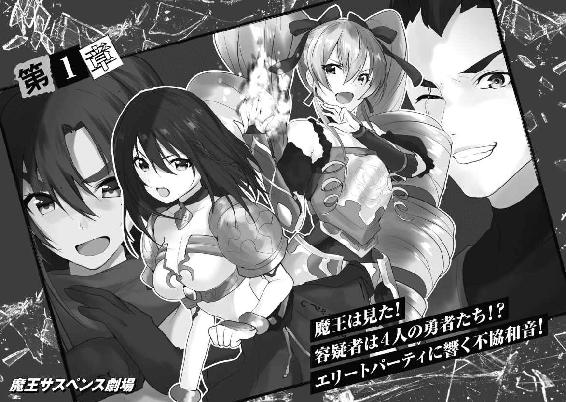

| 【電子特別版】魔王サスペンス劇場 土けむりダンジョン、美人勇者殺し (角川スニーカー文庫) | |
| 丹羽 春信 | |
| (2016) | |
【電子特別版】
魔王サスペンス劇場
土けむりダンジョン、美人勇者殺し
丹羽春信
角川スニーカー文庫
本作品の全部または一部を無断で複製、転載、配信、送信したり、ホームページ上に転載したりすることを禁止します。また、本作品の内容を無断で改変、改ざん等を行うことも禁止します。
本作品購入時にご承諾いただいた規約により、有償・無償にかかわらず本作品を第三者に譲渡することはできません。
本作品を示すサムネイルなどのイメージ画像は、再ダウンロード時に予告なく変更される場合があります。
本作品の内容は、底本発行時の取材・執筆内容に基づきます。
本作品は縦書きでレイアウトされています。
また、ご覧になるリーディングシステムにより、表示の差が認められることがあります。
おれは魔王の玉座に腰かけていた。
なんだってまた、そんなところに座っているかといえば──
おれが魔王だからだ。
自慢じゃないけど。いや、まあ自慢だけど。
魔王なんて、そうそうなれるものじゃないからな。人気職業ランキングとかあったら、まず１位は魔王で決まりだろ。で、２位は勇者というところか。
勇者といえば、最近会ってないなぁ。
かれこれ27年と11ヶ月と24日ほど。
......
あれ、勇者、来なさすぎじゃね？
というか勇者ども、忘れているよね、おれのこと！
そりゃあ、おれも魔王稼業をサボっていたかもしれない。 年も魔王をやっているものだから、ちょっと大物気取りで、宣伝とかも手抜きしていたかもしれない。
年も魔王をやっているものだから、ちょっと大物気取りで、宣伝とかも手抜きしていたかもしれない。
たとえば、どこかの王妃を攫ってみたり、『あの魔王、世界を征服するらしいよ』という売り込みをしてみたり、『暗黒神』復活を企んでみたり。そういうことを疎かにしていたかもしれないけども、だ。
だからって、おれのようなレジェンド級の魔王を忘れるとか、どうなっているんだ近頃の勇者どもは！
あげく、最近じゃ魔王忘年会のお知らせさえ届かなくなった。魔王たちでさえ、おれのことを忘れていやがる。そりゃあ、幹事とか面倒なのは、ほかの奴らに押し付けていたかもしれないけどさ。
だからって、おれみたいな大先輩を忘れるとか、どうなっているんだ近頃の魔王どもは！
魔王といえば、うちに居候を決め込んでいた幼馴染み。シフォンの奴も、喧嘩別れしたきり、戻ってきやしない。
勝手に、うちに拷問室を百七部屋も作っておいて、どういうことだ。拷問にかけた勇者も片付けずに、だ。誰が気の毒な勇者を近辺の病院まで連れて行って、医療費まで出してやったと思っているんだ。
思い出したら、だんだん腹が立ってきた。
だいたい、シフォンの奴、なにが気にいらなくて飛び出していったんだ？ たしか、おれが勇者の質の低下を嘆いていたら、あいつ、いきなり出て行ってしまったような。
それにしても、あのころは贅沢だった。勇者の質とかにこだわっていられたんだから。
いまとなってはどうか？ 勇者は来ないし、金はなくなるし。
ちょっと給与の未払いが続いたら、部下の魔物どもめ、一斉に辞めやがった。
まったく、主人のピンチに一肌脱ぐかわりに、見捨てていくとは。魔物というのはアレかね、情というものがないのかね。
また、腹立つことを思い出した。あれは、おれが一念発起して、王妃を攫いに王国へ出発したときだ。
おれのところで働いていた魔物が、あろうことかはぐれ魔物に落ちぶれて、行商人の一家を襲ってやがった。
勇者以外の人間に危害を加えるとは、なんという奴。奴を従えていた魔王、つまりおれの品格さえ疑われるじゃないか。
あの恩知らずはおれが直々に八つ裂きにしてくれた。
唯一、生き残った女の子がいたので、王国まで送り届けてあげた。おれはそういうところで、優しさを発揮できる魔王なんだ。
身寄りがないというその子を、孤児院まで連れていったら、別れ際に女の子が「お兄ちゃんは、何者なの？」と聞いてくるから、おれは「魔王さ」と答えたんだった。
というか、３日も一緒に旅したのに、あの子、気付かなかったのか。
おれは見た目だけなら十代の人間で通ってしまうから、仕方ないか。
灰色の髪に、肉体労働には不向きそうな身体つき。村とか歩いていたら、ふつうに『商人の息子Ａ』とかに間違われそうだ。瞳の色がマグマの如き赤銅色なのが、魔王ぽくて、ちょっと救い。
ところで、「魔王さ」と答えたあと、女の子はなんと返してくれたのか。
あんまり覚えてないんだよなぁ。
なんか、「大きくなったら勇者になって、絶対、お兄ちゃんに会いに行くからね！」みたいなこと、言ってくれたような気もするが。
願望によって記憶改変してないか、これ。
とにかく、女の子を送り届けて「いいことして気持ちいいなぁ」と帰還して気付いた。王妃を攫い忘れたことに。
で、なんだかやる気も失って、それからずっとこの『魔王の間』に引きこもってきた。
ちょっとは積極的なことしようと、有機農法とかチャレンジもしたが。なにぶん魔王のダンジョンって、日当たりが悪いから。失敗もいいところだ。腹立つ。
だが、１年前、ついに転機が訪れた。
ラトとかいう勇者が、病死したのだ。
このラト、勇者界のレジェンドだった。
そんな実績ある勇者なので、死をキッカケに注目が集まり、研究書も出版された。そしてこのラト、生前のインタヴュー（といっても、30年以上昔のものだが）で、なんとおれのことを話していた。
すると、この魔王ルート（おれのことだ）は何者か、と勇者界で騒ぎになった。
というのも、あのラトをして「魔王ルートだけは、勝てるイメージが湧かなかった」と言わせたほどの魔王だからだ。
かくして、おれは一躍、時の魔王となった。
まだ、誰も魔王ルートを倒していないではないか、まさかそんな大物魔王が何十年ものあいだ忘れられていたとは信じられない。などなど。
これについては、魔王ルートが忘却魔法を使ったに違いない、という勘違いな意見まで出たほどだ。そんな器用な魔法使えるかよ、バカめ！
だが、ラトでさえ倒せなかった魔王だ。無駄に勇者を送り込んでも犬死にさせるだけ。そう判断した勇者組合は、魔王ルートのダンジョンへ挑戦する勇者パーティには、精鋭をそろえると発表した。
......と、まぁ、このラトの死からの一連の出来事については、定期購読している『月刊勇者』に載っていたわけだが。
この『月刊勇者』によると、今月にも、ついに精鋭ぞろいの勇者パーティが送り込まれるとあった。
そして、今日。
情報どおり、くだんの勇者パーティがやってきたのだ。
いまもダンジョン（無人だけど）を突破しているところだ。もうそろそろ勇者たちが、この『魔王の間』にやってくるはず──
おお、噂をすればなんとやら。
『魔王の間』へ続く一本道の向こうから、勇者たちの足音が聞こえてきた。ふいに熱いものがこみ上げてきて、目から流れ出してくる。
おい、落ち着け、おれ。もう勇者たちが眼前に現れるというときに、泣いている場合じゃない。
よし、泣くのはあとだ。まずは、勇者たちとの27年と11ヶ月と24日ぶりの戦いを、思う存分に楽しもう。
約28年ものあいだ干され続けたんだ。そのあいだに溜まったフラストレーションを、いまこのとき、最高の魔王として振る舞うことで、晴らそうじゃないか。
そしていつか苦しかった時期を振り返って、あのころがあったから、いまの自分がある──そう胸を張って言えるように。
５人の精鋭たる勇者が、おれの『魔王の間』へと飛び込んできた。
勇者たちはサッと横一列に並び、声をそろえて言った。
「「「「「魔王覚悟！」」」」」
27年と11ヶ月と24日ぶりの「魔王覚悟！」に、おれは胸が一杯になった。
このあとはおれのターンだ。
勇者の「魔王覚悟！」に対して、魔王が前口上を打つ。そうして、ついに運命の戦いがはじまる。これぞ形式美ってやつ。
おれは涙声にならないよう気をつけつつ、前口上をはじめた。
「よくぞ、ここまでたどり着いたな勇者ども。我の名はルート。貴様らを闇へと葬り──」
気持ちがのってきた矢先、『魔王の間』の明かりが消えた。
真っ暗闇だ。
あれ、電気代、払い忘れたかな。いちおう光熱費は、ないカネをやり繰りして欠かさず払ってきたのに。
って、なにもこんなときに消えることないだろうが！
おれの叫びが天まで届いたのか、パッと明かりが点いた。
よ、よし、アクシデントがあったが、大丈夫だ。こんなことよくある。電気が消えるくらいよくある。
いっそ、わざと明かりを消したみたいな感じにして、こっちの演出にしてもいいし。我ながら名案だ。
じゃあ、いまのは『暗黒魔法でこの世から光を奪った』的な流れで──
見ると、土煙が舞っている。
そのなかに１人の勇者が倒れていた。
その勇者の背中には長剣が深々と突き刺さっている。
背後から心臓を一突きされたのか。衣服に血がしみ出していた。
そして死んでいる。
まてよ。これはつまり、あれじゃないか。あれだよな。あれでいいんだよな。
おれは空気を一杯に吸い込んで叫んだ。
「なんで、勇者が殺されているんだよ！」

「レクシアが殺されたわ！ 犯人はこの中にいる！ でも誰かはわからないので、手っ取り早くみんな殺しておきましょう！」
殺された勇者レクシアの背中から、長剣を引き抜いた少女が、ほかの勇者を闘志むきだしの眼差しでにらんだ。
「そいつは単純でいいじゃねぇか。最後まで生き残っていた奴が無実ってわけだ」
「拙者、降りかかる火の粉ならば遠慮なく斬らせてもらうぞ」
「わたくしの火炎魔法で消し炭にしてさしあげます」
ほかの勇者も感化されたらしく、いきなりの臨戦状態となり──
「ちょっと、待てぇぇ！」
ルートは４人の勇者の中央へと雷を落とした。各々、戦う気満々だった勇者たちは、これによって急停止した。
「お前たち、勇者のくせに魔王の前で殺しあうって、どういうことだ！ 恥を知れ、恥を！ だいたい、勇者が殺されたら、まずは魔王のおれを疑うところだろ！ 勇者同士で殺戮ゲームし始めるところじゃないだろ！」
ルートとしても、やってもいない勇者殺しを責められるのは癪だった。だがスルーされるのは、さらに我慢がならなかった。
「とりあえず、謝れ！ 魔王のおれを無視してしまったことに対して！」
すぐに反応したのは、先ほどの少女だ。
「魔王！ 誰が、あんたなんかに謝るものですか！」
その少女は、輝く翡翠色の瞳で、ルートを射貫いてきた。
ルートはいっときたじろぎつつも、魔王としての威厳を思い出して反論した。
「謝らないとは、なんだ！ 最近の勇者は躾けが行き届いていないぞ！ 昔の勇者はな、おれの前口上の最中にクシャミしただけで、土下座して謝ったものだぞ！」
少女は肩にかかっていた黒髪を、手で払った。絹糸のような髪がさらりと揺れる。
「そのことね。レクシアが殺されて台無しになったけれど。あたし、あんたの前口上の最中に、不意打ちをかます計画だったわよ」
「前口上の最中に、不意打ち！ そんなことが許されるかぁぁ！ おれは断固、抗議する！ お前は──」
「あたしはミア。この名前をよく覚えておきなさい、魔王。あんたの息の根を止める勇者の名よ。まあ、あたしの下僕になるのなら、命を見逃した上、世界の半分くらいあげてもいいけれど」
ミアは軽装鎧に身を包んでいた。幼さののこる顔立ちや、華奢な身体から、まだ15歳前後というところのようだ。いくぶん吊りあがり気味の目が、生意気そうな雰囲気をたたえている。
「って。それ、おれの台詞！ 魔王の台詞をパクるな！」
あまりに常識知らずな勇者に、ルートは眩暈を覚えた。
それでも、ここで諦めてはいけない。ルートはそう自らに言い聞かせた。ようやく巡ってきた再起のチャンスなのだ。
壇上にある玉座からルートは立ち上がり、勇者たちを見下ろした。
「諸君！ 勇者レクシアの死は残念だった！ しかし、いまはその死を忘れて、目の前のことに集中しよう！ すなわち、お前たちにとっての魔王戦だ！ おれとの戦いだ！」
「そうね。それが妥当ね。勇者とは、なによりも魔王討伐を優先するものよ」
ミアが熱心にうなずき、ルートに同意を示した。
だが、残り３人の勇者は、気が進まないという様子だ。すっかり打倒・魔王に水を差されてしまったという顔。
魔王戦をする前に、いまにも回れ右して帰りかねない。
だが気持ちはわかる。せっかく意気揚々と『魔王の間』に乗り込んだのに、仲間の勇者が殺されてしまった。しかも犯人もまた、同じ勇者かもしれない。これではパーティ内は疑心暗鬼、まともに戦えたものではないだろう。
ルートは決意した。
「じゃ、まずは謎を解こう！ 誰がレクシアを殺したのか！ それを解き明かした暁には、おれとの戦いだ！ それで文句はないだろ？」
「もちろん、それなら問題ないわよ！ でしょう、みんな？」
ミアが残りの勇者に熱っぽく言った。ほか３人の勇者は、必ずしも乗り気ではなさそうだが、了解の印にうなずいた。
ミアは満足げにうなずいた。
「魔王。どうやら、余命が少し延びたようね。けれど肝に銘じておきなさい。あんたの内臓を抉り取るのは、このあたしよ」
「グロいな！ 勇者のくせに表現がえげつないな！」
「あたしは年中無休で、魔王、あんたを八つ裂きにしてきたのよ。心のなかで！」
「お前の心のなかは血まみれだな！ どうしてそこまで恨みを買われなきゃならないんだ！ お前の両親とか惨殺しないとわりにあわない憎まれっぷりだよ！」
ルートの訴えも無視して、ミアは続けた。
「あんたをはじめて見たときから」
「え、見たとき？」
「バカね。あんたの名をはじめて聞いたとき、よ。とにかく、そのときピンときたのよ。魔王ルート。これはあたしの獲物だって。魔王ルートを倒すことこそ、あたしの人生の意味。ゆえに、あたしの心には、つねにあんたがいるわ！」
「お前、なんか重い！」
「あたしの思いは、つねに魔王ルートを倒すことだけ。あとは病気のお父さんのことかしら。でいうと、『魔王ルートを倒す』が。『お父さん心配だわ、早く元気になって』が残りのよ！」
「もっとお父さんのこと心配してあげて！」
「あたし、魔王と関係のないことは、すべて日常から排除してきたわ。たとえば先日も、十年来の幼馴染みから、『君が好きだ』と言われたのだけど」
「初々しいなぁ。幼馴染みへの淡い恋心、その告白とは」
「あたしは答えたものよ。『そうやって、あたしの魔王への思いを断ち切ろうとするのね。ならば、あなたは敵！ 殺す！』と」
「なんで『君が好きだ』の答えが『殺す！』なんだ！」
「それで剣を振り上げたら、なぜか逃げられたわね」
「それは逃げるよね！」
「ところで、あの幼馴染み、なぜ泣いていたのかしら」
「お前に心をズタズタにされたから！」
「ところで、あの幼馴染み、名前はなんといったかしら」
「せめて名前だけは覚えておいてあげて！」
ルートはふと『泣きながら走り去る幼馴染み』というイメージに、シフォンのことを思い出した。なぜ、いまシフォンなのか？
ルートは意識して、ミアに注意を戻した。
ミアはビシッとルートを指差し、厳かに言った。
「とにかく、魔王！ あんたは、このあたしのものよ！ ほかの誰にも渡さないわ！」
「ミアさん。それより、あなた、先ほどからレクシアさん殺しの凶器を振り回していますけれど？」
金色の髪をした女勇者が、冷ややかにそう言った。
良い感じに盛り上がっていたミアだったが、ここで仲間の勇者に水を差されて、顔をしかめた。
「誰かと思ったら、ローラ。あたしの邪魔をしないでくれる？」
縦ロールのツインテールを、繊細な指先で梳きながらローラはミアをにらみ返した。
「邪魔をしたくもなりますわ。あなたは良いですよ。その下品な口から愚にもつかないことをダラダラとたれ流していれば。しかし、それによってわたくしの貴重な時間が失われているということはおわかりですか？」
「うるさいわね」
「なんという口の利き方でしょう！ もっと年上を敬ったらどうですの？」
「あんたね。あたしに絡んでいるヒマがあったら、その貧相な胸に奇蹟が起こるよう、神さまに祈っていたほうがいいんじゃない？ その胸のタイトルは『見よ、これこそが洗濯板の極み』でしょうか、ローラお姉さん」
ローラはドレス・アーマーを着ていたが、その胸元はなだらかだった。
「よけいなお世話です！ それにタイトルは『まだまだこれから、諦めたらそこで試合終了』ですから！」
「真のタイトルは『18歳は、すでに試合終了さ♪』なのよね」
「なんという生意気な後輩ですの！ 許せません！」
「おい！ 魔王を放置プレイとはいい度胸だな、お前ら。だいたい、そっちのローラとかいうのは──あれ、その縦ロール、なんか変じゃないか？」
ローラは、ルートへと顔を向けた。縦ロールがふわりと揺れる。
「変とはなんです！ わたくしの縦ロールの美しさがおわかりになりませんの？」
「とにかく、その縦ロールにドレス姿。お前、お嬢様でも気取っているのか？」
ルートは嫌味で言ったのだが、ローラは嬉しそうに微笑んだ。
「よくぞ聞いてくださいました。わたくしのあふれ出る高貴さ、魔王にもわかってしまいましたね。さ、遠慮なく、わたくしの高貴なオーラを甘受することです。出し惜しみはしませんので」
「そんなものいるか！ その高飛車な物言いは、まるで王族気取りだな！」
またもルートは嫌味で言ったのだが、ローラは嬉しさがいや増した笑顔で返した。
「そのとおりです！ わたくしはなにを隠そう──隠しようにも、隠しきれませんが──王族なのです！」
「なんだって、王族だって？ 王の一族は、かつて大魔王を滅したと聞くが──それほどの大物が、おれのもとにやってきたというのか！」
ローラは誇らしげに、平坦な胸元へと片手をそえた。
「そうです！ しかもわたくし、継承順位が位なのです！」
「継承順位が思ったより低かった！」
「あ、間違えました。正しくは、でした」
「なんで、継承順位に とかあるんだ！ どういう継承順位なの、それ！」
とかあるんだ！ どういう継承順位なの、それ！」
「とにかく、わたくしは王族なのですから。そこのところ、理解していただきたいですね。あなたがわたくしの満足する『おもてなし』ができるか、厳しく採点させていただきますよ！」
「いや、『おもてなし』する気とかないから！ お前、ここになにしにきたんだよ！」
ローラは訝しげな顔をした。
「魔王と戦いながら、懐石料理をいただけるのかと」
「いただけるか！ 懐石料理を食べながら戦うとか、どれだけ器用な戦いかただ！」
「それくらいの器用さは王族ならば、当然のことです。しかし、わたくしの懐石料理パスをまともに返せないとは、たいした魔王ではありませんね」
「そんな弾丸パス、まともに返せるか！」
「このままでは格付けの『星』は一つもあげられませんよ」
「格付けってなんだ！ お前はさっきからいったい、何様だ！」
「何様と問われれば、答えてさしあげましょう......いえ、ですから、王族ですわ。先ほどから何度言わせる気ですか、魔王」
「最近、巷を賑わす王族詐欺というものがあってだな」
「誰が詐欺師ですか！ わたくしは歴とした王族ですわ！」
「じゃ、お前。王族倒立できるのか？ あの王族のみが成し遂げることができるという、王族倒立ができるというのか？」
「お、王族、倒立ですって？」
ルートのデマカセを、ローラはすっかり信じたらしく、動揺しだした。
「あれー、どうしたのかなぁ？ 王族倒立もできないのに、王族気取りなのかな、この子は。詐欺の子かな、この子は」
「で、できます！ 王族倒立くらい！ その、あれでしたね、えーと、倒立して」
「そう、そう。両手を使わずに倒立する奴ね。これ、ふつうの人がやっても失敗するけど、王族だと神のご加護で、身体が宙に浮いて成功するから、いやマジで」
「く。わ、わかりました！ 受けて立ちましょう！ 見なさい、魔王！ これが、王族倒立で──はぐっ！」
両手を使わず逆立ちに挑戦したローラに、神のご加護はなかった。結果、頭から床に落ちて、短い悲鳴を上げてから倒れた。
そんなローラの惨状を見ながら、ミアは冷ややかに言った。
「お嬢様、あんた魔王に騙されているわよ」
「よ、よくも騙しましたね！」
立ち上がったローラは、怒りで顔を真っ赤にしていた。そして、彼女の細い両腕を中心にして、業火が発生した。燃え盛る炎は、コンマ秒ごとに火力を上げていき、二つの山火事が生まれたようだった。
「お前、炎使いか」
ローラは火炎を消し、高慢な態度で言った。
「火炎魔法において、わたくしの右に出る者はいません。今回だけは、魔王、あなたの無礼を許してあげましょう」
「それはどうも」
ルートはほかの勇者へと視線を転じた。すると、勇者パーティのなかで唯一の男と目があった。長身瘦軀の男だ。
男はウムとうなずいた。
ルートもウムとうなずいてから、よそに視線を向けた。
「まて！ 貴様、なぜ拙者を無視するのだ！ どういう了見なのだ！」
「いやぁ。どうせなら、女の子とだけ話していたい。男の勇者なんていらない。というか、勇者はもう女だけでいいんじゃないかな」
「貴様！ なんという侮辱か！ よいか、拙者の名はグア──」
「いいから、いいから。男勇者の名前とか、いいから。スルーパス、スルーパス」
「グアンだ！ グアンという名の勇者、貴様も聞いたことがあるだろう！ そうだ、魔王よ！ あのグアンだ！ かつて魔王ガオウを滅ぼした偉大なる勇者だ！」
グアンは左眼をかっと見開いて怒鳴った。右眼については、古傷によって塞がれていた。刀傷のようだ。
「なんだって！ ガオウを滅ぼしただって！ と、ガオウとかとくに記憶にないので、驚いたフリをしておく」
「ふっふっふっ。ガオウが滅ぼされたことに動揺し、一時的に記憶喪失に陥ったか、魔王よ」
ルートはミアのほうに顔を向けて尋ねた。
「ガオウって、誰だっけ？」
「プニプニしている感じの、蹴飛ばすだけで倒せちゃう、ほら、スライム的な奴ね」
「いや、それただのスライムだから。もう、いいよ、グアンに聞くからさ。おい、グアン。ガオウというのはどんな奴だっけ」
「魔王よ！ いまや拙者の恐ろしさに、縮み上がっていることだろう！ ガオウを滅ぼしたこの拙者に！」
「お前のコミュニケーション力の低さに縮み上がっているところだよ！ お前、そんなのでよくハーレム・パーティでやっていけるな」
グアンは嘲笑を浮かべた。
「ふん。ハーレムだと？ なにを腑抜けたことを抜かしているのだ、魔王！ 拙者は勇者の道に生きる漢だぞ！ 女なんかと遊んでいる無駄な時間などはない！」
「まるで求道士のような発言だ。かつての勇者たちを思い出す」
「そのとおりだ、魔王。拙者、古き勇者の伝統を継ぐ者！」
「そうだよね！ 昔の勇者は、女遊びなんかしなかった！ 勇者パーティ内で、できちゃった結婚なんかしなかった！ ダンジョンが長いと夜の一人寝が寂しくて、とか言い訳なんかしなかった！」
「むろんだ。ゆえに拙者、女には指一本触れたりはせんぞ！」
「そうだ！ それでこそ勇者だ！」
「女に指一本でも触れてみろ！ その３日後には、『あなたの子よ』と赤子を連れて来るに決まっているのだ！」
「そう──いや、それはないだろ！ 指一本触れただけで『あなたの子よ』はないだろ！ しかも、３日後って、どれだけ早い『あなたの子よ』だ！ 速達便ですか！」
「そもそも、女という生き物は、勇者を堕落させるため秘密結社が拵えたものに違いないのだ！ 魔王よ、『打倒女』の旗印のもと拙者とともに戦おうぞ！」
「魔王をスカウトって、どういうことだ！」
ルートはハッとした。ついグアンのペースにのせられてしまった。
「まあ、百歩譲って、魔王であるおれの配下になら、してやってもいいけどな。どうだ。おれの配下になるか？ おれが世界を征服した暁には、金一封をやるぞ。牛丼日分くらいの」
「金一封だと？ 拙者、カネなどに興味はない」
「え......じゃあ、おれの配下には？」
「ならん」
グアンは片頰だけで笑みを作った。
「それより魔王よ。死闘を繰り広げ、『好敵手』と書いて『とも』と呼ぶ貴様だけには明かそう」
「お前と死闘を繰り広げていたとか、寝耳に水もいいところだけど！」
「拙者の真の敵は、勇者を滅ぼそうとする秘密結社なのだ。彼奴ら秘密結社は、勇者のやる気を削ぐため、悪口を書き記した封書を送りつけたりしているのだ。なんという悪辣な結社であろうか！」
「その秘密結社、放っておいても勇者には害がないような気がする」
ルートがグアンに呆れていると、視界の端に、最後の勇者の姿が入った。
その女勇者は、燃えるような赤い髪だった。
赤い髪は腰のあたりまで伸びている。ファッションで伸ばしているというより、切るのが面倒なので、伸ばしっぱなしという感じ。
そんな彼女は水着の親戚のような面積の狭い軽装鎧を身につけていた。そのおかげで豊満な胸が、ルートには良い目の保養だ。武道家らしく、程よく筋肉のついた、すらりとした両手足が伸びている。
そして彼女は、ごくごくと酒瓶を呷っていた。
「って、ちょっと待てぇぇ！」
酒飲みの女勇者は、面倒くさそうに言った。
「ああ、なんだ？ 魔王さん、オレはサキラだ。よろしくさん」
「あ、よろしく。いや、そうじゃなくて！ 酒を飲むな！」
「心配することはないぜ。オレは、もう二十歳をすぎている」
「飲酒できる年齢かとか聞いているんじゃないから！ お前、ここをどこだと思っているんだ！」
「ゴミ溜め」
「こんな侮辱ははじめてだよ！ ゴミ溜めってなんだ！ 毎日、掃除を欠かさないというのに！ お前、おれの心を殺しにきたな！」
サキラは気だるそうに肩をすくめた。
「あのなぁ。勇者だって、酒くらい飲むだろうが。それとも、魔王さんは全勇者に禁酒を勧めようっていうのかよ？」
「そうじゃなくて！ ここは『魔王の間』だ、ってこと。『魔王の間』の、厳かな空気を読もうね！」
「空気を読んだから、葡萄酒でもビールでもなくて、ウイスキーなんだろうが」
「なんで酒の種類の空気とか読んでいるんだ！ そうじゃなくて、『魔王の間』で酒とか飲むなというんだよ！ 勇者が酔っ払って、どうする！」
サキラはニヤニヤと笑って、片手を振った。
「そのことは安心しろよ。オレは酒にはめっぽう強いからな。そうそう酔ったりしねぇよ。ウッ。ところで宝箱はどこだ？」
急になにやらこみ上げてきたらしく、サキラはいきなり顔色を悪くして、片手で口をおさえた。
「宝箱に吐く気か！ だが残念だったな、宝箱にはゲロ防止機能がついている！」
「く、くそ──」
サキラは道具袋から草葉を取り出し、飲み込んだ。すると、たちまち顔色がよくなった。
「おーし、大丈夫だぜ、魔王さん。毒消し草で完全復活だぜ」
「ウコン代わりかい！」
「それはそうと魔王さん。オレはさ、欲とかかかねぇからな。五億クレジットくらいもらえれば、喜んで部下になるぜ。勇者の魂、売り渡すぜ」
「いるか！ お前みたいな腐った魂、お引き取り願います！」
「返品は受けつけねぇ」
「もう買っていることになっているぅ！ クーリングオフ制度はどこいったぁ！ とんだ悪徳商法だぁ！」
ルートはゼイゼイと荒い息をついた。この勇者たちは、ルートの魔王としての常識を覆すほど、無茶苦茶な者たちだった。
だが、それを言うなら『魔王の間』で、勇者による勇者殺しがあったことも前代未聞ではあるが。
ルートは、浮揚魔法でレクシアの遺体を浮かせ、『魔王の間』の隅へと運んだ。そこに、石壁を材料にした寝台を作り、そっとレクシアを寝かせた。
それからルートは、あらためて４人を見やった。
「勇者が、勇者を殺すなんて！ 世も末だ！ そして。犯人は、お前たち４人の中にいる！」
「凶器はミアさんの長剣です。〈カンカン〉とかいうパンダっぽい剣です。ゆえにミアさんが犯人ですね」
ローラがそう指摘すると、ミアがキッとにらんだ。
「あたしは殺してなんかいないわよ！ それに〈カンカン〉じゃなくて〈ファンファン〉よ！ カンカンとファンファンじゃ大違いよ！」
「いや、どっちも同じようなものだから！ どっちもパンダっぽいから！」
ルートはミアとローラの諍いの仲裁に入った。
「凶器のことは、このさい置いておけ。真っ暗闇のあいだに、べつの奴がミアの長剣を奪い、犯行に及んだのかもしれない。勇者のスペックなら、それも可能だろうが」
「そうよ。さすが魔王、慧眼よ。あたしは無実よ」
「そう推理されることをにらんで、あえて自分の長剣を使ったのかもしれませんよ」
「なにを言うのよ、この絶壁おっぱい！」
ローラはミアにグッと顔を近づけ、怒鳴った。
「な、なんてことを言いますの！ だいたいあなたは生意気ですのよ！ ついこないだ、勇者免許を取ったばかりのルーキーのくせに！」
「うるさいわね。常時、胸に『まな板』を装備しているくせに。あ、ごめーん。それ、『まな板』装備じゃなくて、素だったわね。素が『まな板』だったわね」
「なんですって！」
「なによ！」
「なんでもいいよ！」
ルートは我慢の限界とばかり、大声を上げて場を制した。
「もう、おっぱ......胸の話はいいから！ そして凶器のことは忘れろ」
「魔王さん、なに顔を赤くしていやがるんだ。どこの思春期のガキだ」
「誰がガキだ！ おれは海千山千の大人だ！」
「ま、どーでもいいや。それより魔王さん、凶器をスルーするとしたら、どうやって犯人を見つけるつもりだ？ 犯人を一発で見分けられる魔法でも、持っているわけか？」
サキラが『お手並み拝見』という口調で、そう尋ねた。
「あいにく、その手の魔法は使えない。......まぁ、似たような魔法ならあるにはあるけど、あれには発動条件があるからなぁ」
ルートは小声で付け足した。
「だけど、せっかくだ。設置しておくか」
ルートはある魔法陣を構築して、『魔王の間』に設置した。不可視タイプのそれに、勇者は誰も気付かなかった。
ルートは気を取り直し、勇者一同を見回した。
「レクシアを殺した、ということは、だ。レクシアを殺す動機があったということだ。お前たち４人のうち、１人には──ということで、動機から犯人を見つけ出す！」
ルートはビシッと勇者たちを指差した。
勇者たちは互いを疑わしげに見合った。やがてローラが納得のいかないという顔で、挙手した。
「ですが、魔王。わたくしたちは今日はじめてレクシアさんとお会いしたのですよ」
「だけど、このダンジョンに来るまでには、何日も旅をしたわけだよな」
「ええ。たしかに旅はしました。けれど、わたくしたち５人は、このダンジョンの表で現地集合でしたので」
「現地集合って！ なんかノリ、軽くない!? 遠足っぽくない!?」
「ですので、わたくしたちは先ほどレクシアさんに出会ったばかりです」
「じゃ、誰かが噓をついているんだ。本当はレクシアと以前会っているのに、隠しているんだ」
「お、魔王さん。なかなか鋭いじゃねぇか。さすがだねぇ」
「はぁ、どうも。というか、サキラだっけ。お前、ちょっとおれにフランクすぎだよ！ ほかの勇者もそうだけどさ！ いいか、魔王への敬意は忘れないでいこう！ わかったらみんな、『はい！』と大声で言おう！」
「「「「......」」」」
「『はい！』と大声で言おうね！」
「チッ」
「いま舌打ちしたのは誰！ 舌打ちとか、魔王に失礼だろうが！」
「「「「チッ」」」」
「なんでこういうときだけ息がピッタリなんだ、お前らは！」
怒るルートを冷ややかに見ながら、ローラが言った。
「それより、魔王。このダンジョン、魔物が一匹もいませんでしたわね。それに対して、ミアさんがバカな推論を披露していましたけれど、本当のところはどうなのです？」
「推論だって？」
首を傾げるルートに、ミアが自信満々に答えた。
「つまり、こういうことよ。魔王ルート。あんたがあまりに残虐で暴虐で最凶でピーなものだから、魔物たちは逃げてしまったのよ。そうなのでしょう？」
「ピーってなんだ、ピーって！ おれは自主規制が必要なことはなんらしてないからな！」
「いいから、魔王。あたしの推論どおりなのでしょう」
「えーと......そのとおりだ！ おれがあまりに残虐で暴虐で最凶でピーなものだから、魔物たちはみな逃げ出してしまったのだ！」
「そういや、魔王さん。宝箱の一つに、裁判所命令の用紙が入っていたぜ。魔物への６ヶ月分の賃金の支払いを命じるとかなんとか」
サキラがニヤニヤ笑いながら、裁判所命令の用紙を道具袋から取り出した。それは10年も昔に提出されたものだ。
「つーことは、だ。魔王さん、さては半年も給与未払いだったわけだな。ははぁ。そりゃあ、残虐で暴虐で最凶でピーな、ブラック魔王企業だよなぁ」
「......」
「......」
ルートとミアがそろって沈黙した。一方、ローラは失笑した。
「給与未払いって......貧乏暮らしですわ！ 魔王のくせに貧乏暮らしですわ！ ミアさんのような庶民にはピッタリですね」
「よけいなお世話だ！」
「よけいなお世話よ！」
つづいてミアは、ガクッとその場にくずおれた。
「そんな......あたしの魔王が給与未払いで魔物に逃げられていたとか。こんなこと信じられないわ。あってはならないことよ。そうだわ。これは夢ね。悪夢に違いないわ。ちょっと確かめてみましょう」
ミアはローラのもとへ這っていき、ローラの爪先へとナイフを振り下ろした。
「これが夢なら痛みは感じないはずよ！」
「きゃぁぁぁぁ！」
ローラは紙一重でナイフをかわして、後ろに逃げた。
「な、な、なんてことしますの！ 正気ではありません！」
「ローラ。これが確実な判定法なのよ。我慢しなさい」
「なぜ、わたくしが愚図っているような感じになっていますの！」
「これが夢なら、あんたの爪先がザックリいっても、あたしは痛みを感じないはずよ。そしてこれが現実なら、あんたの爪先がザックリいっても、やっぱりあたしは痛みを感じないはずよ」
「それ、わたくしの爪先がザックリされているだけではありませんか！」
「チッ。爪先くらいでガタガタ抜かすんじゃないわよ、まな板」
「調理器具あつかい！」
「あたしなんて、生涯の魔王と決めた奴が、魔物に給与もまともに払えない甲斐性なしと知ったところなのよ。あたしの痛みに比べたら、あんたの爪先の一つや二つ」
ルートは、ミアをガッカリさせてしまったことで少なからず責任を感じた。
「あの、ミア。おれは魔物とかいなくても、最強の魔王だから。ぜんぜん、いけるから」
「魔王！ 魔物なんか、お金じゃなくても恐怖で支配すればいいじゃない！ 見せしめに50体ほど潰しておけば、大人しくなるじゃない！」
「え、いや、基本おれは平和主義者だし」
「魔王のくせに平和主義者って、なんなの、バカなの！ いいえ。こんな魔王に期待していた、あたしがバカだったのよ！」
ミアは顔を両手で覆って、号泣しだした。
「バカとはなんだ、バカとは！ おれが魔物に逃げられようと、魔物たちが居酒屋とかでおれの陰口で盛り上がろうと、お前の知ったことじゃないだろうが！」
「関係あるわよ！ あたしは魔王ルートを倒すことで名をあげるのよ！ それなのに肝心の魔王が雑魚じゃ、お話にならないわよ！」
「雑魚とはなんだ、雑魚とは！ 言っちゃなんだけど、やろうと思えば魔物たちみんな、右手の小指一本で全滅できたからね！ それをしなかったのは、おれが懐の大きい魔王ゆえだからね！」
「懐は関係ないわよ！ どうせ、惰眠でも貪っているうちに逃げられたんでしょ！」
「......」
「ええ！ まさか、本当にそうなの？ し、信じられないわ！ もう、あたしは、ちょっと、呼吸が、で、できなくなって」
「もしかして過呼吸か？ そういうときは、浅くゆっくり呼吸するんだよ。というわけで、気を取り直して」
ショックのあまり過呼吸のミアは放置して、ルートは先を続けた。
「動機の考察だったな。お前たちのなかに噓をついている者がいる。以前にレクシアと会っているのに、とぼけている者がいるんだ。それをいまから、おれが見抜く。では、まずローラからはじめよう」
名指しされたローラは、挑むようにルートを見返した。
「いいですわよ。わたくし、噓はついていませんもの。さ、なんでも聞いてくださいまし」
「お前、とりあえず語尾に『ですわ』をつけておけばお嬢様ぽいとか思っているだろう」
「そうです。わたくし、語尾に『ですわ』でお嬢様力をアップだと浅はかなことを考えているアホな子──って、なにを言わせますの、魔王！」
「いやいや、アホな子とまでは言ってないけど。で、つぎはそっちのサキラとかいう勇者。レクシアと会ったのは、今日がはじめてなんだね」
サキラは酒瓶を呷りつつうなずく、という器用なことをした。
「ああ、そうだぜ」
「なるほど、なるほど」
ルートは何度かうなずいて、尋問を終わりにした。
ローラが大声を上げた。
「ちょっと、お待ちなさい！ すごく納得がいかないです！」
サキラが顔をしかめた。
「うるせぇな、お嬢様は。耳元で騒ぐなよ。つーか、オメー......」
「え、なんですの？ いきなり、わたくしを見つめてきてなんですの、サキラさん？」
「オメーの縦ロール、ちょっと回転数とか高くないか？ こいつは、まるでドリルみたいだぜ。よし、オメーはいまからドリルちゃんだ」
「いったいなんですの、この飲んだくれは！」
ローラとサキラが親交を深めているのをよそに、ルートはいまだ落胆中のミアへと声をかけた。
「ミア、まだ落ち込んでいたのか。おれは凄い魔王だよ。魔物に逃げられても凄い魔王だよ」
ミアは憂いを帯びた眼差しで、ルートを見上げた。
「信じられないわ。もう、あたしにはなにも信じられない。そう、いまのあたしの気持ちは、暗黒よ。どう責任を取ってくれるのよ！ あたしの純情を汚したこの悪魔！」
「悪魔とか言うな！ 魔王と悪魔は別の生き物だ！ 一緒にするな！ 名誉毀損で訴えるぞ！」
「魔王！ あんたはあたしの心を踏みにじったのよ！ そこのところ、覚えておきなさいよ！」
「あー、覚えた、覚えた。それでミア、お前もレクシアとは今日がはじめてなんだな」
「あんたの質問に答える義理はないけれど。ええ、そうよ」
「ふむ」
ルートは最後にグアンへと顔を向けた。
「で、グアン。お前も今日がはじめてだと言うんだろうな、どうせ？」
グアンは右眼の傷跡をごしごしと片手でこすりながら、うなずいた。
「左様。拙者、レクシア殿など知りもしなかったぞ」
「あそう......なあ、グアン。ゲームしよう。おれの四つの質問すべてにお前が『イエス』と答えられるか、というゲームだ。真に男気があるお前なら、このゲーム、逃げたりはしないだろうな」
「ふん。拙者の男気に挑戦してくるとは、魔王、命知らずだな。よかろう！ そのゲーム、のった！」
「では、はじめよう。お前は勇者か？」
グアンは両手を両脇に垂らしたまま、
「イエス」
「お前は女か？」
右眼の傷跡をゴシゴシとこすりながら、
「イエス」
「ここは、ゆけむり温泉殺人事件の犯行現場か？」
右眼の傷跡をゴシゴシしながら、
「イエス」
「お前がレクシアと会ったのは、今日がはじめてか？」
右眼ゴシゴシ、
「イエス」
「......噓ついているだろ、お前！ 前からレクシアのことを知っていただろ！」
グアンは口をパカッと開け、身動きを取らなかった。それから、見るからに狼狽しながら言った。
「な、ななな、なぜ、そうなるのだ！」
「お前、噓つくとき右眼の傷跡をこする癖があるだろ！」
「な、なんと！ 拙者にはそのような癖があったのか。母上から『グアン、あんたは死んでも噓だけはついちゃいけないよ。頓馬に見えるから』とはよく言われていたが、そのような理由があるのなら、嗚呼、母上よ、なぜ教えてくれなかったのか」
「じゃ、認めるんだな。レクシアを以前から知っていたんだな」
「いいや、拙者は母上の言葉を思い出したに過ぎない！ レクシア殿のことなどは知らん！」
「そうでしたのね！ あなたがレクシアさんを殺しましたのね！ では、わたくしが丸焦げにしてさしあげますわ！」
グアンの負け戦的な弁明を聞いて、ローラは逆に確信が強まったようだ。丸焦げ宣言をするなり、ローラは両腕に火炎を纏った。そのままグアンに躍りかかろうとする。
「おいローラ！ お前は先走ってないか！」
「なんですの？ わたくしを止めるとは良い度胸ですわね、魔王」
「まだグアンが犯人と決まったわけじゃないだろ！ いまはまだ、グアンがレクシアを以前から知っていた、というだけだろ！ というか、そんなに燃やしたら熱いだろうが！」
ルートは指をパチンと鳴らした。
すると、ローラの上方からバケツを引っくり返したように大量の水が流れ落ちた。
とたん、紅蓮の炎は消され、白煙が噴き上がった。ローラはショックを隠せない様子だ。
「し、信じられませんわ。わたくしの魔法の炎が、こうもあっさりと消火されてしまうとは」
ローラの圧倒的な火力を瞬時に消すため、ルートは魔力を練りこんだ『水』を生成したのだ。
驚くローラをスルーして、ルートは次へと進めた。
「ではグアン、あらためて聞こうか。お前がレクシアを殺したのか？」
「違う。拙者は殺していないぞ！」
ルートは、グアンが右眼の傷跡をゴシゴシしないのを見届けた。
「どうやら本当のようだな」
「異議ありですわ！」
「異議ありよ！」
ローラとミアが同時に声を上げた。
「な、なんだよ！」
「右眼ゴシゴシの癖を知った以上、噓をつくとき右眼ゴシゴシしないよう意識しているかもしれませんわよ」
「そうよ。魔王がよけいなことを教えるからだわ。グアンに右眼ゴシゴシの癖を教えさえしなければ、それを目安にして真偽を確かめられたというのに」
「く、反論のしようがない。ここは魔王らしく威厳たっぷり謝ろう。ごめんなさい！」
「威厳どころか、小物臭が漂ってきたわ。情けない！」
ローラはグアンへと鋭い視線を向けた。
「そういうわけですから、グアンさん。あなたがいまのところ第一容疑者ですわ。さ、弁明なさるならいまのうちです。わたくしの業火がまた燃え出すまえに」
「弁明だと！ 拙者は弁明などという女々しいことはしないぞ！」
「......弁明が女々しいって、偏見もいいところですね」
埒があかないので、ルートは攻め方を変えてみることにした。
「あー。グアンよ、グアン。お前は、男気あふれる勇者なのだろう。だが男気とはなんだろうか。それはどんなときも、威風堂々としていることだ。大波を受ける大岩の如く」
「大岩は波に削られていつか消滅するんじゃない？」
ミアの素朴なツッコミは無視して、ルートは続けた。
「そして大岩には裏表はないのだ。真の男もそうなのだ。こそこそと隠し事なんかしたりはしないのだ。コホン。で、あるからして──」
「魔王。あえて言うけれど、『で、あるからして』は年寄り臭いわよ」
「......とにかく、グアン！ 貴様が『打倒女』の御旗を上げる男だというのならば、それを行動で示せ！」
ルートの半ば投げやりな言葉に、しかしグアンはいたく感動した様子だった。片目をうるうると潤ませ、右拳を突き上げて、これから大軍にでも突撃するような音声で言った。
「よかろう！ 真の男たるもの隠し事はせぬ！ だが、拙者の話を聞けば、拙者がレクシア殿を殺めたりはしないとわかるはずだ！」
「じゃレクシアとは前にも会っていると認めるんだな」
「認めよう。レクシア殿とは、以前にもお会いしている。そして諸君らに話して進ぜよう。傾聴するがよい！」

拙者、生まれながらに宿命を帯びた勇者だ。
それというのも、拙者の家系は代々、勇者根絶を企む秘密結社と戦ってきたのだ。拙者の父など、何度、秘密結社の企みを阻止してきたことだろうか。豆腐屋という表の仮面をかぶったままで！
そうなのだ。秘密結社との生涯を賭けた戦いこそ、拙者の──
うむ。なぜ、ローラ殿は火炎を噴き、ミア殿は剣を煌かせ、サキラ殿は拳の骨をポキポキと鳴らし、魔王にいたっては殺戮魔法を唱えはじめているのだ？
ま、まて。わかった。拙者の偉大さについて話すのは、また別の機会にしておこう。話す。いま、レクシア殿と出会ったときのことを──話す。
あれは魔王ガオウ討伐のときだった。
ガオウ討伐は勇者たちにとって至急の任務だった。なぜならガオウは、ダンジョン近辺の村々へと降りてきては、罪のない民を殺していたのだ。
もともと、ガオウは支配下に置いた村々から、金銀財宝を徴収していた。魔王の中には、そういった財宝に目がないものが多い。奴らは、それを使うわけではなく、ただため込むことに喜びを感じているのだ。
あるとき村々の者たちは傭兵（勇者崩れともいうな）を雇い、魔王ガオウへと反旗を翻した。しかし反乱は失敗に終わり、たくさんの民が命を落とすことになった。
このときまで勇者組合はガオウを静観していた。彼らはガオウの強さを警戒していたのだ。かつ金銀財宝を与えておけばガオウが民に危害を加えないことも、彼らに事態を先送りさせる言い訳を与えてしまっていた。
その静観が、悲劇を生んでしまったのだ。
聞けばくだんの村人たちは、再三、勇者組合にガオウ討伐を依頼していたという話ではないか。その声を無視したため、村人は傭兵などを雇ったのだ。
勇者組合は罪の意識──というよりも、事件を知った民衆からの批判を恐れて、ついに重い腰を上げた。だが、ことがことだけに、失敗は許されない。そこでかの偉大なる勇者ラト殿が、パーティを率いることになった。
ラト殿はこれまで47体の魔王を倒している。この47という魔王討伐数は圧倒的だ。
そして、そんなラト殿をいつか追い越すだろうと言われるレクシア殿。彼女もまたパーティへと招集されていた。レクシア殿は、この時点で、すでに11体もの魔王を討伐していた。十代での討伐数では、断トツの１位だ。
このパーティに拙者も仲間入りを果たしたのだ。
そしてガオウ討伐の日──これは１年前のことだ。
レクシア殿は、約束の時間に現れなかった。ラト殿の立てた対ガオウ戦の計画では、レクシア殿に重要な役割が与えられていた。しかし、現れないものは仕方ない。
そこでラト殿はレクシア殿抜きで、ガオウ・ダンジョンに挑むことを決定したのだ。
ガオウのダンジョンには魑魅魍魎が蠢いていた。
みなも知ってのとおり、魔王の眷属である魔物は、生きれば生きるほど力を強めていく。
ほとんどの魔物は30年にも達していないものだが（それ以上の歳を重ねる前に、勇者が討伐するからだ）。
ガオウのような強大な魔王の傘下にあったためか、ガオウ・ダンジョンの魔物は、年クラスの化け物ぞろいだった。
だが、拙者たちはラト殿の指揮のもと、連携して戦った。拙者は先陣を任され、我が両手剣〈伽藍丸〉で、魔物たちを一刀両断していった。
そして、ついに『魔王の間』へとたどり着いたのだ。
ガオウの異形は、まさしく『魔王』だった。身の丈は５メートルほど、14の腕を持ち、獣のような肉体をしていた。魔王ルートのようにヒト型で、見た目の重みがないのとは違うのだ。
うむ、なんだと、魔王ルート？ 『魔王は見た目ではなくて、大事なのは中身だろうが！』だと？ 知らん。
そしてガオウとの戦いがはじまった。
──もちろん、ガオウの前口上が終わってからだ。いったいなにを心配しているのだ、魔王ルートよ。
激しい魔法攻撃によって、『魔王の間』には混沌が渦巻いた。炎と氷が乱舞し、色彩豊かな魔光が飛び跳ねる。そのなかで、ラト殿から拙者への合図があった。
ガオウの懐へと突撃しようというのだ。
拙者とラト殿は一斉に走り出した。気付いたガオウが、魔法弾を連射してきた。拙者とラト殿は、魔法弾の嵐を突破し、ついにガオウの懐内へと達した。
そして、彼奴の心臓へと剣を突きたてたのだ。
ところがガオウの皮膚と筋肉を突き刺し、ついに心臓へと切っ先が到達しようというとき、刃の動きが止まった。そこから先へは刺し込めなくなる。
ラト殿も同様のようだ。拙者の剣はともかく、ラト殿の聖剣はドラゴンさえ軽々と突き刺すもの。それが貫けぬとは、よほど硬度が高いのか。
「グアン、引け！」
拙者とラト殿は剣を引き抜き、後退を余儀なくされた。
「ラト殿、なぜ心臓を貫けなかったのでしょうか？」
「ガオウは、心臓に幾重も防御魔法を編みこんでいるのだ。我の聖剣を以てしても貫けぬほどに」
こうして、拙者たちは追いつめられることとなった。１人また１人と仲間の勇者が倒されていく。
ガオウは、たとえ頭部を破壊されようとも、脳味噌を壊されようとも、それすら再生してしまえるのだ。ガオウを倒すには心臓を破壊するしかない。だがその心臓は難攻不落だ。
ついに残されたのは、拙者とラト殿だけとなってしまった。敗走か？ だがラト殿の表情は、己の勝利を確信していた。
「グアンよ、いまこそ我は切り札を使おう。巻き込まれるではないぞ！」
ラト殿は聖剣を大地に突きたてた。そして古の言語で、詠唱呪文を唱え始めた。それが終わると、ラト殿は吼えるように言った。
「秘められた力よ、いま解き放たれん！」
すると、聖剣が崩壊した（大きな魔法を使うための媒介となったようだ）。
そして、それが起きた。
ガオウの頭上の空間が裂けたのだ。
裂け目は広がり、紫電を纏った暗黒の円となる。
次の瞬間、拙者の身体が『暗黒の円』へと吸い込まれそうになる。
拙者は慌てて〈伽藍丸〉を大地へと突き刺し、それを楔とする。それでも『暗黒の円』の吸引する力は凄まじいもので、いつまで耐えられるかわからない。
ガオウも状況は同じらしい。『暗黒の円』に吸い込まれまいと、自身から魔法の鎖を大地へと放ち、対抗している。
「ラ、ラト殿！ これはいったい！」
「伝承によれば『ブラックホール』というものだ！ 周囲にあるモノすべてを、吸い込むのだ！ 気をつけろよ、グアン！ 吸い込まれた先は『無』だぞ！」
ラト殿だけは、佇立している。術者には『ブラックホール』というものも影響を及ぼさないようだ。
ラト殿は双眸に禍々しい輝きを抱きながら、叫ぶ。
「ガオウ！ これこそが、貴様を食らう絶望だ！」
ガオウの魔法の鎖が、大地から引き剝がされていく。いまにも、ガオウが『ブラックホール』に食われようとする。
そのときだ。
『魔王の間』の壁が粉砕され、なにやら人影が躍りこんできたのは。
その人影は、朗らかに言った。
「絶望するのはまだ早いよ。だって、私がいるもの」
それは少女だった。
長い蜂蜜色の髪が、生きているように渦を巻いている。夢魔のような妖艶さと、幼子のような無垢さを同居させた少女なのだ。
少女は空中で反転すると、あろうことか『ブラックホール』に踵落としを食らわせた。とたん、『ブラックホール』はパカッと二つに割れる。卵でも割るように。
二つに分かれた『ブラックホール』は、禍々しい吸引力を失った。そして、敗残兵が逃げていくように消えてしまった。
かくして、ラト殿の切り札はあっけなく破れた。闖入した少女の手によって。
少女はといえば、踵落としの反動でいったん浮き上がり、ガオウの脳天に着地した。
「私の名はレクシア。またの名を、これ『希望』というよ。ね、拍手して」
拙者は呆然と、レクシア殿を見上げていた。
あのガオウでさえ、動きを止めていたほどだ。だが、それが誤解だったということを拙者はすぐに知った。ガオウは動きたくとも動けなかったのだ。
凝視すると、うっすらと見えたものがある。それは釘だ。巨樹ほどもある釘が五本ほど、ガオウの身体を突き刺していたのだ。おそらく、物理的なものではなく、魔法による釘であろう。
そしてガオウはそれらの釘によって、『空間』に留められていたのだ。これでは動きたくとも動けまい。
レクシア殿はといえば、拍手がないので不満そうな様子だった。
「これはどういうこと。私という『希望』が舞い降りたというのに、キミたちはなにも反応をしないの？」
レクシア殿はガオウの頭頂部で、あぐらをかいた。
「それとも、拍手の仕方を知らないのかな？ 拍手とはこうするのよ」
レクシア殿が片手を上げて、振った。ガオウの７対の腕が、彼奴の胴体の前でたたきあわされた。凄まじい勢いで、だ。その風圧によって、拙者は後ろへと吹き飛ばされてしまったほどだ。
レクシア殿はガオウの身体を操り、拍手の真似事をさせたのだ。
拙者が起き上がったとき、ガオウの14の腕は、すべて先端で潰れていた。
レクシア殿は、不満そうにくちびるを尖らせている。どうやらガオウの拍手失敗が気にいらないようだ。
「この玩具はダメだね。腕が７対もあるのに、拍手がまともにできないって？ なんだろう、これは私へ対する宣戦布告かなにか？」
レクシア殿が片手を面倒くさそうに払った。
すると、ガオウの胸部が内側から破裂した。ついで、心臓が、幾重にも防御魔法が編みこまれた心臓が、外へと浮き出てきたのだ。やがて心臓は、ガオウの頭頂部、つまりレクシア殿の目線の高さまでのぼっていった。
「はい、キミ。私に謝るのなら、いまのうちだよ。５秒数えても謝らなかったら、この心臓をバーンと壊しちゃうからね。あれ、でもそのまえに、邪魔なものを取って」
ガオウの心臓から、禍々しく輝く『糸』が、解かれていく。その『糸』は何百とある。あの『糸』こそが、編みこまれた防御魔法なのか。
「さ、これでキミの心臓は丸裸。そして、私がこの右手をこうやって握っちゃうと」
レクシア殿が『握っちゃうと』ガオウの心臓が、爆散した。
「ありゃ。ちょっと早かったね」
レクシア殿は舌をペロッと出した。
「けど、失敗は誰にでもあるよね」
レクシア殿はガオウの頭頂部から飛び降り、拙者の眼前へと着地した。
それが合図となったかのように、ガオウの肉体が万単位の肉片へと分断される。あまりにおぞましい光景のため、拙者は正視できなかった。顔を伏せていると、いくつもの重たいものが落ちる音がした。
拙者は恐る恐る顔を上げる。
「レ、レクシア殿。いったい、いままでどこにいたのだ？」
「それがね、行くべき魔王ダンジョンを間違えちゃって。間違えた先の魔王を一ミリ単位でシャキシャキ刻んでいたら、その魔王、自分はトータンと名乗るじゃない。あれ、私が刻むべきは、ガオウとかだったような、と思って。あ、そうそう。これ、お土産。トータンの生首」
レクシア殿が両手を打ち合わせると、虚空から人外の頭部が出現した。それには苦悶の表情が張り付いていた。
情けないことだが拙者は危うく嘔吐するところだった。それでもどうにか気力を振り絞った。
「レクシア殿！ そ、それよりも、仲間たちを見てやってはくれないか？ まだ息のある者がいるはずだ！ レクシア殿は回復魔法も使えるのだろう？ ならば──」
「いやだ」
「なん、だと？」
「弱い人間って、存在価値が家畜だよね。豚か牛か鶏か、そんなものにしか見えないよね。私は家畜を助けるほど、博愛主義じゃないよ」
「ま、まて。レクシア殿。自分がなにを言っているのか、わかっているのか、貴殿は──」
「そこだね！」
レクシア殿が、『魔王の間』の最奥をビシッと指差した。すると、指し示した先の石壁が爆発した。そこに開かれた穴の向こうには、なにやら光り輝くものがあふれている。
「金銀財宝がザックザック、と」
レクシア殿が両手を指揮するように動かしだした。すると宝物庫からガオウの財宝（村々から奪ったものだろう）が、飛び出してきたのだ。まるで密集して空を飛ぶ鳥たちのように。
そして、金銀財宝は『魔王の間』を駆け巡りだした。それらは『魔王の間』の光を浴びて、星々のように輝く。いつしか、金銀は一定の方向へと流れ、黄金の河と化した。
レクシア殿は、黄金の河を見上げながら、無邪気な笑みを浮かべていた。彼女の、菫色の瞳に、黄金の河が映りこんでいる。それは夢見るような眼差しなのだった。
「レクシア殿！ ふざけている場合ではないぞ！ 早く仲間の治癒を──」
拙者はレクシア殿の足首をつかもうとした。
だが、手が届く前にレクシア殿は身をひるがえす。ついで、レクシア殿は右足を振り上げて、拙者の顔へと突きやる。破城槌で突かれたような痛みだ。歯がへし折られ、口のなかに血の味が広がった。
「これは、これは」
レクシア殿は一撃では飽き足らず、それから何度も拙者を蹴飛ばしてきた。鼻は潰され、肋骨はへし折られ、全身という全身に焼きつくような痛みが走る。
「ま、まて、レ、レクシア殿、人を、蹴るとは、どういう、了見だ」
「私、豚は苛めないけど、人間を苛めるのは面白い」
「ならば拙者は豚だ！ 豚！ 豚！ 豚ゆえに蹴るな！」
「やっぱり豚だろうと人間だろうと、苛めるのは面白い。弱いものを苛めるのは、愉快で痛快。けど、そんな弱いものも、私と同じように生きている。強いものに苛められるために生きているのかな？ それなら強いものは弱いものを苛めるために生きているのかな？」
「と、とにか、く、拙者を、蹴るのを、やめ、るのだ！」
「違うよね？ そんなシンプルなものではないよね？ 生きることは、もっと凄い『何か』を隠しているべきだよね？ はたして、私はこの一生でそれを見つけられるのかな？」
レクシア殿は蹴飛ばすのはやめずに、そんなことを言っていた。このときだけは、レクシア殿はとても神妙な面持ちだった。
やがて、レクシア殿もついに飽きたのか、拙者を蹴飛ばすのをやめた。
ついで、レクシア殿は黄金の河を見上げた。
「あの量だと、持ち運びに不便だよね」
レクシア殿が片手を上げる。すると、黄金の河が一箇所へと収斂していった。
不可解なのは、金銀財宝がいくら寄り集まろうと、体積は増えないことだ。どうやら収斂と同時に、圧縮されていっているようだ。
ついにすべての金銀財宝が、半径数センチの球体にまで超圧縮されてしまった。
レクシア殿の右手の上に、その球体は落ちた。
「わあ。凄い密度だね。つねに私が持っていないと、自重で惑星の中心までズブズブ減り込んでいっちゃうくらい」
「では、つねに持っているつもりなのか、レクシア殿」
「ううん。どこかに隠し場所を見つけて、そこでまた金銀を元に戻そう」
レクシア殿は黄金の塊を握り締めると、「カラスが死んだから帰ろうか」と言うなり、歩き出した。だが、途中で立ち止まると、黄金の塊から手品のようにして、一つのゴブレットを抜き出した。
「豚くん。キミにはこれをあげるよ」
レクシア殿は黄金のゴブレットを放り投げた。それは拙者の鼻先を転がっていった。拙者がゴブレットから視線を離し、レクシア殿に戻そうとしたとき──すでにレクシア殿の姿はなくなっていた。
つづいて拙者は、ラト殿が倒れているのに気付いた。
「ラト殿、しっかりしてくだされ、ラト殿。おお、これは──！」
拙者はラト殿のもとまで行き、助け起こした。そして拙者はラト殿の目を見た。
それは死人の目だった。
ラト殿の切り札『ブラックホール』は、レクシア殿の踵落としによって吹き飛ばされてしまった。さらに絶対的な力を誇っていたガオウも、レクシア殿によってたやすく滅ぼされた。
レジェンドとしてのラト殿の自負は、粉々に砕け散ったことだろう。
このあとラト殿は勇者を引退した。そして、半年も経たずに衰弱死した。レクシア殿によって、ラト殿の勇者としての生命は、跡形もなく殺されてしまった。それがラト殿の肉体的な寿命さえ縮めてしまったのではないか。
拙者は、そう思うのだ。
これが拙者とレクシア殿の物語だ。
実をいえば拙者、いまだに信じられずにいる。
あの悪魔的なレクシア殿が、こんなにもあっさりと殺されるとは──いったい、何者の仕業かはわからないが、是非とも聞きたいものだ。
どうやったのか、とな。
「わかりました！ わかりましたわ！」
ローラがぴょんぴょんと跳ね、縦ロールを揺すりながら勝ち誇って言うのだった。
「犯人はグアンさん、これで決まりです！」
「このドリルの名にかけて！」
ローラの縦ロールがグッと持ち上がった。まるで、生命を得たかのように。
「そうですわ、このドリルの名にかけ、って──なにを人様の背後からほざきますの！ だいたいこれはドリルではないと、何度言わせればわかりますの！」
ローラが後ろを向いて怒鳴った。ローラの背後に潜んでいたのはサキラだった。サキラが、縦ロールを動かしていたようだ。
「おー、こわい、こわい。ドリルちゃんが怒ったぜ」
グアンが怒りで双眸を燃え上がらせつつ、ローラへと対峙した。
「ローラ殿、先ほどの決め付けは納得がいかんぞ。なぜ拙者がレクシア殿を殺したことになるというのだ。貴殿は拙者の話のなにを聞いていたのだ」
「あなたの話を聞いたからこそ、ですわ」
「たしかに、あたしも犯人はグアンだと思うわよ」
「あら、ミアさん。ついにあなたもわたくしの軍門に降るときがきましたわね」
「勘違いしないでよね。あたしにはあたしの推理というものがあるのよ。どうせ、ローラの推理なんてヘボもいいところ。恥をかく前に退場するのが身のためよ」
「くぅぅぅ！ 許せません！ 焼いてリブロースにしてくれますわ！」
「やれるものならやってみなさいよ、このアホ縦ロール！」
殺気を漲らせて、ローラとミアは至近距離からにらみ合った。
ルートが議長役として声を上げた。
「喧嘩はやめろ！ 勇者のくせに血の気の多い奴らめ。それよりさ、グアンの話を聞く限り、レクシアはもう、化け物すぎなのだけど。死んでいてくれて良かった......じゃなくて、戦えなくて、超絶残念だ！」
サキラが怪訝な顔で言った。
「だけど、変だな。今日会った限りじゃ、レクシアはもっと物静かだったぜ」
「物静か？ 人を家畜あつかいしていたレクシアが？ というか、おれでさえ人間を家畜あつかいしたことないからね」
「あんたに限っては甘いのよ。もっと、人間を家畜のようにあつかっていくべきよ。まわりにお手本となるような魔王はいなかったわけ？」
「幼馴染みのシフォンという魔王は、養豚場ならぬ養人場を作って飼育しようとか言っていたけど」
「それよ！ 魔王、あんたそのシフォンとかいう魔王に弟子入りして、もっと魔王らしい思考を学びなさい！」
「どうして、おれがよりによって幼馴染みに弟子入りしなきゃいけないんだよ！」
「魔王、聞くはいっときの恥、聞かぬは一生の恥よ。ほら、あたしも一緒にお願いしてあげるから。で、シフォンとかいうのはどこにいるのかしら？」
家出中（のようなものだ）とは言えない。魔王の沽券に関わる。
「遠方の国に、魔王の恐怖を知らしめに行っているような」
「いよいよ、シフォンは魔王の鑑ね！ あたし、褒めるわ！」
「お前は、どういう目線だよ！」
ここで、ルートにとってはありがたいことに、グアンが本筋に戻る発言をした。
「レクシア殿については、拙者も不可解だった。今日のレクシア殿は、物静かというよりも──そう、なにか考え込んでいるようであったな。なにやら、重要な案件に囚われているような」
「そうでしたか？ わたくしには、少し不安そうに見えましたわよ」
「あたしには興奮しているように見えたけど」
と、ローラとミアが相反する意見を述べた。
「はぁ？ お前ら、本当に同じ人間のことを話しているのか？『魔王の間』に来るまでの間だけでも、どうしてそうも印象が違うんだよ？ 物静かで、考え込んでいて、不安で、興奮していたって？」
「それほど変でもないわよ。『物静か』と『考え込んでいる』は同じようなものでしょう。それに不安と興奮が同居することだって、よくあるわ。つまり、レクシアは──不安と興奮がない交ぜになった感情の中、なにやら考え込んでいたのよ」
「うーん。それでもよくわからないな。まあ、いいか。レクシアの心的状況よりも、誰が殺したかのほうが重大だし」
ローラがうなずいた。
「そうです。魔王の言うとおりです。さすがですわね。褒めてつかわしますわ」
「なんで、そんな上から目線でいられるの。おれは魔王だからね、魔王。もっと魔王を大事にしていこうよ」
ミアは、取り殺しかねない視線でルートを見た。
「そうね。大事にするわ。大事に殺していくわ。あたしを騙した魔王を、大事に、大事に、殺していくわ」
「この子、怖いよ！ 勇者というか死霊使いの目をしているよ！」
ローラは、ミアの死霊使いの目も、ルートの悲鳴も無視して言った。
「さて、本題に戻りましょうか。グアンさんの話を聞いて、わたくしの心の声が言うのです。『犯人はグアンさんで決まりです！ そして、お嬢様の３時のおやつは、マカロンですわ！』と」
ルートはずっこけた。椅子に座りながら。
「推理は！ 推理はどこにいった！ お前、アホなお嬢様直感だけで、グアンを犯人にしたんかい！」
「わたくしの直感にケチをつけるとは、良い度胸ですわね」
ルートは頭を抱えたくなるのを我慢した。
「あのね、ローラ。直感を推理とは言わないのだよ、ふつう。まぁ、王位継承権の順位にがある人は別なのかもしれないけど」
ローラは腕組みして、右へと小首を傾げ、続いて左へと小首を傾げた。この小首傾げ運動を十回ほどやったところで、ハッとした顔で怒鳴った。
「いま、バカにしましたわね！」
「気付くの遅っ！」
くっくっくっ、とグアンが低音で笑い出した。
「どうやら拙者は無実ということになりそうだな。むろん、拙者はレクシア殿を殺してはいないわけだが。良い気味だ」
「おい、おい。一番手のドリルがアホだからって、オメーの無実が決まったわけじゃねぇぞ」
サキラが酒瓶を呷ってから、ニヤッと笑った。
「ほう。では、サキラ殿の推理とやらを聞かせてもらおうか」
「グアン。どういうつもりかは知らねぇが、まさか自分の殺人動機を堂々と明かすとはな。こちらも舐められたもんだぜ。ずばり、オメーの動機は財宝にある！」
ルートは感動して叫んだ。
「ようやく、推理というか、それっぽいのが出て来た！ よ、姉御！」
サキラはルートに軽く手を振ってから続けた。
「レクシアはガオウの財宝を持っていき、どこかに隠したわけだ。グアン、オメーはその財宝を横取りすることを企んだんだ。そして、邪魔なレクシアを消したのさ」
「おお、筋が通っているぞ。まさか、この勇者パーティで、こんなまともな意見を言ってくれる人がいたとは。お前は何者だい？」
ルートの問いかけに、サキラはフッと笑った。
「ギャンブラーだぜ」
「勇者ちゃうんかい！」
ミアが呆れ顔で言った。
「サキラが賭博狂なのは、勇者界では有名な話よ」
「さ、魔王さん。グアンを捕縛して本題に入ろうぜ」
「本題。すなわち、魔王と勇者の戦いだな。賭博狂だろうとなんだろうと、おれはお前の味方だよ、サキラ！」
「バーカ。本題といったら、グアンを痛めつけて、レクシアの財宝の隠し場を聞き出すんだろうが」
「この賭博狂が！ というか、お前ら、本当にろくな勇者がいないな！」
ルートの嘆きに、ミアがスッと反応した。
「魔王がろくな魔王でないからこうなるのよ。なによ、貧乏で部下に逃げられるとか、ちょっとはガオウとか見習ったらどうなのよ。近辺の村々から財宝とか根こそぎ奪えばいいじゃないのよ。それでもあたしの見込んだ魔王なの？ ねぇ、恥ずかしくないの？ 魔王として生きていて恥ずかしくないの？ というか死ねば？ というか死んで」
「ミア！ 親の仇みたいな目で見るのはやめろ！ 勇者がしていい目じゃないから！」
「おいコラぁ、脱線するんじゃねぇ！」
サキラが右足を振り上げ、振り下ろした。とたん、『魔王の間』の床が割れた。武道家らしい一撃だ、とルートは感心した。
「いまはそんな話をしているわけじゃねぇだろうが！」
「うん、そうだったね。サキラの言うとおりだ。いまは誰がレクシアを殺したのか議論するときで──」
「レクシアの財宝を横取りして山分けする話だろうが！」
「違ぁう！ 誰がそんな話をしていた！」
「じゃ。オレがぜんぶ、横取りする話だろうが！」
「お前、ちょっと黙れ！ お前が推理したグアンの動機は良い感じだから、もう黙れ！」
ルートはサキラに釘を刺してから、議長役としてグアンへと向き合った。
「さ、グアン。どうなのさ。サキラは単に自分がレクシアの財宝を横取りしたいだけのようだけど──財宝。これは動機として悪くないぞ」
「それは拙者が知っていた、という仮定であろう？ すなわち、レクシア殿の財宝の隠し場を。しかし、拙者は知らなかったのだ。その証拠もある！」
「知らなかったことの証拠があるだとぉ？ 胡散臭いな。テキトーなことほざいて、やはり独り占めする気だな」
「まあ、まあ。サキラ。グアンの言い分を最後まで聞こうじゃないか」
ルートはサキラをなだめつつも、ハッキリとした口調で続けた。
「あと、レクシアの財宝はたとえ見つかっても、横取りさせないからね。ちゃんと村々に返すんだよ。だって、もとは彼らの財産だ。ただでさえ身内や友人をガオウによって殺められているかもしれない。財宝を返すことで、少しでも助けになるなら、さ」
すると勇者一同が雷に打たれたような顔をした。
「その発想はなかったぜ！」
「その発想はありませんでしたわ！」
「その発想はなかったわ！」
「その発想はなかったぞ！」
「お前ら、本当に勇者か！」
サキラが頭をがしがしとかきながら言った。
「じゃ、グアン。オメーの言い分とやらを聞こうじゃねぇか。オレの納得のいくものだといいがな」
「なに簡単なことだ。拙者は、財宝などに興味はないのだ。レクシア殿が寄こした黄金ゴブレットさえ、帰りに捨てたほどだ。ゆえに拙者は、財宝の隠し場など探す必要がないのだ」
ルートは思い出した。先ほども、グアンは『カネに興味はない』発言をしていた。
「財宝に興味がないだって？ そんなのは信じられねぇな」
「と言うと思ったぞ、サキラ殿。そこでこの証拠だ」
グアンは道具袋から革財布を取り出し、その中からカードを出した。
「見よ、これこそが拙者が財宝に興味のない証だ！」
勇者たちがグアンのカードを見て、一様に驚きの顔になった。
ルートは玉座から身を伸ばして、持ち前の視力の良さでカードを見た。それは、清貧委員会というところの会員カードのようだ。
「清貧委員会って、なに？ 忘年会とかある？ おれ、もう20年は忘年会とかお呼ばれしていないんだけど」
「清貧委員会とは、その名のとおり清貧を尊ぶ委員会ですわ。王国の歴史ほど、長い委員会ですわね。そして、魔王。あなたはただの貧乏ですので、清貧委員会には入れません」
思いがけず清貧委員会の入会資格があるのかと思ったルートは、顔を輝かせたが、ローラに速攻否定されたことでガッカリした。
そんなルートを見ながら、ミアが深々と溜息をついて呟いた。
「やっぱり情けないわ、この魔王」
「だいいち、清貧委員会に入会できる者は勇者だけに限りますわ。そして入会した勇者は、必要最低限のものしか所有することができないのです」
ローラの説明を聞いて、ルートは首を傾げた。
「そんな制限の厳しい委員会に入ってなにか得があるのか？」
「由緒正しい委員会ですので、入会していると名誉です」
「なるほど、人間とは名誉にこだわるからな」
「さらに、他人の家の簞笥を勝手に漁っても罪に問われませんわ」
「名誉の話、どこ行った！」
「わかっていませんわね、魔王。かつて勇者は、他人の家の簞笥を勝手に漁っても罪に問われなかったのです。しかし、いつのまにか勇者であっても、他人の家の簞笥を勝手に漁ったら、不法侵入罪とか窃盗罪に問われることになったのです」
「あたりまえだから！ それが犯罪ということは、魔王のおれでさえ知っているからね！ だいたい、勇者って他人の家から金品を盗まなくても、お金には困らないだろうが！」
「金品など、どうでもよいのです。勇者にとっては、『他人の家の簞笥を漁る』その行為自体に、ロマンが満ちあふれているのです！ ロマンが大漁ですわ！」
「おれのなかの勇者像がどんどん崩れていくんだけど！」
「そしてグアンさん、あなたがまさか清貧委員会の勇者だったとは！ 他人の家の簞笥を勝手に漁り放題な、そんなロマンにあふれる勇者でしたとは！」
ローラに同調するように、ミアとサキラもうんうんとうなずいた。
「ああ、グアン。こればかりは、オレも脱帽するぜ。まさか、オメーみたいなヘッポコが、他人の家の簞笥を勝手に漁り放題なロマンあふれる勇者だったとはよ」
「グアン。あたしも見直したわ。あなたみたいな木偶が、まさか他人の家の簞笥を勝手に漁り放題なロマンあふれる勇者だったなんて」
「フッフッフッ。ようやく拙者の偉大さがわかったか。しかも、拙者とパーティを組んでいれば、清貧委員会特権によって諸君らも、他人の家の簞笥を勝手に漁り放題なのだ！ 他人の家の簞笥を勝手に漁りたいのならば、拙者にひれ伏すが良い！」
「「「はははー！」」」
「お前ら、本当に勇者か！ 他人の家の簞笥を勝手に漁り放題に、どこまで心を奪われているんだ！」
グアンの評価が格段に上がったのち、ローラが総括した。
「というわけで、清貧委員会の資格を失わないため、グアンさんは金目のものを所有できません。財宝なんぞ以てのほか。よって、グアンさんはレクシアさんの財宝を横取りする必要がありませんし、そのためにレクシアさんを殺す必要もありませんわね」
「だな。にしてもグアン、清貧委員会は委員数が厳密に決められていて、滅多に空きがないという話じゃねぇか」
「うむ。じつは１年前、運よく委員が１人減ったのだ」
「そういえば聞いたことがありますわ。１年前、ロトとかパトとかいう勇者が死亡したので、席が一つ空いたとかいう話でした」
ルートは勇者たちの反応を見て、『レクシアの財宝欲しさの殺人』説を捨てた。
「これで、グアンには動機がなくなってしまったのか」
「待ちなさい、魔王！ 真打ちは最後に登場するものよ！」
ミアが凛として言うのだった。
「ミアか。フッ、お前がどこまでやれるのか見届けてやろう」
「いまさら魔王っぽいこと言っても、もう遅いわよ。それより魔王、あたしの推論を傾聴しなさい」
「よし、きた」
「グアンの話からして、グアンはラトを尊敬していたようね。そしてレクシアはラトを殺したも同然だわ」
「そうかぁ？」
「たしかに自ら手を下してはいないけれど、レクシアがやったことは似たようなものよ。だって彼女は、ラトのプライドを踏みにじったのよ。ラトにとって、レクシアの暴挙はこれまでの勇者人生そのものを軽んじられたようなものだったはずだわ」
ラトの境遇を思ってか、ミアはくちびるを嚙みしめた。ルートはミアの気持ちに少しだけ感化され、うなずいた。
「なるほど。それは人間らしい思考だ」
「よって、グアンはレクシアに憎しみを抱いたはず。すなわちこれは、ラトの復讐だったのよ！」
ミアの推理は、これまででもっともまともで、かつ信憑性の高いものだった。
「本当に真打ち登場だったようだ！ 凄いぞ、ミア！」
「あたしが凄いのは、いまにはじまったことではないけれど。もっと褒めてくれてもいいわよ、魔王」
「間接的とはいえ、ラトを殺された。これこそ、グアンがレクシアを殺した動機に違いない！ すべてはラトの復讐だったんだ！ これで決まりだろ？」
ルートの「これで決まりだろ？」という問いかけに対して、サキラとローラは答えた。
「ラト？ 誰だ、そいつ？」
「ラト？ 誰ですの、その方？」
「ちょっと！ グアンの話の主要登場人物だったでしょうが！」
「あー、グアンの話か。実をいうとな、レクシアがガオウの財宝を横取りするところまで、オレは聞き流していたんだよな。メンドーだし」
「わたくし、レクシアさんのドＳぶりについてしか興味がありませんでしたので、ほかのところへの注意が散漫になっていましたわ」
「お前らそろって、やる気なさすぎだろ！」
ルートはローラとサキラは切り捨てる方針で、ずばりグアンに切り込んだ。
「グアン！ ラトの復讐でレクシアを殺したんだな！ 白状しろ！」
すると、グアンは神妙な面持ちになった。ルートは、さてはグアンは白状するつもりだな、と期待したのだったが。
「ここだけの話だが──拙者、実はラト殿を嫌っていたのだ！ キャラが被っていたものでな！」
「「......え」」
ルートとミアは呆然とした。
そのときローラが両手を打ち合わせた。
「そういえば思い出しました！ 勇者ラトは清貧委員会の一員でした。ところが１年ほど前に病死し、これで清貧委員会の席が一つ空いたのです」
「その席にグアンが収まったということは、グアンにとっちゃ、レクシアは恩人のようなもんじゃねぇか。レクシアの与えた精神的ショックで、ラトの爺さん、寿命が縮んだわけだろ？」
「おお、そうであったか！ それは知らなかった！ レクシア殿の魂よ、感謝いたしますぞ！ よくぞ、清貧委員会の席を一つ空けてくださった！」
「お前ら、まず道徳の授業を受けなおしてこい！」
ルートは怒鳴ってから、フーと溜息をついた。それから、ふと閃くものがあった。
「というか、ラトが死んだのは、レクシアのせいじゃないかもな」
ルートは一拍置いて続けた。
「魔道具というものがある。闇の力によって作られたアイテムだ。ラトはどこかで魔道具を見つけ、切り札にした。すなわち『ブラックホール』のことだな。だが魔道具は人間が手出しして良いものではない。ラトは魔道具の濫用によって、寿命を縮めてしまったのだろう」
ルートは拳を突き上げた。
「ラトの死の真相を解き明かせたぞ！」
サキラ、ローラから白けた視線が返ってきた。その視線いわく『ラトのことはどうでもいい』と言っている。
「お前ら、先人への尊敬の念が足りないんじゃないか！」
ミアはといえば、両膝を床につけて、うな垂れていた。
「そんな、あたしの、推理が、外れるなんて」
ルートも玉座の背もたれへと倒れこんだ。
「結局、グアンにはレクシアを殺す動機はなかったのか」
「お待ちなさい！ グアンさんがレクシアさんを殺したこと、これは間違いがないのです！ わたくしの直感がそう言うのですから！」
「おい、ドリルちゃん。うるせぇぞ。カネのためでも仇討ちでもないのに、どうしてグアンがレクシアを殺す必要があるんだよ」
ローラは『ドリルちゃん』呼ばわりにも無反応で、腕組みした。
「むむむ。わたくしのお嬢様としての素質が試されていますわ」
やがて、ローラは顔を輝かせた。
「いま、ピンときました！ これはもっと純然たるものなのです！ 仇討ちでも、財宝の横取りでもなく、もっとシンプルなものに違いありません！」
ローラはビシッとグアンを指差した。
「グアンさん、あなたがレクシアさんを殺したのは──」
ルートは身を乗り出した。ローラが奇蹟的に真実にたどり着いたのではないか、と感じたからだ。ミアとサキラも同じようで、真剣な眼差しをローラに向けている。
グアンは追いつめられた顔だ。
「こ、殺したのは？」
「すなわち──豚呼ばわりされた上、蹴られたりしたからですわ！」
とたん、ルート、ミア、サキラが同時に弛緩した。
ルートが、ミアとサキラの気持ちも代表して指摘した。
「豚呼ばわりされてちょっと蹴られたくらいで、殺したりしないだろ」
これに対し、ローラは慎ましやかな胸元に片手をそえ、答えた。
「わたくしでしたら、殺っちゃいますわよ！」
「おれはお前を殺っちゃいたいよ！ お前を基準に世界が回っていると思うなよ。な、グアン？ え......」
ところがグアンは、顔からすっかり血の気が引いていた。絞首刑の台に立たされた囚人のような有様だ。
「ま、まさか......グアン。お前、そんな理由で？ 豚呼ばわりされ蹴飛ばされたくらいで、レクシアを殺したというのか？」
グアンは声に焦慮を滲ませながらも、否定した。
「ち、違うぞ！ 拙者、レクシア殿を殺してはいないのだ！ 拙者は無実だ！」
ルートはグアンを見すえた。グアンがなにかを隠していることだけは確かだ。それがレクシア殺しの動機かどうかは別にしても。
ルートはグアンの回想を思い返した。グアンが豚呼ばわりされたとき、どんな状況だったのか。
そうして改めて検証してみると、一点、レクシアの行動に納得のいかないことがあった。
レクシアは超絶なドＳで、血も涙もない。それなのに、なぜレクシアはグアンを蹴るのをやめたのか？ なぜ、レクシアはグアンを蹴り殺さなかったのか？
いや、レクシアもはじめはグアンを蹴り殺すつもりだったのではないか？ それをやめたということは、レクシアさえ動揺させる、なにか不測の事態があったのではないか？
超絶なドＳのレクシアに、暴力行為をやめさせる事態とは、なにか？
グアンが隠したいこととは、もしかして......
ルートは一つの推論に行きついた。
すると、『魔王の間』全体が揺れ始めた。勇者たちが混乱の表情で、あたりを見回す。みなを代表するようにして、ミアが声を上げた。
「これ、地震なの？」
ルートは首を横に振った。これは地震ではない。先ほど設置した魔法陣が動き出したのだ。
「どうやら、推論は正解だったようだ」
そうしてルートは別の位相世界へと移動した。

頭上を、黄金の色彩が流れている。
ルートはそれを見上げて、あれが『黄金の河』かとうなずいた。
「ちょっと、魔王！ いきなり連れてこられたけれど、ここはどこなのよ？」
ミアがやってきて、ルートに抗議の声を上げた。ルートはミアに能天気に「やあ」と挨拶してから、ハッとした。
「ミア！ お前、どうしてここにいるんだ！」
ミアはキッとルートをにらんで、長剣を突きつけてきた。
「どうしてここにいるんだって、なによ。あんたのせいでしょ。いきなり赤銅色の光があたしを包み込んだと思ったら、気付けばこんなところにいたのよ。で、ここはどこなのよ？」
「ここは１年前のガオウの『魔王の間』だけど」
「え、あたしタイム・トラベルしたの？」
ミアの瞳が期待の輝きで満ちあふれた。その瞳の先には、ルートがいるわけだ。
「魔王！ あんた、こんな凄い大魔法を隠し持っていたのね！ 時を遡るなんて、神の領域じゃない！ 凄いわよ、魔王！ やればできるじゃない！ この、この」
この、この、でミアに『祝福する小突き』をされながら、ルートは溜息をついた。
「悪いけど、タイム・トラベルじゃないぞ。ここは再現世界だ」
この、この、の『祝福する小突き』をやめて、ミアが訝しげな顔をした。
「なによ、再現世界というのは？」
「まあ、順を追って説明しようか。再現世界を作ったのは、推論魔法だ。推論魔法とは、他者の発言に対して、おれがその真偽を正しく推論できたとき自動で発動される」
「意味がわからないわよ。なんだか腹が立ってきたわ」
ミアが『腹が立ってきた小突き』を開始した。
「たとえば、ミアが『今朝、朝食にツナサンドを食べた』と発言したとする」
「あたし、今朝はビフテキサンドを食べたんだけど」
「なに朝から胃がもたれるもの食べているの、お前。というか、『たとえば』と言っているだろ。まあ、いいや。じゃあ、本当はビフテキサンドを食べたミアが『今朝、朝食に白米を食べた』と発言したとする」
「それで？」
「おれが、白米を食べたのは噓だ、と考える。しかも、根拠がある。ミアは米アレルギーだ。米アレルギーのミアが、白米を食べるはずがない、と」
「あたし、お米は平気よ。ただ甲殻類アレルギーなのよね。見た目がＮＧなのよ」
「だから『たとえば』の話だって！ だいたい、見た目がＮＧはアレルギーとは言わないからな！ 食べ物アレルギー舐めるな！」
「そもそも海老と百足って、あれ、遠い親戚なのよ。知っていた？」
「ちょっと話を脱線させないでくれるかな！ そしてもう海老食えないよ、お前のせいで！」
「魔王。いちいちツッコミはいいから、推論魔法についてちゃんと説明しなさいよ」
「......。とにかく、ミアは米アレルギーなので、朝食に白米は食べていない、と推論する。さらに、ミアが本当はビフテキサンドを食べたはずだ、と推論する。もちろん推論なのだから、根拠が必要だ。早朝、ミアがビフテキサンド屋の前にいるのを見たぞ、とかな」
「ビフテキサンド屋さんとか、はじめて聞いたんだけど。そんなお店があるの？ 今度、紹介してくれる？」
「......」
真顔で言ってくるミアをにらみつつ、ルートは続けた。
「おれの推論が正しいと、推論魔法が発動される。さっきも言ったけど、これは自動魔法だ。レクシア殺しについて議論をはじめたとき、おれは推論魔法の魔法陣を出しておいたんだ」
「抜け目ないわね、魔王。ところで、ビフテキサンド屋さんは『魔王の間』から徒歩何分？」
「ビフテキサンド屋さんのことは忘れてくれるかな！ そんなお店、存在しないから！」
「なんですって！」
「とにかく、推論魔法が発動されると、再現世界が生まれる。再現世界とは、おれが推論した範囲内で再現された世界だ。さっきのたとえ話だと、おれはミアの朝食について推論した。だから再現される世界は、ミアの朝食の間だけだ」
ミアは腕組みして、一考した。
「ふーん。再現世界というのだから、現実に起こったことが寸分の狂いなく再現されているのよね？」
「そう。だから再現された出来事や、再現された人物に干渉することはできない。ただ、現実にあったことを観察するのみ、だ」
ミアはあたりを見回した。
「ここが１年前のガオウの『魔王の間』だとすると......魔王は、グアンの話、それの真偽について推論したのね？ その推論が正しかったから、再現世界が生まれたわけね」
「ああ。で、おれは自分の推論を確認しにきたんだ」
「あたしを同行させて、ね」
「そこがおかしい。再現世界に行けるのは、魔王だけなんだ。だというのに、なぜお前がここにいる？ お前が『人間』なのは明らかだというのに？」
ミアが、ルートをビシッと指差した。
「そんなの、決まっているでしょう！ あたしが、あんたのライバルだからよ！」
ルートは愕然とした。こんな途轍もなく乱暴な推論ははじめて聞いた。というより、根拠の欠片もない。
だが、こんなミアといると、ふしぎと心があたたまるようだった。それははじめて触れる感覚で、こんなあたたかみが存在したのか、と驚いてしまうものだ。
「まあ、それは置いておいて。あと考えられることは、だ。お前が、魔王と深い関わりのあるモノを所有している場合だな」
「深い関わりって、なによ？」
「たとえば、魔王の一部とかかな。しかも爪のカスとかじゃなくて、もっと重要な一部を──持っているのか？」
ミアは両腕を広げて見せた。軽装鎧には隠せるところはない。装備しているのは、長剣（レクシア殺しの凶器ともいうが）、短剣、道具袋のみ。
「道具袋が怪しいと見た！」
しかし、道具袋の中には、薬草、毒消し草、など勇者の必需品である細々したものしか入っていない。
「おかしいなぁ。どういうことだろう」
ルートは、ミアの表情が芳しくないことに気付いた。
「どうかしたか？」
「推論魔法って、ようは壮大な魔法のフリをした『覗き見』魔法じゃない」
ルートはあんぐりと口を開けた。
「の、のの、『覗き見』魔法だと！ 再現世界を構築する魔法は、魔王しか使えない大技だぞ！ しかも、魔王のなかの魔王だけが使えるんだぞ！ それを『覗き見』魔法だと！」
「『覗き見』魔法は、『覗き見』魔法じゃない！」
「こいつ、言わせておけば！ もうあれだからな、お前の入浴中とかの再現世界を作って、魔王の性欲を満足させちゃうからな！」
「ついに馬脚をあらわしたわね！ やっぱり覗き見だったじゃないの！ 覗き見！ 覗き見！ やーい、覗き見！」
「子供か、お前は！」
ふとルートは、ミアの後ろに何万もの肉片が転がっているのに気付いた。あれはガオウの成れの果てか。
ルートはこっそりと遮蔽魔法を使い、ガオウのグロテスクな残骸をミアから隠した。ミアは、べつのほうを興味深そうに見つめていたので、気付かなかった。
「見て、魔王。レクシアだわ」
１年前のレクシアは、当然ながらちゃんと生きて動いていた。ルートはようやくレクシアをまともに見ることができた。
レクシアは女性にしては長身で、蜂蜜色の髪を長く伸ばしていた。瞳は菫色で、妖しく底光りしている。魔性の女というに相応しい姿だ。
レクシアはグアンを蹴飛ばしているところだった。ただ、レクシアはサディスティックな行為に及んでいるにしては、つまらなそうな顔をしていた。
グアンはミアに背を向けて転がっている。ミアは憐憫の眼差しで、グアンを眺めた。
「気の毒なグアンが惨めに蹴飛ばされながら、豚呼ばわりされているわ」
レクシアが思い切りグアンを蹴っ飛ばした。グアンがゴロッと転がって、はじめてミアに顔を見せた。
ミアは、グアンの顔を見るなり「ふぎゃっ！」と悲鳴を上げ、尻餅をついた。
「魔王、見て！ グアンの、グアンのあの顔を！ レクシアに豚呼ばわりされ蹴飛ばされているときの、グアンのあの顔を！」
ミアが驚いているのが、ルートにはなんとなく嬉しかった。
「あれは屈辱に耐え忍ぶ顔でも、憎悪に歪む顔でもないわ。あれは、あれこそは──」
「あれこそは？」
「性的な快感でガンガンに興奮している顔だわ！ だってニヤけているもの！ 気持ち悪いくらい、ニヤけているもの！」
ミアの指摘するとおりだった。
グアンの顔は、恍惚としていた。
痛みに苦しんだりしているどころか、たまらんというニヤケ面で、よだれまで垂らしている。その表情は『猟奇的』の領域にまで達していた。
そんなグアンを見ながら、レクシアがつまらなそうに言った。
「この豚は、蹴られると喜ぶ豚だよ。驚いたよ。この世界には、こんなモンスターがいるんだ」
「よ、喜んでいるだと！ き、貴様、拙者を愚弄するか！ さ、さあ、もっと蹴るがよい！ 拙者を侮辱するがよい！ 豚と、拙者を豚と呼ぶのだ、レクシア殿ぉぉぉぉ！」
「うーん。殺す気にもならないや」
並の人間なら人体が破壊されかねない、そんな強烈な蹴りをレクシアから連続して受け続け、それでもグアンはニヤけ続けていた。
ミアは呆然として叫んだ。
「まさかグアンが、グアンが、ドだったなんて！」
「思ったとおりだ」
ミアはハッとした顔で、ルートを見やった。
「もしかして魔王、この無茶苦茶な展開を読めていたの？ それを確かめるため、再現世界を作ったの？」
「そうだよ。自慢じゃないけど、そうだよ」
「自慢するほどのことじゃないわね」
「......」
「けれど、どうしてグアンの性癖に気付けたのよ？」
「はじめレクシアは、グアンを蹴飛ばし続けたわけだ。それは人を蹴飛ばすのが楽しかったからに違いない。ところがレクシアは蹴るのをやめた。それはなぜか」
「飽きたからでしょ」
「そうかもしれない。けど、グアンの話のレクシアは、冗談のノリでガオウを殺してしまっているような奴だ。飽きる前に、グアンを蹴り殺していたほうがしっくりくる。だけど、グアンはいまも生きている。だとすれば、レクシアはグアンを蹴りたくなくなったんだ。ようは興ざめしたんだ」
「グアンの反応がつまらなかったからね？」
「レクシアのような『ド』の付くサディストが嫌うのは、嬲っても喜ばれることだからな」
「じゃあ、グアンはドであることを隠したがっていたのね」
「そのようだ」
ミアは脱力した様子で、数歩ほど離れていった。ルートは無理もないと思った。あれほど大騒ぎした議論の終着点で、１人の勇者がドであることが明らかになったのだ。それは力が抜けることだろう。
ルートは改めて、レクシアを見やった。すると、ふいにレクシアはグアンを蹴飛ばすのをやめて、遠くを見つめた。しかし、視線の先には虚空しかない。
ルートはふしぎに思って、そちらへと顔を向けた。
「レクシア。君はなにを見ているんだ？」
ルートは答えがないのを承知で、とくに意味はなく問いかけてみた。
「なにを見ているかって聞くの？ それはね、私の道の終点かな」
「なんだって？」
ルートは驚いた。まさか返答されたというのだろうか？ それは再現世界の法則に反するというのに？
だがルートがそれを確かめる前に、再現世界の崩壊がはじまった。
再現世界は、ルートが推論した範囲で作られる。ルートが推論したことは、グアンがドだったのではないか、ということ。それをルートが見届けたということは、再現世界の終わりを意味していた。
気付けば、ルートは自分の『魔王の間』へと戻っていた。
「いま、レクシアはおれの問いかけに答えたのか？ それともそう錯覚しただけなのか？」
ルートが自問していると、ローラ、グアン（現在の）、サキラがやってきた。
「魔王。あなたとミアさん、しばらくのあいだ消えていましたわよ」
「魔王。貴様、なにか企んでいるのではないか？ まさか秘密結社に関することか？」
「魔王さん。このまえ貸した金、早く返せよな」
「まって、まって。いまは再現世界へ移動していたんだ。それについて説明する。それとサキラ、ドサクサに紛れてありもしない借金をしょわせるなよ！」
ルートは再現世界について説明した。
ローラとサキラは感心したようにうなずき、唯一、グアンだけは顔を土気色にしていた。
「そしておれとミアは見たんだ！ グアン！ お前がレクシアに蹴飛ばされ、喜んでいたところを！ お前がドだったということを！」
ミアはグアンを指差してから、ルートに言った。
「にしても、いまだに信じられないわね。この木偶がドだなんて」
「蹴飛ばして確かめてみたら？」
「そうね」
ミアは容赦なく、グアンの股間を蹴り上げた。雄の弱点を蹴りぬかれたグアンは、悶絶しだした。しかしその顔は──
「あ、にやけているぞ」
「あ、にやけているわね」
グアンは猟奇的なるニヤケ顔のまま、それでも厳かな声を出して言うのだった。
「拙者はドではないぞ！ しかし、どうしてもというのならば、拙者を豚と呼ぶことを許して進ぜよう！」
みんなドン引きした。
ルートは玉座へと戻り、腰かけた。
「どうやらグアンは空振りだったらしい。グアンはただのドだった、という哀しい結末ではあったが、レクシアを殺す動機はないようだ」
ルートは一拍置いて続けた。
「さて、グアンが噓をついていたように、お前たち３人──ミア、ローラ、サキラのなかにも噓つきが隠れているんじゃないのか」
「あたしは噓つきではないわよ。あたしはいつも本音で語っているわ。だから魔王、首を搔っ切って死んで、ホント」
「お前は本音をオブラートに包むことを覚えたほうがいいんじゃないかな！」
ルートは一つ息を吐いた。
「にしても、これはもっとレクシアの情報が必要だな。レクシアとはいったいどういう勇者だったのか。たとえば出身地は？」
「それくらいなら『月刊勇者』に載っているのではない？ けれど、あんな本、購読している物好きな勇者なんているのかしら？」
「コホン。えーと、物好きな魔王ならいるけど？」
「え、まさか魔王。『月刊勇者』を定期購読しているの？ 魔王のくせに？ というか、どうやってここまで運ばれてくるわけ？ 勇者組合は長いあいだ魔王ルートを忘れていたのに」
「魔王のくせにとはなんだ！ 勉強熱心なんだよ、おれは！ それにな、薄情な勇者組合とは違って、郵便組合のほうはちゃんとおれのことを覚えていてくれたんだよ！ だから、毎月、ちゃんと運んできてくれたの！」
「郵便組合の人が毎月、ここに来ているわけ？」
「そんなわけあるか。ここは魔王ダンジョンだぞ。ずっと前に、おれが輸送管を敷設したんだよ。しかも、おれ専用の輸送管を。自慢じゃないけど郵便組合からの直通ラインだ」
輸送管は地下に敷設されるもので、ふつうは大掛かりな土木工事を必要とする。だがルートは魔法を使ったので、瞬時に直通ラインが敷設された。
「輸送管って、郵便組合の本部から王国中へと、蜘蛛の巣のように延びているのよね。郵便組合の職員が、郵便物を配送するのに使うために」
ローラが素朴な口調で尋ねた。
「わたくし、まえからふしぎに思っていたのですけれど。郵便物はどういう原理で、輸送管を運ばれていくのです？」
「ローラったら、無知ね」
「な、なんですって！」
「風の魔法を使うのよ。配送先から逆算して風量を調整、で、郵便物を送り出すの。ふつう輸送管は共用なのだけど。魔王、勝手に自分専用なんか作って、よく怒られなかったわね」
「作ったもの勝ちだ」
郵便組合は、機械的なところがあった。輸送管さえあれば、それがたとえ魔王が拵えたものでも、ちゃんと郵便物を配送してくれた。
こうして、郵便組合は毎月、発売日には、『月刊勇者』をルートへと送ってくれる。ルートは『月刊勇者』の配達時間が、30秒までならズレることを許していた。
ルートは玉座の裏から『月刊勇者』の最新号を取り出し、ペラペラとめくった。
「あ。ちょうど『最強の勇者は誰だ』特集をしているじゃないか。どれどれ。お、レクシアのことも紹介されているぞ」
「まるでいま見つけたような反応だけど、どうせ何度も読み返していたんでしょう」
「あいにく、最新号はいまはじめて読むんだよ。まぁ、レクシアという名は以前からときたま目にしていたが」
勇者によっては『月刊勇者』に似顔絵が記載されることもあったが、レクシアについてはそのようなことはなかった。
だから『魔王の間』ではじめてレクシアを見たとき、彼女が噂に名高い『レクシア』だと、ルートは気付けなかったわけだが。
「ふむふむ。しかし、レクシアの情報は少ないな。どうやら孤児で、ナマケレン修道院で育ったようだ」
「あら」
ローラがナマケレン修道院に、なにやら反応を示した。
「ナマケレン修道院とは聞いたことがありますわ。毎月、その修道院には借金取りが押し寄せるということで、有名ですわよ」
「え、修道院なのに借金取り？ なにか詐欺とかにあったのだろうか」
「違いますわよ、魔王。そこの修道院を出た勇者が、王国中で借金をしているのです。それでその勇者、住所不定なものですから、出身の修道院に借金取りが押し寄せる、というわけです。恩を仇で返す勇者ですわね」
「それがレクシアだというのか？」
ルートの疑問に、今度はミアが答えた。
「そんなわけがないでしょう。レクシアは大金持ちよ。王国の中心に豪邸まで持っているのだから」
「あれ。詳しいな、ミア」
「勇者界ではこれくらい常識よ」
「ふうん。じゃ、レクシアとは別に、ナマケレン修道院出身の勇者がいるのか。しかも、そいつは王国中で借金をしている、とんだダメ勇者なのか。で、誰だ、そのロクでもない勇者は？」
ローラは肩をすくめた。
「あいにく、わたくしも名前までは知りませんわよ。ただ聞いたところですと──その勇者は女で、酒飲みで、ギャンブル中毒で、赤い髪で......」
ルート、ローラ、ミア、グアンの視線が、１人の勇者のもとへと一斉に注がれた。
ちょうど酒瓶を呷っていたところのサキラは、「なんだ？」という顔で、みなを見返した。
ルートがサキラを指差した。
「お前だろ！ 王国中で借金しまくっているナマケレン修道院出身のダメ勇者は、お前だろ！」
「はぁ？ 知るかよ。ナマケレン修道院とか知るかよ。確かにオレは修道院で育った。けどよ、そこの修道院はナマケレンとかいう名前じゃなかったぜ」
「じゃあ、どんな名前の修道院だったんだ？」
「『怠けて生きよう』修道院」
「噓をつけ！ そんなロクでもない名前の修道院があってたまるか！」
ミアが手をあげた。
「まって、魔王。さてはサキラ、度重なるテキトー人生の積み重ねで、ナマケレンがいつのまにか『怠けて生きよう』になったに違いないわ！」
「記憶改変にも程があるだろ！」
サキラは「ははぁ」と得心のいった顔でうなずいた。
「どうりで、変てこな名前の修道院だと思っていた。で、それがどうしたって？」
「レクシアも同じ修道院の出身だったんだよ。お前、もしかして同じ修道院の縁で、出会っていたんじゃないか？」
「同じ修道院だからって、出会うとは限らないだろ。同窓会はねぇからな」
「まてよ。お前、レクシアが同じ修道院であることを前から知っていたな。もしも、知らなかったら、少しは驚いているはずだ。そして、以前から同じ修道院と知っていたということは、やはり出会っていると考えるのが自然だぞ」
「それはこじつけというものだと、オレは思うぜ、魔王さん」
「なんとしても、話す気はないというんだね、サキラ」
「話すもなにも、オレはレクシアとは会ってない」
ルートは、攻め方を変えてみるか、と思った。
「おれは偉大なる魔王だ。そんな魔王には、死んだ勇者の魔法の痕跡を辿ることも可能だ。すなわち、おれはレクシアの魔法痕跡を追い、見つけることができる！」
サキラは片方の眉を上げた。
「見つけるって、なにをだ？」
「レクシアの財宝の隠し場を！」
もちろん、魔法痕跡を追うなどはできない。だが、サキラにはわからないはずだ。
「サキラ。お前が正直に話したら、あとでレクシアの隠し場に連れて行ってやる。そうだな、金銀財宝の七割は村人たちに返すとしても──残り三割はお前にやろう」
サキラは不敵に笑った。
「おい、魔王さん。オレを舐めるんじゃねぇぜ」
ルートは呻き、囁いた。
「やはり、こんなあからさまな手に引っかかるバカな勇者はいないか」
「約束したぜ、魔王さん！ 話したら、あとでちゃんと連れて行けよな、金銀財宝の在処へ！」
「いた！ バカな勇者いた！」
「ま、オレはレクシアを殺しちゃいねぇから。話したって、支障はないのさ」
サキラは自分の言葉にうなずいた。それから続けた。
「つーわけで、認めてやろう。オレは前にレクシアと会っている。６年くらい前のことだな。オレだって『同郷』の少女が勇者になったと聞けば、興味は持つさ。で、一目見てみることにしたってわけだ」
さてと。６年前といえば、オレが素晴らしく心温まることをしたときだ。
出身の修道院に借金取りが押し寄せていると聞いて、オレも心を痛めたのさ。借金を返済して、修道院に迷惑をかけないようにしなきゃ、ってな。
そこで、あるときこっそり修道院に戻って、権利書をパクって、それを賭け金にして大勝負に打って出たのさ。大勝して、借金を返すために、な。
まぁ、負けたけどな。
けどよ、大切なのは心意気だろ？
つーわけで。あのころから、オレが正しき心意気を持っていたと、オメーらは知ることができたわけだ。じゃ本題だな。さっき話したとおり、オレはレクシアを見に行ったのさ。
勇者組合の本部に、な。
勇者組合本部というのは、白亜の気取った建物のことだ。
ここには、よく借金取りが待ち伏せていやがる。
今日はどうかと、オレは勇者組合本部の外から、中をうかがった。
念のため、お隣の郵便組合の本部にも視線を巡らせておく。郵便組合本部は、ガラス張りの建物だ。なんでも朝陽を背にした郵便組合本部は、とても美しいそうだ。あいにく、オレは見たことがないが（オレの『朝』は『昼』なんでな）。
こうしてあたりを確認したが、どこにも怪しい影はなかった。
そこでオレは勇者組合本部に入った。そこの広々としたホールには、借金取りどころか、勇者たちの姿もなかった。
ただ１人、レクシアが立っているだけだ。
勇者免許をもらった直後、というところか。
レクシアの後ろには、巨大な柱時計が壁に設置されていた。あの柱時計は年前から時を刻み続けているそうだ。魔法の力で、１秒たりとも狂わないのだとか。
オレは遠目からレクシアを見た。奴は、あのころから蜂蜜色の髪を長く伸ばしていた。粉雪のような肌、宝石のような瞳。まるで、妖精の国のお姫様という感じだった。
おっと。つい、こっぱずかしいことを言っちまったな。
ま、オレに頓馬なことを言わせるほど、奴の異質な美しさは際立っていたのさ。まだ、13歳のガキだというのにな。
とにかくオレがレクシアを見ていると、あいつもこちらに気付いた。
オレは自分が奴と『同郷』だということを話した。
「私、サキラ先輩のことは知っていました。ずっと尊敬していたのです」
「おい、そういうのはいらないぜ。年上だからって、敬意を表しているようなフリをするなんてな」
尊敬しているなんて言われると、なにやらむず痒くなってしょうがない。
「フリではないのです。サキラ先輩は偉大な勇者です。武器も持たず素手だけで、数多のダンジョンを突破してきたとか。これは凄いことなのです！」
それから天真爛漫な笑顔で、オレを見上げてきた。
「あー、そうかよ」
オレがダンジョンで宝箱漁りするのは、よほど借金で首が回らなくなっているときだ。
──『それじゃ年中だろ』とは言ってくれるな、魔王さん。
とにかく、武具一式なんかは質屋だから、素手で行くしかないわけだ。
「おいレクシア。オメー、修道院を出るとき勇者準備金をもらってきただろ？ オレのときは、百万クレジットだったが」
「これのことですね？」
レクシアは道具袋を、オレへと放って寄こした。オレは片手で受け取って、袋の中身を開いた。一万クレジット金貨が、百枚は入っていたな。
オレはふと思ったね。この可愛い後輩に、大人の世界の厳しさを教えてやろうじゃないか。それこそが、先輩としてのオレの役目だ、って。
「おいレクシア、オメーの勇者としての門出を祝って、ひと勝負しようじゃねぇか？」
「サキラ先輩とお手合わせできるのなら、私、嬉しいです」
「そうか」
オレは懐中時計で、時間を確かめた。
「なら、やろうぜ」
ホールの隅には喫茶スペースがあって、いまは誰もいなかった。好都合だ。そこでオレとレクシアはそっちまで移動して、円状のテーブルを挟んで腰をおろすことにした。
レクシアは東向きの席に座ろうとした。そのとき、オレはふと思い出したことがあった。
「おい、そっちの席はオレが座るぜ。オレは験を担ぐんだ。勝負するときは太陽が昇るほうを向きたいのさ。昔、徹夜でポーカーしたとき、陽が昇るタイミングで大勝ちして以来な」
レクシアは肩をすくめて、西向きの席へと移動した。
「それで、先輩。勝負は、なにをするのです？」
「まあ、急かすなよ。せっかくだ。ナマケレン修道院のことでも話せよ。修道院長はまだ生きているのか。オレが出て行ったときは、枯れ枝みたいなものになっていたが──」
そうして、オレはレクシアと10分ほど雑談した。
それで、オレは疑われることもなく、次のことを知ったわけだ。レクシアに勇者の友人はまだいないこと。レクシアがこの勇者組合本部に来たのは、今日がはじめてだということ。さらに、勇者組合本部に来る前に、町の広場を通ったことを。
「じゃ、そろそろはじめるか。なぁに、単純なゲームだ。題して、イエス・ノーのゲーム。どっちかがお題を述べて、それについて『イエス』『ノー』で賭けるのさ」
レクシアは小首を傾げた。
「どういうことです？」
「たとえば、オレが『次に勇者組合本部に入ってくるのは男だ』とお題を出す。それに対して、オレは『イエス』、オメーは『ノー』と賭けたとする。で、実際、次に勇者組合本部に入ってきたのが男だったら、オレの勝ち。女だったら、オメーの勝ちだ」
「わかったのです」
「じゃ、賭けのルールを説明するぜ。まずお互い、場代として十万クレジットを出す。そのあと先攻がお題を出し、賭け金も提示する。後攻は、勝負するのなら同額を出す。そして『イエス』か『ノー』を決める。後攻は勝負を降りてもいい。ただし、そのときは場代に出ている二十万クレジットは、ぜんぶ先攻のものとなる」
レクシアは一考してから、こくりとうなずいた。
「フェアなルールなのです」
「あたりまえだ」
まず、オレとレクシアは十万クレジット（金貨十枚）ずつを、テーブルの上へと出した。
「じゃあ、先攻はオレでいいな。お題を出すぜ」
オレは一拍置いてから言った。
「『今日、12時。オメーは地震が起きたと感知する』」
レクシアは柱時計を見た。
「いまは11時54分なのです。つまり、あと６分後ということなのです」
オレは腰に吊るしてあった布袋を取り出して、金貨の山をテーブルにばらまいた。ちょうど四百枚の金貨だ。
「賭け金は四百万クレジットだ」
レクシアは目を見開いた。賭け金の大きさに驚いているようだし、それを隠しきれてもいなかった。
「地震予知魔法を使ったのですか？」
「さて、どうかな」
ここで先に言っておきたいのは、オレはもちろんイカサマで勝つつもりだった、ってことだ。
ただオレのイカサマは、レクシアがお利口さんであることを前提にしていた。レクシアの頭が悪いと、オレのイカサマは失敗に終わる。見たところレクシアには、オレのイカサマに引っかかるくらいの賢さはあるはずだが。
一方、レクシアはべつのことを心配したようだ。
「賭け金が足りないのです。さっき場代を払ったので、いま私は九十万クレジットしか手持ちがないのです。四百万クレジットも出せないのです」
「なんなら、念書を書かせてやってもいいぜ。つまり、負けた分は出世払いを許してやろうというのさ。コツコツと勇者業で稼いで、オレに残りの三百十万クレジットを払えばいい」
「それは私が負けたと仮定しての話なのです。私が勝つことさえできれば、良いのです」
「たしかにな。で、どうするんだ？」
「念書を書くのです」
レクシアは負けず嫌いな性格らしい。賭け事をするには、不向きな性格だな。賭け事をするときは、つねに冷静沈着に勝率を計算していかなければならないわけだ。
オレは勇者組合の職員から、万年筆と羊皮紙をもらってきた。そうしてレクシアは念書を書き、九十万クレジットと一緒に賭けの場に出した。
「で、オメーはどっちに賭けるんだ？『イエス』か『ノー』か？」
「『ノー』なのです。地震は起きないのです」
オレは懐中時計を見た。
11時55分。
きっかりあと５分後だ。
「なら、オレは『イエス』だな。けどよ、どうして、そう自信満々に『ノー』と言いきれるんだ、レクシア？」
レクシアは腕組みして、淡々と言い出した。
「私は考えるのです。先輩は地震予知の魔法ができるのか、どうか。答えは、わからない、です。先輩の力は未知数なのです。それでも、地震はないのです」
「へえ、なぜだい？」
「私は、勇者組合本部に来る前に、町の広場を通ったのです。広場には、いろいろなお知らせが情報板に記されているのです。そこには、町公認の魔法使いによる地震予知のことも書かれていたのです」
レクシアは鋭い眼差しでオレを見た。
「そこには、本日この地域に地震はない、と記されていたのです」
「なるほど」
「ゆえに、私は結論を出すのです。これは先輩の罠だったのです。先輩は地震を予知したのか、それともしていないのか、と私を混乱させるための。さらに先輩は四百万クレジットという大金を賭けたのです。これによって、私の戦意を喪失させようとしたのです」
「そんな回りくどいことをして、オレになんの意味があったんだ？」
「私に勝負を降りさせようとしたのです。そうして、私の場代である十万クレジットを、巻き上げようとしたのです」
ここでボソッと「ケチ臭いのです」と呟いたのを、オレは聞き逃さなかったね。
「しかし、念書などを持ち出したのは、先輩の迂闊さなのです。先輩は、私が勝負に乗らないと思い込み、つい念書なんかを持ち出してきたのです」
オレは笑いが顔に出ないように気をつけた。
レクシアはオレの思っていたように賢かった。
そう、地震は起きない。
オレも広場を通って勇者組合本部に来たので、情報板の地震予知は見ているし、な。それに、もちろんオレは地震を起こす魔法なんか使えやしない。
それでもオレは勝つ。
オレは懐中時計を見た。
11時56分。
気付くと、レクシアがオレを注視していた。
「どうした、後輩ちゃん？」
「先輩は、ズボラな性格なのです」
「オメー、遠慮もなしにとんでもないことをほざくな」
「私、自分はまだまだ未熟者と心得ているのです。そんな私でも、先輩がズボラ王の座を約束された身であることは一目でわかったのです」
「とんでもない不名誉な王の座を約束されているな」
「そんなズボラな先輩が、何度も懐中時計をチェックしているのです」
「あたりまえだろうが。賭けの12時まであと何分か、確かめているんだ。ズボラでも、賭けに限っては、オレは注意深いぜ」
レクシアは首を横に振った。
「それでもしっくりこないことがあるのです」
「なんだって？」
「では、質問を変えるのです。なぜ、先輩は懐中時計でチェックしているのです？ あの柱時計ではなくて」
レクシアは、年も時を刻んでいる柱時計を指差した。
「はぁ？」
「あんなに大きな柱時計なのです。ふつう、この場で時間を知ろうとしたら、懐中時計ではなく、あの柱時計を見るはずなのです。実際、賭け事がはじまってから、私は柱時計で時間を確認しているのです。ところが、先輩は柱時計を見ない。懐中時計しか見ないのです。これはなぜなのです？」
「そんなもの柱時計ではなくて、懐中時計で時間をチェックしたかったからだろ」
「それは半分だけ正解なのです。完全なる正答はこうなのです」
レクシアは指を一本立てた。
「先輩には、やましいことがあるのです。時間について、やましいことがあるのです」
「やましいことだと？ それはどういうことだよ、おい」
オレはつい声を荒らげたが、レクシアはまったく平常運転だ。
「先輩のやましさは、先輩の潜在意識に根付いているのです。そのため先輩は、無意識のうちに避けてしまったのです。私と柱時計を見ることを」
「やましさがあるから、オメーと柱時計を見なかった、だと？ イマイチ、わからねぇ理屈だな」
「簡単なのです。噓をつく人が、つい目を逸らしてしまうのと同じことなのです。私と柱時計を見ることは、私と『時間』を共有することと同義なのです。先輩は、それを避けたのです。なぜなら、『時間』について、やましいことがあるから」
レクシアは熱っぽくも、声のトーンだけは静かに続けた。
「『時間』について、やましいことがある。これはどういうことなのです？」
「知るか」
「この場合の『時間』とは、まさしく12時のことなのです。先輩は、12時にやましいことがあるのです。しかもそれは『地震予知をしている』ではないのです。『地震予知をしている』には、やましいことは何もないからです」
「ウダウダといつまで続けるつもりだよ？」
「もう、終わるのです。以上のことから、私は結論するのです。先輩は、12時に地震が起きると知っている。ただ、その地震にはやましいことがある。ずばり──」
レクシアは間を取ってから言った。
「先輩は、ズルして勝つ気なのです！」
「へえ」
オレは現状について一考した。レクシアの察しの良さから、オレはイカサマを勘付かれたようだ。が。それでも、オレの勝ちに変わりはない。
一つ、レクシアはオレのイカサマを証明できない。絶対に。
二つ、なによりすでにレクシアは『12時に、地震が起きたと感知する』に『ノー』を選択し、賭けてしまっているのだ。
「柱時計ではなく懐中時計を見ただけで、『時間』についてやましいことがある。やましいことがあるということは、これはイカサマだ──荒唐無稽な理屈だぜ」
「しかし真実なのです。べつに私は陪審員を納得させる必要はないので、真実さえ見つけられれば良いのです」
オレはテーブルをコツコツと叩きながら言った。
「だがな、レクシア。仮に、オレがイカサマをしているとしよう？ だが、オメーはもう『ノー』に賭けちまっているんだぜ。そして、ルールには『イカサマは不可』とはない。イカサマだろうがなんだろうが、オメーが12時に地震が起きたと感知すれば、オメーの負けなんだ。そして──」
オレは懐中時計ではなく、柱時計を見た。
11時57分。
「あと３分で、すべてが決まるな」
レクシアは失意の顔をするだろうと思った。ところが、レクシアはなぜか勝ち誇るような面だ。
「違うのです。まったく、違うのです。本当に12時に地震が起きるのなら、手のうちようがないのです。しかし、これがイカサマというのなら──」
レクシアは瞳をキラリと輝かせた。
「そのイカサマさえ見破れれば、潰せるのです」
いっとき、オレは怯みそうになった。いまのレクシアの発言はハッタリにすぎないのだが、それゆえにコイツはたいしたギャンブラーだ。
「仮に、オレがイカサマをしているとしよう。その仮定のもと言おう。オメーはイカサマを見破れない。そして、もし見破れたとしても、イカサマを潰すことは不可能だ」
「先輩の宣戦布告なのですね」
レクシアは挑戦的な目で、オレを見すえた。
「まず、消去できることがあるのです。先輩が魔法で地震を起こす、というものなのです。しかし地震魔法を使えるのは、魔王クラス。人間では不可能なのです。では、先輩は魔王か？」
レクシアは自分で出した問いかけに、首を横に振った。
「違うのです。先輩は、勇者であって、魔王ではないのです。勇者であり魔王とは、ありえない存在なのです」
「いいぜ。オレは地震魔法を使えない。で、どうするんだ？」
「ヒントは、あるのです。まず、さっき私と先輩でした雑談。あの雑談には、先輩にとって意味があったのです。すなわち──情報収集なのです」
オレはとくに動揺はしなかった。それくらい、コイツなら気付くだろう。だが、いったいどの情報が目当てだったか、わかるか？
「とすれば、雑談にでてきた事柄のうち──修道院の思い出や、私のパンツが水玉か否か、それらは煙幕と判断できるのです。先輩の狙いは、私の勇者としての情報だったのです。あのとき、先輩が欲した情報は──」
レクシアはしばし熟考してから、続けた。
「以前にも、私が勇者組合本部に来たことがあるか？ 勇者の友達がいるか？ 先輩が問いかけた、この二つの質問の答えなのです。そして、私は二つとも『いいえ』と答えたのです。それによって、先輩は策略が通じると見たのです」
見事に、正しいネタを釣り上げたようだ。
レクシアが以前にもこの勇者組合本部に来ていたら、偶然にも、『アレ』に遭遇していたかもしれない。さらに、たとえ実際には体験せずとも、勇者の友人がいれば、そいつから話を聞いていたかもしれない。だから、その両方の可能性がないことを確認する必要があったのだ。
そこまで見抜くとはさすがだ、が。それでも状況は変わらないぜ、レクシア。
実際、レクシアの勢いもここで衰えたようだ。はじめてここで困ったような顔をしている。
11時58分。
ふと見ると、レクシアも柱時計を見ていた。それからなにかに気付いた顔で、オレへと視線を向ける。
「なぜ先輩は12時と断定したのです？ 12時ごろではなく、12時きっかり。１分のズレもなく起きるとわかっていたようです。まるでその正確さは、お役所仕事のような──」
レクシアはハッとして立ち上がった。
「先輩は、懐中時計を見る以外にもう一つ不審なことをしていたのです。はじめ、私は先輩がいま座っている席に座ろうとしたのです。ところが、先輩がそこは自分が座ると言い張ったのです。なぜ、先輩はそのようなことを？」
レクシアはオレを見すえた。
「私が、そこから見る景色が気にいらなかったのですか？」
レクシアは背後を振り返った。そちらには大窓があり、そこからはお隣の郵便組合の本部が見える。
「郵便組合といえば、輸送管なのです。輸送管は地下に敷設されるのです。きっと、この勇者組合本部の地下にもあるのです。郵便物は風魔法によって、輸送管の中を移動するのです。それこそ超高速なのです」
11時59分。
あと60秒。
「だから、どうした。おい、いいから座れよ。輸送管が、地震とどう関係あるというんだよ」
「関係があるのですか？ 輸送管が地震と関係あるのですか？」
レクシアは驚き顔だ。レクシアの奴、ダメ元でカマをかけてきただけのようだ。だというのに、オレはまんまと口を滑らせてしまったということか。
「12時きっかりに、郵便物が送られるのですか？ すると、勇者組合本部の下にある輸送管を、その郵便物が通るのですか？」
そうだ、通るのだ。
その輸送管は、あるとき勝手にできていた。
『どこかの誰か』が、膨大な魔力を使って、自分専用の輸送管を敷設してしまったのだ。
それも毎月一度、『月刊勇者』を配送するのに使うためだけに。
そして『月刊勇者』が輸送される日こそが、今日、12時だ。
レクシアは中空を見つめながら、呟いた。
「郵便物が通ると、地震が起きるのですか？」
オレは一考した。郵便物と輸送管のことが知られても、オレのイカサマはまだ通じる。
「そうだ。郵便物が通ると地震が起きるのさ」
レクシアは鋭い視線でオレを射貫いた。
「いま、認めたのですね？ 郵便物が通ることで地震が起きる、と？ ならば、それは先輩のミス・リードなのです。郵便物が通っても、地震は起きないのです」
誤った方向へと誘導しようとしたのが、裏目に出たか。
オレは懐中時計の秒針を見た。
11時59分40秒。
「しかし、地震が起きないのでは、先輩は負けるのです。『地震が起きたと感知する』。どうすれば、地震を起こすことができると──」
そのときレクシアの瞳に、理解の色が輝いた。
「違うのです！ 地震ではないのです！『地震が起きたと感知する』。それは地震が起きるとは同義ではないのです！ 地震のような揺れがあれば──つまり、この勇者組合本部が揺れれば良いのです！」
11時59分50秒。
「郵便物が通るだけで、こんな頑強な建物が揺れるはずないだろ」
「揺れるのです！ 揺れてしまう方法があるのです！」
レクシアは出入り口へと視線を投げた。距離にしてメートルはある。
11時59分55秒。
「さあ、間に合わないぞ、レクシア」
「まだ終わってはいないのです！」
レクシアはさっと身をひるがえした。そちらには壁しかない、が。
「オメー、まさか！」
レクシアの拳が風を纏った。
竜巻の如く回転する、鋭い風を。
そしてレクシアは風の拳を、壁へと叩き込んだのだ。
ドォォォン！
壁は粉砕され、大穴があいた。自ら作り出した非常口へと、レクシアは飛び込んだ。
12時00分。
お隣の郵便組合から郵便物が送られ、地下を通過した。
刹那、勇者組合本部が大きく揺れた。獣が身震いするように。それは何も知らない者ならば、まさしく地震が起きたと思うことだろう。
だがレクシアはすでに、勇者組合本部の外にいる。勇者組合本部がいくら揺れようとも、大地に立つレクシアには、その揺れは伝わらない。
壁の穴ごしに、レクシアはオレを見返した。
「共振なのですね」
オレがうなずくと、レクシアは続けた。
「たとえば、テーブルの上に、の固有振動数を持つ物体Ａを置きます。それからテーブルの脚に、の振動を与えると、物体Ａだけが振動をはじめるのです。これは振動数が同じだからなのです」
解説好きらしいレクシアがさらに続けた。
「今回のことも同じなのです。郵便物が輸送管を通るときの振動は、この勇者組合本部の固有振動数と同じなのです。つまり、輸送管の振動エネルギーが、勇者組合本部に伝わるのです。それは、あたかも地震のような大揺れなのです」
「難しいことはわからねぇよ」
オレは肩をすくめた。
「だが、ふつうならそんなことはありえないらしいな。この輸送管を敷設した『どこかの誰かさん』は、魔力は凄くとも、土木建築の知識はド素人だったんだろう。そのせいで、こんな珍現象が起きるようになった」
レクシアは天真爛漫に微笑んで、
「先輩、これで賭けは、私の勝ちなのです。私は、地震のような揺れを感じていないのですから」
と、小生意気にほざいたものさ。
「わかりました！ わかりましたわ！」
ローラがぴょんぴょんと跳ね、縦ロールを揺すりながら勝ち誇って言うのだった。
「犯人はサキラさん、これで決まりです！」
「このドリルの名にかけて！」
ローラの縦ロールがグッと持ち上がった。まるで、生命を得たかのように。
「そうですわ、このドリルの名にかけ、って──なにを人様の背後からほざきますの、賭博狂！ だいたいこれはドリルではないと、何度言わせればわかりますの！」
サキラがニヤニヤしながら逃げた。
「サキラさん。わたくしの高貴なる縦ロールをバカにできるのもいまのうちです。レクシアさん殺しで、あなたは裁かれるのですからね」
「おい、オレがどうしてレクシアを殺さなきゃならねぇんだ。オメーはいったい、オレの話のなにを聞いていやがった？」
ルートは玉座に腰かけたまま、足で床を叩いた。
「おい、２人で話を進めるな。いまはおれが議長であり裁判長だぞ。そう、つまり──いまは、おれが法なのだ」
「魔王。一度は言ってみたかった、という満足顔のところ悪いけれど、ローラとサキラは聞いてないわよ。赤っ恥もいいところよ」
「赤っ恥、言うな！ それと、誰もツッコまないから、おれがツッコむけども。レクシア、キャラが違いすぎだろ！ グアンとサキラ、２人の話に登場するレクシアは、まったくといっていいほど人格が違うよな。まるで別人のようだ。なんというか──」
「グアンのレクシアは残酷なのに対して、サキラのレクシアは素直な子だったわよね」
「そう、それ。違いすぎる」
「けれど、６年もあれば、それくらい人格とか変わるわよ」
「おれは年間、この性格だけど」
「ふうん。進歩なしなのね。なんかもう魔王の自伝のはじまりは、『恥の多い人生を送ってきました』ね。題名は『魔王失格』」
「勝手に、失格にしないでくれるかな！ おれの魔王人生、少なくとも今日までまずまずだったから！『魔王の間』で勇者殺人事件とか起きるまでは、浮き沈みはあっても概ね良いものだったから！」
「なに言っているのよ。今日こそが、あんたの魔王人生のハイライトじゃない。だって、あたしがようやく登場したんだもの。年目で主役登場よ！」
「おれの人生なのに、おれが脇役あつかいだよ！」
ルートは背もたれにどさっと倒れて、ツッコミの疲労回復に努めた。
「......で、ローラ、なにか言い分があるのか？ それなら、ちゃんとみんなに発表しろ。サキラが犯人だというのなら、ちゃんと根拠を述べろ」
ローラは平坦なる胸の前で腕を組んだ。
「良いですわよ、魔王。こういうことですの。サキラさんの話を聞いているとき、わたくしの心の声が言うのですわ。『犯人はサキラさんで決まりです！ そして、お嬢様の３時のおやつ、マカロンの好敵手はトルテですわ！』と」
「またか！ またお嬢様の能天気な直感か！ お前、このアホ縦ロール！ いい加減にしろ！」
「アホ縦ロールとは失礼ですわね！ アホ縦ロール言うほうがアホ縦ロールなのですわ！」
「誰か、アホ縦ロールのアホな直感よりマシな意見はないのか」
ここでグアンが一歩前に出て、演説でもするような声量で言った。
「では、拙者が提示しようではないか！ サキラ殿がレクシア殿を殺したという動かしがたい根拠！」
「グアン、いけるのか？ 信じていいのか、お前を？」
「拙者を信じるのだ。魔王。拙者は、ここで勇者として意地を見せようぞ」
ルートはグアンの左眼、その真摯な輝きを見た。
「よし、お前を信じよう、グアン。おれたちを唸らせる根拠を提示してくれ！」
「では皆も聞くのだ。諸君も勇者の殲滅を企む秘密結社のことは知っているだろう。拙者が先ほどから話しているからな」
「また秘密結社かよ！ お前、秘密結社の広報担当なんじゃないか！」
「聞け、魔王よ。じつは拙者、機密情報を仕入れた。それによれば、くだんの秘密結社、修道院という隠れ蓑のもと暗躍しているという。そう、すなわちナマケレン修道院こそが、かの秘密結社なのだ！」
「は？」
「ナマケレン修道院は、全勇者を花粉症にするため、日夜、悪の研究にいそしんでいる。考えてもみるが良い。最上級の魔物と戦っているとき、クシャミと鼻水が止まらなかったら？ 戦いに集中できず、命を落とすことになるだろう。サキラ殿とレクシア殿は、全勇者花粉症化プロジェクトを進めていた。だが、レクシア殿が結社を裏切ったのだろう。そこでサキラ殿が、粛清に乗り出したというわけだ！」
ルートは頭を抱えた。
「もういい加減、秘密結社から離れろ！」
「まて、魔王！ 拙者の話、たしかにほんの少し突飛かもしれないが」
「謙遜しないでいいから。ほんの少しどころかメチャクチャ突飛だから」
「確たる証拠があるぞ！ 勇者組合には隠密行動を得意とする葬送隊なるものが存在する。拙者の古い友が、葬送隊にいるのだ。そして葬送隊は最近、ナマケレン修道院をマークしているというのだ」
「勇者組合がマークねぇ。それは秘密結社だからなのか？」
「詳しくは拙者も聞き出せなかったが、ほかに理由があるか？」
「うーん」
「フッフッフッ。先ほど、サキラ殿とレクシア殿がナマケレン修道院の出と聞いたときは、驚いたものだ」
「という話らしいけど。どうなの？」
ルートはサキラに尋ねた。
「秘密結社なわけがないだろうが。しかし」
サキラは頭をがしがしとかきながら、困ったような顔をした。
「おかしな話だ。あの修道院に、葬送隊に目をつけられるようなところはないはずだぜ。なんたって牧歌的なところだからな。修道院の裏には、何十ヘクタールもの畑とかがあってだなぁ」
「へえ。自然と一体という感じなんだな」
「そう、そう。自然と一体という感じだぜ。自然と一体化する、ケシ畑」
「ちょっとまてぇぇ！ ケシ畑ってなんだ！ お前の修道院、なにとんでもないもの栽培しているんだ！」
「おっと。そういや、ケシの実の栽培は違法だったな。しっかし、あの修道院もケシ栽培で稼いでいるんだから、オレの借金くらいぜんぶ肩代わりしてくれればいいものを。薄情な奴らじゃねぇか」
「そこじゃない！ 問題はそこじゃない！」
グアンが狼狽した声を上げた。
「ま、まて！ ケシ畑だと！ では、葬送隊がナマケレン修道院に目をつけているのは」
「ま。ケシ栽培がついに発覚して、近々、一斉検挙があるというところだろうよ」
「で、では、勇者を滅ぼそうとする秘密結社ではないのか？」
「あいにくな」
「な、なんということだ」
グアンはがっくりと両膝を折って、うな垂れた。
「当てにしてなかったけど、やはり戦線離脱となったか、グアン。ほかにもっと有益な意見はないものかな？」
ミアが不敵に笑いながら言った。
「どうやら、またも真打ち登場というわけのようね、魔王」
「いや、お前、さっきグアンのとき間違えていたよな。どうして『またもあたしが活躍する場面がきたわ』顔ができるんだ？」
「うるさいわね！ さっきは魔王だって、あたしの推論に乗っかってきたじゃない！ それに今度こそ、あたしの推論は正しいわよ！」
「じゃあ、期待しようかね」
「ふん、当然でしょう！ グアンはゴチャゴチャ考えすぎなのよ！ 百歩譲ってナマケレン修道院が秘密結社だとして、このサキラが、そんなところの手駒を大人しくやっているような性格に見える？」
「見えないよな、そりゃあ。もちろん、偽装の天才という可能性もあるけど」
「けど可能性としては低いのよ。それより、もっとわかりやすい動機があるわ。サキラとはどういう勇者か。そう、それは──人間のクズなのよ！」
「おい、黒髪ちゃん。おい。当人がココにいることわかっているのか」
サキラは右頰を引きつらせながら、ミアにそう言った。
「人間のクズであるサキラは、もうレクシアに四百万も取られて我慢ならなかったのよ！ だって、クズだもの！」
「おーい、黒髪ちゃん。クズ、クズ言う前に、まわりを気にしたほうがいいぞ。クズ、クズ言われて、ガラス・ハートが傷付いている勇者がいるかもしれねぇぞ」
「たしかに勝負があったのは６年も前よ！ ふつう６年も前に賭けで負けたお金のことなんて、忘れているものだわ！ でもサキラは別だったのよ！ だって人間のクズだもの！」
サキラの眉間に青筋が浮き上がっていた。怒りが、着実に蓄積されていっているようだ。
「なんだ、死にたいのか。首の骨をへし折ってほしいのか。そういうことなんだよな、黒髪ちゃん」
「そして、今日サキラはレクシアと再会したわ！ 人間のクズ性に磨きがかかったサキラは、ついにレクシアを殺すことにしたのよ！ すなわち、真実を簡潔明瞭に言うならば、『だってあの人クズでした！』」
「異議あり、ですわ！」
ミアがサキラを弾劾し終えた瞬間、ローラが異議を唱えた。
「なによ、ローラ。あたしの推論にケチをつけるつもりなの？ あなたもサキラが犯人だと言っていたじゃない」
「そうです。わたくしもサキラさんで決まりと思っています。けれど、ミアさんの推論した動機、それは間違いですわ」
「レクシアに賭けで取られた四百万──これは動機ではないというの？」
ローラはうなずいた。
サキラは思いがけない援軍に驚きを隠せていなかった。
「ドリルちゃん。オメーは意外とイイ奴──」
「良いですか、ミアさん。あなたは甘いのです。サキラさんのクズ度合いを、まだまだ見極めきれていません。サキラさんという方、これすなわち、ガチクズなのです。クズのなかの女王なのですわよ」
サキラの顔つきが変わった。これまでは傍目から、なにやら怒りを押し殺しているのがわかった。だが、いまや感情は一切失せ、一種の穏やかさまで見せている。
ローラは熱っぽく続けた。
「すなわち、サキラさんはガチでクズ。そんなサキラさんが、大人しく賭けで負けたお金を払ったはずがありませんわ！」
ミアが驚きを顔に表した。
「まさか！ 後輩であるレクシアをカモにしようとしたあげく、負けた上、そのお金を踏み倒したというの！ そんなクズを、あたしは見たことがないわ！」
「しかし、ここにいるんですわ！ 三千世界に君臨するクズの女王が！」
サキラのアッパーが決まった。なぜかグアンの顎に。
グアンの身体が宙を舞い、ボロ雑巾の如く床に落ちた。突然の不条理な暴力に、グアンはニヤけ面。
一方、サキラはすっきりしたという顔だ。グアンを殴って怒りが吐き出されたらしい。
「ったく、オメーら。人をさんざんクズ呼ばわりしてくれたな、おい。オレの心は深く傷付いたぜ」
ルートは尋ねた。
「で、レクシアには負けたお金を払ったのか？」
「魔王さん。オレが、賭けで負けた金を払わないような勇者に見えるか？」
「......え、なにを求められているの？ もしかして『見えない！』と心にもないことを言ってほしいということなのか？」
「まあ、聞けよ。たしかに借金を踏み倒すことにかけちゃ、オレの右に出る者はいないぜ。つーか、ぶっちゃけ。借りた金を返すとか、進化論に反しているよな？」
「お前の進化論はどうなっているんだ！」
「けどな。オレにだって、己のルールというものがあるんだぜ。たとえば、飲み代がないからといって無銭飲食だけはするな、とかな」
「なるほど。酒飲みだからこそのマイ・ルールというわけだな」
「無銭飲食するくらいなら強盗しろ──と続くわけだが」
「罪状のレベルが上がった！」
「しかし酒場だけには強盗するな。狙うなら銀行だ──で締めるわけだが」
「ただの凶悪犯の掟になった！」
「まあ、そういうわけだから、あれだ。負けた金、レクシアには払ってないけどな、金貨一枚も」
「結局、払ってないんかい！ マイ・ルールがどうのとほざいたあげく、金貨一枚も払ってないんかい！」
「つーわけだ。負けた金を払ってない以上、オレには動機がないぜ」
「恐ろしい。クズすぎるゆえに、動機を消滅させるとは恐ろしい勇者だ」
ルートは玉座の背もたれに、身体を預けた。グアンの秘密結社論はともかく、いまの『負けたお金』がらみの動機は有望そうだったのだが。
「あれ。負けた金を払ってないということは、だ。それこそ動機になるんじゃないか。だって、今日、再会してあのときの四百万を支払え、と迫られたとか」
ミアが首を横に振った。
「それはないわね。さっきも話したけど、レクシアはいまや王国でも随一の大金持ちよ。王位継承権があると自慢しているどこかのお嬢様も、太刀打ちできないほどに」
「そうか。勇者業で儲けていたのだったな。ガオウの財宝だって、どこかにあるわけだしな。そんなレクシアが、いまさら四百万なんてはした金、執着するはずがないか」
「そういうことね」
「しかし、ミア。やはり、お前はレクシアについて詳しいんだな」
「そんなことないわよ。レクシアは有名な勇者よ。彼女の懐事情くらい、みんな知っていて当然よ」
「わたくしは知りませんでした」
「あんたは、おっぱいに行くべき栄養が縦ロールに吸い取られているせいで、そんなことも知らないのよ！」
「わたくしの胸と縦ロールは関係ありませんわよ！」
ルートは腕組みしてうなった。
「うーむ。じゃ、サキラは無実ということか」
「お待ちなさい！」
「またか！ また、お前なのか、ローラ！ お前の直感は、もういいんだよ！」
ローラは傲岸不遜を絵に描いたような表情で、ルートを見返すのだった。
「なにを言いますの。先ほどもわたくしの偉大なる直感が、グアンさんはドである、という真相を白日のもとにさらしたのではありませんか。お忘れですの？」
「いや、白日のもとにさらしたのは、おれの魔法だから」
「整理してみましょう。サキラさんは、レクシアさんに賭けで負けましたわね。しかし、そのときの負けたお金は払っていなかったのです」
「そうだな。だからサキラにはレクシアを殺す理由がないのだ」
「いいえ。違いますわよ。サキラさんには確固とした動機があるのです！ それは、すでに皆さんの前に提示されていますわ」
ローラが厳かに言い放った。
まさか。今度こそ、ローラの残念な脳味噌に、真実の閃きが起こったのではないか。ルートはそう考え、自然と身を乗り出した。
「ど、どういうことなんだ？」
「すなわち！ サキラさんはレクシアさんに賭けで負けたのです！ それが癪なので、今日殺したのですわ！」
ルートはずっこけた。座ったまま。
「そんなので殺してたまるか！ 賭けで負けただけで殺していたら、賭博場は死屍累々だろうが！ いや、百歩譲っても、殺すなら負けた瞬間だろ！ ６年も経ってから犯行に及ぶようなことじゃない！」
「だってサキラさんですよ。常識を超えるクズですから」
「おい、ローラ。オメーもアッパーを食らいたいようだな」
サキラが苦々しげに言うのだった。
「オレはな、ギャンブラーとして、次の三つのことだけは守っているんだ。一つ、神頼みはしない。運否天賦なんぞに構ってはいられねぇ。道は自分の力で切り開くものだ。二つ、賭けに情は持ち込まない。ギャンブラーは非情であるべきだ。三つ、決して賭け事に暴力は持ち込まない。つーか、相手をボコらない」
たしかにサキラが暴力で脅しをかければ、相手をわざと賭け事に負けさせることも容易だろう。
ルートは、サキラはサキラなりに己の道を貫いているのだとわかり、感心した。
「サキラ、お前のことをおれは見直して──」
「ま。イカサマはし放題だし。ましてや借金なんかは踏み倒しまくりだけどな」
「そうだったな！ お前はそういう奴だったな！」
ルートは溜息をついた。
「だけど、やはりサキラがいくらクズ道を行くギャンブラーでも、レクシアを殺してはいないだろう。サキラとレクシアの物語は、たんにカモにするつもりの相手にカモられた、というだけのことだ」
「でしたら、それは天罰の物語ですわね。勇者準備金といえば、最低必要額が五百万です。武具だけでなく、薬草なども買い込まなければなりませんので。だといいますのに、レクシアさんは百万しかなかった。しかも、それさえもイカサマで奪おうとしたのですからね、サキラさんは」
勇者準備金の最低必要額が五百万というのは、ルートには初耳だった。
勇者というのは志だけあれば、誰でもなれるというものではないらしい。もちろん、魔物と戦う勇気や、強さも肝心。だが、まずお金が必要になってくるとは。
レクシアは才能にあふれていたが、勇者準備金の不足によって、ふつうの勇者とは無縁な苦労を強いられた。仕方ないとはいえ、不公平な話だ。この出自による不平等さは、サキラも感じたことだろう。
そこまで考えて、ルートはもしやと思った。
そんなルートの表情の変化を、サキラは抜け目なく観察していた。
「魔王さん。なにやら、思いつきそうだという顔だな」
「レクシアの勇者準備金は、最低金額に四百万不足していた。そして、お前が提示した賭けの額は、四百万だ。ということは──」
「それ以上は、考えないほうが身のためだ！」
サキラが地を蹴った。
サキラの身体は軽々と跳び、ルートのもとへ飛んで来る。ルートが驚いていると、サキラの右足がルートの顔面を襲った。
ルートはその一撃を、右手でなんとかいなした。
「く、これは岩石をも砕くような一撃だな。しかし、おれが魔王だということを忘れてもらっちゃ困る。そのていどじゃ、おれにはかすり傷ひとつ負わせられないぞ」
サキラは床を転がって、苦々しげな顔で言った。
「チッ。たとえツッコミ担当に落ちぶれようとも、魔王の力はバカにできねぇか」
「おい誰がツッコミ担当だ！」
「なら、こっちも本気で行かせてもらうぜ」
サキラは立ち上がった。両手をだらりと両脇に垂らす。力を抜いた状態で、サキラは右手を握り締めた。
とたん、サキラの右腕を取り巻くようにして、魔法陣が発生した。
「魔法陣だって？ お前、魔力なんか持ってないじゃないか」
魔力の有る無しは、才能の問題だ。魔力の有る者だけが、訓練の末、魔法を使えるようになる。サキラは魔力が無い者のはずだが。
「まえにドラゴンの奴をフルボッコしたあと、気付いたら腕に仕込まれていたものでね。こいつだけは魔力なしで、発動できちまうわけだ」
「ええ、そんなことが？ たしかにドラゴンの体内には、何万もの魔法陣が溜め込まれているとか聞いたことがあるが。くだんのドラゴンをサキラが叩きのめしたさい、魔法陣がサキラに『移築』されたのか。とはいえ」
ルートはサキラの発動する魔法陣を改めて見た。
「それ、おれでさえ見たことのない高位な魔法陣だぞ。そんな魔法陣を、それも魔法の心得のない者が取り込むなんて。その右腕に定着する前に、拒絶反応があったはず。それは発狂しかねない苦しみだったはず！」
サキラはハッとした。
「そういや、ドラゴンをやったあと、頭がガンガン痛かったな。へえ、あれは二日酔いじゃなかったのか。いやぁ、東洋国の酒・焼酎をドラム缶飲みしたもんだから、それのせいかと思ったもんだが」
「地獄のような拒絶反応、二日酔いあつかいされていた！ というか、ドラム缶飲みってなんだ！ 新手の拷問かなにかか！」
「ま、とにかく魔王さん。推論魔法とやらが発動しちまう前に──」
サキラは脱力した姿勢のまま、ルートを見やった。その眼が、冷然と光を放っている。
「死んでもらうぜ」
サキラの左手から、球体が投げられた。サキラの右腕に気を取られていたルートは、反応が遅れた。球体はルートの足元で破裂、煙幕を吐き出す。
「おれに、こんな小細工は通用しないぞ」
ルートは己の両手に防御魔法を形成し、盾のようにして前方へと突き出した。
煙幕を割って、サキラが突進してくる。
サキラの左手刀が、ルートの防御魔法を破壊した。
「魔王直々の防御魔法を、素手で壊しやがった！」
サキラの右拳が、ルートへと繰り出される。ルートはその右拳を、左手で受け止めた。
サキラがニヤッと笑った。
「これで詰みだぜ、魔王さん」
「なに？」
「〈莫惨〉！」
刹那、サキラの右拳から破壊の塊が放たれた。
この破壊の塊こそが、〈莫惨〉か。
〈莫惨〉はルートの左腕を経由し、魔王を殺せる唯一の器官──すなわち、心臓めがけて走る。
「くそっ！」
とっさにルートは、己の心臓を『外』へと瞬間移動させた。
ルートの体内から瞬間移動した心臓は、『魔王の間』の宙に浮いて、鼓動した。
ルートはすぐに、むき出しの心臓に防御魔法を張って、ガードした。ルートの心臓に襲いかかろうとした〈莫惨〉は、このときには消滅していた。
見ると、サキラが片膝をついて、荒い息をついている。すでに闘志は消えていた。どうやら、いまの魔法〈莫惨〉、一発発動するだけで相当の体力を消費するようだ。
空中に浮いていた己の心臓を、ルートはあるべき箇所──自分の肋骨の中に戻した。
「魔王さん。心臓を体内外で『出し入れ』できるとか、反則技じゃねぇか？」
「反則技だって？ それはおれの台詞だ」
ルートは冷や汗を拭った。
「〈莫惨〉とやらが、おれの体内を走ってきたときは、さすがに焦った。危うく、心臓を潰されるところだった」
「〈莫惨〉はホーミング攻撃なのさ。破壊するべきものを指定して、放つ。あとは経由さえできれば、どこまでも追っていく」
「そうか。おれの体内を経由して、心臓を壊そうとしたのか。しかし、〈莫惨〉が放たれてからコンマ数秒の間に、おれは何十もの魔法を使って止めようとしたんだぞ。だけど〈莫惨〉は止まらなかった」
「そりゃあ、そうさ。一度発動されると、どんな魔法でも止めようがないんでね。だがさすがに、大気だけは経由できないってわけだ。で、標的を見失うと、〈莫惨〉も消えちまう」
「しかし、〈莫惨〉クラスの魔法を保有していたドラゴン相手に、よくフルボッコなんかできたものだ」
「ま、あれはオレも何度も死にかけた闘いだったがね。かれこれ、７年前のことだ」
「なに、７年前だって？」
サキラがレクシアと賭け事をしたのは、６年前だ。その時点で、サキラはドラゴンをフルボッコできる力を有していたのか。
だとすると、なぜ壁を破壊しようとするレクシアを止められなかったのか。サキラのルール『賭け事に暴力は持ち込まない』が障害になったのか？ いや、この場合なら、ルールには反しないはずだ。
さらに、サキラの提示した四百万という賭け金。
この二つを考え合わせると、サキラとレクシアの賭けの真実が見えてくる。
サキラがここまでして隠したかったことは、レクシア殺しの動機ではないだろう。だが、見届ける必要はありそうだ。
ルートは一つの推論に行きついた。
『魔王の間』が揺れ、再現世界が構築された。
ルートはミアと顔を見合わせていた。
「お前、また再現世界に来たのか！」
「勝手に連れて来たくせに、なに言うのよ！ この職業：魔王改めツッコミ担当が！」
「仮に、だ。おれがツッコミ担当だというのなら、その責任はお前たち勇者にあるからな。魔王をツッコミ担当にしてしまった罪悪感を、勇者として嚙みしめて欲しいものだ」
「まってよ。たしかにローラやサキラやグアンは、ツッコミ爆撃しなければいけないダメ勇者たちよ。けれど、あたしはまともよ。ツッコミを受ける要素はゼロよ」
「それが、すでに自覚なきボケだよ！ 自覚なきツッコミ待ちだよ！」
「それより、魔王。さっきはグアンがドだったということを確かめるため、『覗き見』魔法を使ったようだけど。今度はなにを『覗き見』しにきたのよ？」
「『覗き見』じゃない。推論の確認と言え」
ルートとミアがいるのは、６年前の勇者組合本部だった。すでにサキラとレクシアは、喫茶スペースで賭け事を開始している。ルートは勇者組合本部の象徴である柱時計を見やった。
11時58分。
２分後、共振とやらでこの勇者組合本部は揺れ始めるのだ。
ルートはミアとともに喫茶スペースへと移動した。そこには複数のテーブル席があったが、使用しているのはサキラとレクシアだけだった。
ルートはレクシアを見た。13歳のレクシアは、幼げな顔立ちにも、19歳のころの妖艶さがほの見える。だが、ガオウの『魔王の間』で遭遇したときのような危なさは、いまのところ見られないようだ。
とはいっても、両者のレクシアに共通して感じられることもある。それは並外れた好奇心だ。見るものすべてが新鮮で、どうにかして調べつくしたい、という強い欲求が感じられるのだ。
レクシアは生きることに貪欲だったのではないか。無邪気なほどに。
一方、サキラのほうも当然ながら６年分、若い。とはいえ、すでに17歳ということもあって、あまり変わってはいないようだ。
赤い髪はこのころも伸ばしっぱなしで、すでに肉体は成熟している。服装は長衣を雑に着ていた。長衣の隙間から見えるのは、サキラの瑞々しい肌ばかりだ。長衣の下は、やっぱり面積の少ない衣服らしい。
「ちなみにミア、おれなら物理現象に頼らずとも、こんな建物ぐらぐら揺すれるからな」
「じゃあ、地震も起こせるのね？」
「地震は、無理......シフォンなら起こせたけど」
ミアは「はぁ」と重たい溜息をついた。
「そのていどの魔王なのね。もう魔王の看板を下ろしたほうがいいわよ。あんた、魔王に向いてないわよ」
「地震を起こせないからって、そこまで言われることないよな！」
レクシアはすでに、サキラがイカサマを働いていることを見抜き、そのイカサマを潰すことで、勝負に勝とうとしていた。そのためのヒントとして、サキラとの雑談があったことまでたどり着いていた。
だが、そこから先へと進めずにいるのだった。
ルートは柱時計を見やった。
11時59分。
「あと60秒しかないわよ、魔王！」
ミアが焦慮の念をこめて言った。ミアはレクシアの側から事態を見ているようだ。
サキラの話では、レクシアはそろそろ共振のカラクリに気付くはずなのだ、が。
これまで俯いていたレクシアが、ここで顔を上げた。その双眸には、しかし謎を解いたという喜びはない。
「万策は尽きたのです。あとは、どうなるか見守るのです。神に祈っても良いのです。先輩の策略が失敗に終わることを」
「神に祈ったら、おしまいだぜ」
サキラは複雑そうな顔で言った。勝ちを確信する一方で、それを歓迎していないようでもある。
ミアがルートの肩をつかんで、揺すぶってきた。ミアの視線の先には、敗北を前にして苦しげな顔のレクシアがいる。
「魔王！ このままじゃレクシアが負けちゃうじゃない！ どうなっているのよ！ レクシアが、サキラの小癪なイカサマを見破って逆転勝利するんじゃなかったの！」
「まあ、まあ、最後まで見届ければわかるって」
ミアの揺さぶりが一段と速くなった。
「わかるって、じゃないわよ！ 魔王のくせにもったいぶるとか生意気よ！」
サキラはといえば、テーブルにのせてある両手を、握り締めた。勝利が間近に迫っているというのに、その顔つきには鬼気迫るものがあったのだ。
「サキラの奴、葛藤しているようだ」
「サキラよりレクシアよ！ もう10秒もないわ！ ここでレクシアは風パンチで壁を破壊するのよね？ それで勇者組合本部の外に出て、サキラに勝利するのよね？」
サキラは柱時計を見て、「畜生」と呟いた。
「くそ。こんなことをするとは、悪夢だ」
サキラは椅子から滑り降りて、床に片膝をついた。その右腕に、魔法陣が発生する。ドラゴンから頂戴した魔法陣が。
「サキラは、なにをしようというつもりなのよ！」
「〈莫惨〉を放とうとしているようだ。しかし、間に合うのか？」
サキラは右拳を床へと落とした。
ルートは柱時計の秒針を見やった。12時まで、あと５秒。
刹那、地下深くからドシンという重たい音が轟いた。そして、それきりだった。
12時になったが、勇者組合本部が揺れることはなかった。
ミアは困惑した顔であたりを見回した。
「な、なにが起こったというのよ？」
「サキラの奴、〈莫惨〉で地下の輸送管を断ったんだ。これで共振は起きず、『地震が起きたと感知する』揺れが、この建物を襲うこともない」
ルートの説明に、ミアは驚きを隠せない様子だ。
「ど、どうして、サキラが輸送管を切断したりしているのよ！」
「サキラは最後の最後で、わざと負ける道を選んだんだ」
「ありえないわ！ そんなことして、サキラになんの得があるというのよ！ 賭け金の四百万クレジットを失うだけじゃない！」
ミアはそこでなにかに気付いたように、「あっ」と呟いた。
「そういえば四百万って......。レクシアは、サキラから四百万を入手することによって、もとの百万とあわせ、計五百万クレジットを得ることになるわ。つまり、勇者準備金の最低金額を。けれど、まさかそんなことが？」
「いや、そのとおりだ。ローラから勇者準備金の最低金額が五百万クレジットと聞いたとき、おれはもしやと思った。レクシアは百万しか勇者準備金を持ってなかった。だからサキラは足りない四百万を渡すため、賭けにわざと負けたのでは、とね」
「『もしや』、だけでよく推論魔法が発動したわね」
「もちろん根拠はほかにもあった。たとえば、賭け事と酒にしか興味のないサキラが、なぜ、わざわざレクシアに会いに来たのか」
「それは、同郷である少女が勇者になったと聞いたからでしょ。だから好奇心で」
「好奇心だけで、会っただろうか？」
「同郷の少女を心配したということ？ 自分も勇者に成り立てのころは、勇者準備金が百万しかなくて苦労したから？」
「そう考えると納得がいく。それにサキラの回想自体もおかしいところがあった。レクシアはサキラのイカサマを見破り、壁を破壊して勇者組合本部の外に出た──ということになっていたが」
「それのなにがおかしいのよ？」
「このとき、すでにサキラはドラゴンをフルボッコするほどの強者だぞ。一方、レクシアはまだ13歳だ。どう考えても、サキラのほうが数倍強い。だからサキラは、やろうと思えば阻止できたはずだ。レクシアが壁を破壊するのを」
「けど、サキラのルールには『賭け事に暴力は持ち込まない』というものがあったじゃない」
「レクシアの壁破壊を止めるのは、暴力とは言わない。単にレクシアの腕をつかむだけで、サキラなら充分だっただろう。そもそも『賭け事に暴力は持ち込まない』というのは、暴力で相手を脅しつけない、という意味だ。たとえば、賭けで負けた相手が、逆上してサキラに襲いかかったとする。そのときサキラはどうするか？」
「相手をボコボコにした上で、『正当防衛だ』と胸を張りそうね」
「ボコボコは過剰防衛だけどな」
それでもまだ、ミアは納得がいかないことがあるようだ。
「サキラはふつうに四百万を渡してあげれば良かったのに。賭け事なんかしないで」
「はじめ、サキラは試すつもりだったんじゃないかな。レクシアの狡猾さを。賭け事でレクシアが勝てたら、そのときは四百万を渡そう、と。ところが、いよいよレクシアが負けそうになったとき、サキラは情に負けたということだ」
サキラの情け深さを知ったミアは、なぜか『もう人間が信じられない』という顔でうな垂れた。
「サキラのようなクズ道を行く人が、こんな優しさを見せるなんて。だとしたら、聖母のような人も、裏でなにをしているか知れたものじゃないわね」
「なに、そのネガティブなとらえ方は！」
12時１分。
サキラは金貨が四百枚入っている布袋を、レクシアに放った。
「どうやらオレの負けのようだ」
「先輩。これは私の負けなのです。先輩のイカサマを見破れなかった、私の負けなのです」
「いいか。そんな生意気なことは、勇者として格を上げてから言いやがれ。いまは大人しく、このカネを受け取って、将来の足しにしな」
照れ隠しともいえる乱暴な足取りで、サキラは歩いていった。
その背に、レクシアは声をかけた。
「ありがとうなのです、その、お姉さん！」
サキラは振り返らず、片手だけ振った。
「元気でな」
レクシアはサキラの布袋を両手で大事そうに包んだ。金貨が四百枚入っているから、というだけではないだろう。
「施しを受けるのは嫌いなのです。でも、これは別なのです」
「ああ、そうだな。その四百万、大事に使えよ」
「魔王。なに、独り言を言っているのよ、気持ち悪いわね」
「おれはいまレクシアと話していたんだよ。べつに独り言じゃ──あれ？」
「なにを言っているのよ。再現世界とやらの住人とは会話できないと、魔王が言ったんでしょ。それより、そろそろ戻るときのようね。『世界』が壊れ始めてきたわ」
レクシアはすでにルートを見ていなかった。ルートのことなどは粒子のように認識できていないようだ。
こうして、ルートとミアは元の世界、ルートの『魔王の間』へと戻った。そこには、思いがけない『惨劇』が待っていたのだった。
「うわっ！ なんだ、これは！」
ルートは自分の『魔王の間』を見るなり、大声を上げた。
まるで大戦闘でもあったような有様なのだ。石壁には複数の大穴が開き、床上では消えかかりの火炎の塊が転がっていた。
そんな中でローラとグアンが伸びていた。
グアンのそばには、彼の大剣〈伽藍丸〉が落ちている。火炎塊は、発動者のローラが気絶しているため勢いを失っていき、ついに消滅した。
この惨状の中央で、サキラが額の汗を拭いながら呼吸を整えていた。
ミアは呻いた。
「どうやら、サキラたちがここで激しく争ったようね」
「なんでだ！ なんで、おれのいないところで戦闘がはじまっているんだ！ 魔王の立つ瀬がないだろうが！」
サキラはようやく、戻ってきたルートとミアに気付いた。サキラは２人を見ると、脅しつけるように指を突きつけた。
「いいか。オメーらはしょうがない。見てきてしまったものは、しょうがない。しかし、ここで伸びているドリルちゃんと、このド。こいつらに、オレがレクシアに情けをかけたことは話すんじゃねぇ。わかったな？」
「......え。もしかして、そのために２人を伸したのか？」
留守にしているあいだに戦場と化していた『魔王の間』を、ルートは見やった。
「そこまでして隠し立てすることはないだろ！ たしかに情に絆され、わざと負けたことはギャンブラーとしてケチのつく事実かもしれないけど」
ミアがルートの肩を小突いた。
「まったく、魔王はしょせん魔王ね。なにもわかっていないんだから。たしかに小さなヒントから正しい推論を導く鋭さには、ほんの、ほんの、ほんの、ほんの、ほんの少しだけ感心はしたけれど」
「『ほんの五乗』＋少し感心してくれたのは嬉しいけどね。いったい、おれがなにをわかってないというんだ」
ルートはサキラを指差した。
「サキラは、レクシアのためにわざと負けた。情に負けた。そんなことが世に知られたら、ギャンブラーの名が廃る。だから、推論魔法の前もあんなに真実を隠そうとしたし、いまもこの惨状を招いたんじゃないのか」
「サキラはなにも、ギャンブラーとしての世間体を気にしていたのではないわ。同じ修道院で育ったレクシアのことをサキラは、妹のように思っていたのよ。つまり、サキラは年下に優しいお姉さん肌だったのよ！」
「だから、なんだ？ サキラの何割かは優しさでできていたとして。なにを暴れる必要があったんだ？」
ルートはサキラに問いかけた。
サキラはルートをにらみつけてから、視線を逸らした。ルートは驚愕した。サキラは頰を赤らめているではないか（※アルコールのせいではない）。
「恥ずかしいだろ。年下にはつい、優しくしてやりたくなる、とか。そういうことを知られるのは」
先ほどローラにアッパーを食らわせなかったのも、サキラが年下に優しいゆえか。
サキラにもこんな可愛い一面があったと知って、ルートはつい叫んだ。
「サキラちゃん！」
「誰がサキラちゃんだ！ 殺すぞ！」
〈莫惨〉が使えるサキラなら、有言実行できないことはない。まだ勇者戦ではないので、ルートはそそくさと玉座まで戻った。
「しかし、あのサキラがなぁ。人間には思いがけない顔があるものだ。そこが裏表のない魔王とは違うところだな」
そうこうしていると、ローラとグアンが復活した。
「わ、わたくしはいったい──ハッ！ そうでしたわ！ サキラさん、いきなりわたくしを攻撃してきましたわね！ つい油断していた上、そこのバナナの皮が気になって負けてしまいましたが！ 二度目はありませんわよ！」
「そうだ！ 拙者も、不意打ちを受けた上、そこのバナナの皮が気になって負けてしまったが、二度目はないぞ！」
「おれの『魔王の間』は掃除しているから、バナナの皮なんかない！ もっとマシな言い訳はないのか、お前ら！」
「あら、魔王。戻っていましたの。また再現世界とやらに行っていたようではありませんか。それもミアさんと２人きりで。怪しいですね、あなたがた」
「魔王と勇者の不純異性交遊だと！ 魔王！ 貴様、拙者と交わした『打倒女』連合を白紙に戻そうというのか！」
「白紙もなにも、そんな連合、入った覚えないけどな！」
「ちょっと、誰が不純異性交遊よ！ ふざけないでよ！ どうして、あたしが憎き魔王と不純異性交遊なんかしないといけないのよ！」
サキラが酒瓶を呷りながら、しみじみとした口調で言った。
「オメーらさ、少しは真面目にやれよ」
「お前が、」
「あんたが、」
「あなたが、」
「貴様が、」
「「「「言うな！」」」」
「というわけで、サキラにもレクシア殺しの動機はない。こうなると、ローラとミア。お前たちのうちどちらかが噓つきで、かつ犯人だ！」
「それなら、こいつで」
「でしたら、こちらで」
ミアとローラが、同時にお互いを指差した。
「ローラ。人に罪を着せないでくれる？ いまなら、あんたの犯行動機もわかるわ。レクシアは胸が豊かだったものね。そう、これは逆恨みだったのよ！ 絶壁おっぱいのあんたの、大きなおっぱいへの！」
「なんですって！ それよりもあなたこそ、犯人です、ミアさん。犯行動機もわかります。勇者パーティは縦列移動が基本ですけれど、どんなときも先頭はレクシアさんで決まりです。それが気にいらなかったのですね、最後尾のミアさんは！」
「なによ、絶壁！」
「なんですの、どん尻さん！」
「お前らいい加減にしろ！ そんな縦列移動の並びとか、絶壁お、お、おっぱ......すなわち断崖絶壁がどうのとかで争うな！」
「断崖絶壁とはなにごとですか！」
「魔王さん、おっぱいくらい恥ずかしがらず言えないと、魔王失格じゃねぇのか」
「サキラ、よけいなお世話だ！ そしてミアとローラ！ どっちの推論もいい加減だぞ！ ミア、ローラが断崖絶壁の逆恨みで犯行に及ぶなら、まず狙うのはサキラだろうが！ お、お、おっぱ、胸の大きさをよく見てみろ！ あと、ミア。お前もローラとさほど変わらない膨らみだからね」
「なんですって、魔王！ 聞き捨てならないわね、それは！」
「それにローラ、お前もグダグダだ！ 縦列移動の順番が気にいらないから殺すって、どんな動機だよ！ 百歩譲ってそれが動機だとしても、最後尾のミアがはじめに狙うとしたら、まずは列の四番目からだろうが！」
「それ、わたくしです！ 四番目はわたくしですわ！」
「そうね。ローラだったら、あたしも喜んで殺していたけど。というか、いま殺そうかしら」
「殺される前に殺します！ かかってきなさい、ミアさん！ 返り討ちにしてさしあげます！」
「やってあげようじゃない！」
「死体をこれ以上、増やすな！ ここは勇者の死体処理場じゃないぞ！ だいたい、なにを魔王の前で殺し合いとかはじめようとしているんだ、お前たちは！ ちょっとそこで正座して反省しろ！ 勇者とはどういうものなのか、自分の心に聞いてみろ！」
「なあ、魔王さん。さっきの『誰かさん』の発言はおかしかったぜ」
そんな発言をしたサキラは、すっかり傍観者の顔で酒瓶を呷っていた。
「なに？ なにがおかしいって、サキラ？」
「それくらい自分のオツムで考えたらどうだい？」
「そうだな。サキラがこう見えて、じつは年下に優しいということについて考えて──」
サキラは慌てふためいた様子で言った。
「ま、まちやがれ！ 魔王さん、その口を閉じろ！ ドリルちゃんだ、ドリルちゃんの発言にはおかしな点があっただろうが！」
ローラが、宿敵を見る目でサキラを見やった。
「なんですの、サキラさん。わたくしの発言の、どこにおかしいところがあるというのですの？ というか、誰がドリルちゃんですの！」
「ドリルちゃんは、こう言ったよな。『どんなときも先頭はレクシアさんで決まり』ってな」
「それが何だと言うのです」
「ドリルちゃんの言い分だと、ドリルちゃんは今日はじめてレクシアと会ったという。つまり、レクシアが先頭の縦列移動も、今日がはじめてだ。だというのに、『どんなときも』とは、どういうことだ？ 前にも、レクシアが先頭のパーティに参加していた、ということじゃないのか？」
「ち、違います。わたくし、レクシアさんほどの実力者ならば、いつも先頭にいるものと思ったまでです」
ルートは、サキラがさらに追及するものと思った。だがサキラはあっさりと引き下がった。
「なるほど。まあ、そうかもしれねぇな。へんに疑って悪かったな」
「誤解とわかっていただければ、構いません」
「しかし、わからないもんだよな。オレもレクシアはこれまで何度も先頭を張っていると思っていた。だがな、ダンジョンの移動中、チラッと聞いたんだが──オレはレクシアの後ろを歩いていたからな──レクシアの奴、先頭は今回がはじめてだったそうだぜ」
「そんなはずありません。レクシアさんはあのときすでに先頭を──あ」
ローラは自らの口を両手でふさいだが、後の祭りだった。
「語るに落ちるの典型みたいな奴だな、ドリルちゃん」
ルートは感心して、しきりにうなずいた。
「やるな、サキラ！ 飲んだくれの借金勇者かと思えば、情に厚い上に、頭も切れるとは！ サキラ、お前をおれの最優秀ライバルにしよう」
「ライバルの座はいらねぇよ。それより五億クレジットくれれば、部下になるって言っているだろうが」
「最優秀ライバルの座は、あたしでしょうが！ なにをウッカリしているのよ、魔王！」
「まて、まて。拙者だけは話についていっていないぞ。まずは拙者にわかりやすく話すのだ。いったい、これが秘密結社のどんな陰謀なのか、そこからハッキリさせるのだ」
ルートはビシッとローラを指差した。
「とにかく、ローラ！ 噓つきはお前だ！」
ローラは口をあんぐりと開けた。それから、顔色が青・赤・黄と急速に変換されていき、最後にようやく常態に戻った。
「わ、わたくしは、噓など、ついて、いません。この、ドリルの名にかけて！」
ローラは自分の縦ロールをつかんで、グッと持ち上げた。
「こいつ、テンパりすぎて自分がいまなにをしているかも自覚していないぞ！」
「やっぱり、犯人はローラだったのね。あたしははじめからローラが怪しいとにらんでいたのよね。ローラが産声を上げたときから！」
「ローラ、その縦ロールの回転のように、お前の有罪は動かないぞ！ さあ、申し開きがあるならば、聞こうか！」
ローラは俯いてくちびるを嚙んだ。それから、顔を上げたときには、毅然とした表情があった。
「わかりました。このまま濡れ衣を着せられては迷惑ですので、話しましょう。しかし、まず宣言しておきます。わたくしにとって、レクシアさんは恩人でした。恩人を殺すことなどありえませんわ！」
ローラは彼女らしからぬ高貴さを響かせて言い切るのだった。ルートははじめて、ローラが王族であるという事実を、受け入れた。
「お前って、本当に王族だったんだな」
「最初からそう言っているでしょう！ なぜ、いまさら感動しているのですか！」
「それはそうと、だ。恩人を殺すことはない──そこまで言うのなら、隠し立てはなしで、すべて話してもらおうか」
「よろしいでしょう。あれは、わたくしの縦ロールの回転数が16回転のときでしたので、16歳のとき。ですから、２年前のことですね」
「って、ちょっとまてぇぇぇ！ え、お前の縦ロール、１歳ごとに１回転する仕組みだったの！ 年輪みたいな感じだったの！」
「魔王。いまさら、なにを言いますの？ 一目でわかりますよ」
「わかるか！ 一目でわかってたまるかぁぁ！」
ルートのツッコミの残響のなか、ローラは話し出した。
「まずはわたくしが勇者を志したところからはじめたいと思います」
「魔王！ ローラがなんかよけいなところから語りだそうとしているわよ！ 早く止めないと！」
「いや、もう間に合わない！」
ある日のことでした。
わたくしは自分が王位につく可能性を計算してみました。
すると、わたくしが王冠をいただくのは奇蹟的な確率ということが判明したのです。古の王の血を引く身ですので、暮らしは豊かでしたけれど、このままでは『その他大勢』として人生を終わらせてしまいます。
わたくしにはそれが許せなかったのです。そこで、わたくしは勇者になることを決めました。
なぜなら、勇者は目立ちますから！
とはいえ、父には反対され、わたくしも家を飛び出てしまいましたので、いまや勘当の身ですけれど。それでも王族であることに変わりはありません。それに家を飛び出るとき、わたくし所有の宝石類をちゃんと持ち出しましたので、勇者としての軍資金は潤沢です。
さて。こうして、わたくしは晴れて勇者となったのです。
そんなわたくしは、あるときレクシアさんのパーティに参加する機会をいただいたのです。将来性の高い新米の勇者を、レベルの高い勇者のパーティに入れて経験を積ませる。それが勇者組合の昔からのやりかたですので。
ただ驚くべきことは、くだんのパーティを統べるレクシアさんが、まだ17歳ということでした。当時のわたくしと、１歳しか違わないのですから。
そして、わたくしが参加したパーティの任務は、ある坑道の攻略でした。
ダンジョンではありませんが、いつしかこの坑道にははぐれ魔物が巣くって、近隣住民に被害が出ているとか。つまり魔物殲滅の任務だったのです。
当日、わたくしはレクシアさんとはじめてお会いしました。
レクシアさんは、同性のわたくしでも惚れ惚れしてしまうほど、美しい方でした。背中にこぼれる蜂蜜色の髪からは、あまい香りがしました。菫色の瞳は、より遠くのなにかを見つけようとするかのようにキラキラと輝いていました。
またレクシアさんは、女性にしては長身でした。ただ身長以上に、もっと精神的な気高さのようなもので、彼女は他者を見下ろしているようなところがありました。気高いのに他者を見下ろすのは変でしょうか。しかし、いくら善良な人間でも、虫けらを対等に見たりはしないでしょう。
「は、はじめまして。わたくし、ローラと申します。じつは王位継承権が位なのです」
レクシアさんは菫色の瞳で、わたくしを見すえました。
「王族でありながらも、勇者を志すんだね。それは偉いね」
レクシアさんはわたくしの頭を撫でてくださいました。
「えへへ」
......
いえ、いまのは間違えました。
わたくしはレクシアさんの手を払い、「気安く触らないでくださいませ」と言ったものですわ。
こうしてレクシアさん率いるパーティは出立しました。やがて、わたくしたちは坑道を進みました。先頭は、もちろんレクシアさんです。わたくしは縦列の真ん中でした。
坑道をかなり進んだとき、視界が開けました。大空洞が広がっていたのです。わたくしたちの先には、石による架け橋が架かっていました。
架け橋は、人が１人通れるほどの幅しかありません。
そして架け橋の下は奈落でした。
架け橋から落ちたら命はありません。しかし、大空洞の向こう側に行くには、この架け橋を渡るしかないのです。
覚悟を決めて、わたくしたちは架け橋を進みました。
そのとき。
突然、上方から魔物が降ってきました。その魔物、体長が20メートルはあります。皮膚はなく、筋肉がむき出しで、頭部には眼球が数多ありました。
なによりこの怪物は、全身を火炎に包まれていたのです。その火炎が、魔法によるものと瞬時にわかりました。
わたくし、ダンジョンこそ初体験でしたが、生まれながらの火炎魔法の天才です。火炎魔法についてでしたら、わたくしの右に出る勇者はいないでしょう。そして、そんなわたくしだからこそ、知識はなくとも瞬時に見抜いたのです。
この魔物はただのはぐれ魔物ではない、と。
そのとき、わたくしの前にいた勇者アックスさんが叫びました。
「〈古の魔物〉だ！ あまりに長く生きすぎて、魔王なみの力を持つようになった魔物だぞ！ まさか、こんなところに潜んでいたとは！」
どうやら、わたくしの思ったとおりのようです。
「聖典で見たことがある！ あれは炎を操る〈古の魔物〉、バルダだ！」
ただの魔物殲滅戦のはずが、魔王戦クラスの一大イベントになってしまいました。
そんなときも、レクシアさんは焦りの欠片も見せず、悠然とレイピアを抜き放ちました。
その切っ先を、バルダへと向けます。
同時に、ゆったりとした口調でわたくしたちに指示を出しました。
「これは罠だったようだね。架け橋での戦闘は敵の思う壺。後退していこうか」
わたくしたちはジリジリと後退をはじめました。しかし、バルダが黙って見ていてくれるはずはありません。
バルダの背中から、大蛇のようなものが伸びて、わたくしたちに向かって飛び掛かってきました。それは、地獄の業火によってコーティングされています。
この地獄の蛇こそ、バルダの尻尾だったのです。バルダは大蛇なみの尻尾を自在に操り、遠距離へと攻撃してくるようです。
上方から叩きつけられてきた尻尾を避けるため、わたくしは横へと飛びました。
しかし、ここは架け橋の上。大きな回避行動は取れません。そしてバルダは、尻尾が回避されることも織り込み済みのようでした。
尻尾が架け橋に叩きつけられた刹那、そこから火炎弾が連射されます。
ですが、わたくしは火炎魔法の使い手。いくらレジェンド級の魔物が相手だろうと、たかが火炎弾ていどで、怯むことはありません。
しかし、ほかの勇者たちは乱れ撃ちされる火炎弾に押されています。
そのとき竜巻が起こりました。
竜巻は架け橋上を走り、しかも、わたくしたち勇者にはなんの影響も与えませんでした。
竜巻は火炎弾を消滅させ、バルダの尻尾だけを橋上から吹き飛ばしたのです。
この魔法の竜巻を発射した者こそが、バルダと対峙するレクシアさんでした。
「レクシアさん！」
「さ、いまのうちだよ。私が時間を稼ぐから、みんなは撤退を続けてね」
レクシアさんの命令に対して、アックスさんが異議を唱えました。
「しかし、レクシア。敵は魔王も同然。１人では無理だ！ 俺も力を貸そう」
「えーとね。足手まといだよ」
「後方支援は任せてくれ！ 俺は氷系の魔法に長けている！」
「えーとね。気持ちだけ受け取る形でいいからさ」
そのときバルダの尾が、またも目にも留まらぬ速さで宙を駆けました。
アックスさんは、とっさに氷のシールドで尾を防ぎました。しかし、尾の衝撃を完全には緩和できず、アックスさんは吹き飛ばされてしまったのです。
アックスさんは架け橋から落ちるところ、間一髪で橋の縁に片手をかけ、ぶら下がりました。早く引き上げてあげなくては！
ところが、レクシアさんはアックスさんを一瞥するなり、みなに再度、命じました。
「はい、撤退だよ。撤退」
「けれどレクシアさん。あのかたを助けなくては！」
わたくしは架け橋を駆け出しました。
すると、バルダがわたくしめがけて、業火の槍を放ったのです。どうやらバルダは、わたくしがアックスさんではなく、バルダ自身へ向かっている、と思ったようです。
この業火槍は、先ほどの火炎弾とは比べ物にならない威力です。大気が発火していくため、迫ってくる業火槍からは炎の尾が走ります。火炎魔法に長けたわたくしですら、放射される熱で、肌がひりひりと痛むほどです。
わたくしは回避行動を取ろうかとも考えました。
ですが、業火槍は斜め上方から撃ち込まれています。
わたくしが避ければ業火槍は架け橋に当たります。そうなれば架け橋は破壊されてしまうでしょう。だとすれば、選択肢は一つのみです。
わたくしが、業火槍を迎え撃ちます！
「〈灼熱拳〉！」
わたくしは、魔力を一点にこめ、火炎に練り上げます。そして、両掌から烈火を放ちました。
烈火は巨大な拳状へと形を変え、バルダの業火槍と激突します！
わたくしは、自身の火炎を通して、バルダの魔力の大きさを感じ取りました。ですが、ここで引くわけにはいきません。わたくしはさらに魔力を練って、火力を上げました。
そして、ついにバルダの業火槍は打ち砕かれたのです！
しかし、わたくしに勝利の余韻に浸っているヒマはありません。
早くアックスさんを救わねば！
ですが、先ほどまでぶら下がっていたところに、アックスさんの姿はありませんでした。
アックスさんは力尽き、奈落へと落ちてしまったのです。
「そんな──」
間に合わなかった。
わたくしは、アックスさんを助けることができませんでした。
「あ。これはまずい。凄くまずい。そして凄く困るかも」
絶望するわたくしに、レクシアさんのボヤキが聞こえてきます。顔を上げると、レクシアさんがわたくしのほうへ駆けてくるところでした。
「レ、レクシアさん！」
レクシアさんは軽々とわたくしを抱え上げますと（身体強化の魔法のおかげです）、架け橋から高々と跳躍しました。
そのまま大空洞の石壁まで、砲丸のように飛び、重力魔法を使って着地したのです。
そこから、わたくしは見ました。バルダが、架け橋と水平に火柱を噴いたのを。
その火柱は、噴火に匹敵する代物でした。橋上にいた勇者たちは、火柱の直撃を受け、瞬時に灰燼となってしまいました。
仲間が目の前で、次々と死んでいきます。わたくしたちに勝ち目はあるのでしょうか？
けれど、レクシアさんは超然としてバルダを見すえていました。その顔に、敗北の色はありませんでした。
わたくしは悟りました。
レクシアさんにとって、仲間の全滅イコール敗北とはならないのです。
なぜなら彼女は、１人で人の勇者に匹敵するのですから。はなからパーティなどは不要だったのです。
「ローラちゃん」
「はい？」
「先に謝っておくね。ごめん」
「ええ！」
レクシアさんは、わたくしを投擲しました。
上へと。
おそらく50メートルは高々と投げられました。
それでも、わたくしは見届けたのです。
レクシアさんは石壁から、バルダめがけて飛びました。
バルダは身の危険を感じたのでしょう。全身に纏う紅蓮の炎が、轟と、一気に威力を増します。火炎の『熱』を暴力的にまで高め、レクシアさんへの鎧としたようです。
無駄なことを、とわたくしは直感的に思いました。
レクシアさんは無造作に、レイピアを振り上げます。
刹那、レイピアの刀身から暗黒が噴出しました。その暗黒は質量を持っているようです。
わたくしは暗黒を見るなり、ゾッとしました。心臓を冷たい手で鷲摑みされるような感覚。原初的な恐怖というものでしょう。
暗黒は一つの形を成しました。それこそが、30メートルはあろうかという巨大な闇の刃だったのです。
わたくしは慄然としながらも、理解しました。
あれこそが、禁忌とされる闇の魔法だと。
レクシアさんは闇の魔法を使ったというのに、涼しげな顔です。そして、バルダへと闇刃を振り下ろしたのです。
バルダの数多ある眼が、一斉に見開かれます──恐怖によって。少なくとも、わたくしにはそう見えました。
闇刃は、バルダの頭頂部から股下まで真っ直ぐに下りました。まるで蜃気楼を割るように、あっさりと。
役目を終えた闇刃は霧散し、レクシアさんは架け橋に着地しました。それから彼女は風魔法で、わたくしを受け止めてくれたのです。
そのとき、バルダの巨軀が、ゆっくりと二つに分かれていきました。分断されたバルダの肉体は、架け橋の左右から奈落へと落ちていきます。
こうして古から生きる邪悪な魔物は死を迎えたのです。
「わかりました！ わかりましたわ！ 犯人は、わたくしではありません！ これで決まりです！」
ローラは飛び跳ねて、勝ち誇ったように言った。
「では、先へ進みましょう」
「ちょっと待て！ 通るか！ そんなアホな展開が通るか！」
ルートが物申した。
「なんですの、魔王。わたくしの言うことが信用できませんの？ いったい、あなたはなにを聞いていましたの？」
「なにをもって、自分は無実だと宣言しているんだ、ローラ。お前の話に、無実の根拠となる出来事があったのか？ おれは気付かなかったぞ」
「根拠が知りたいのですね。良いでしょう。すなわち、こういうことです！」
ローラが、なぜか拳を突き上げた。
「わたくしの心の声が言うのです！『わたくしローラは潔白で決まりです！ そして、お嬢様の３時のおやつ、ダークホースはマンゴー・プ──」
「もう、お前のお嬢様直感はいらないから！ そのネタは満腹だよ！」
ルートはローラにツッコんでから、もっと有意義なことで時間を使わなければ、と思った。
「あのさ。レクシアだけど、どうもローラが出会ったころは、まだちゃんと勇者をやっていたようだな。グアンのときほど、常識外れじゃなかったようだ」
ミアがフムフムとうなずいた。
「わかったわ。レクシアはどこかで人生に絶望したのね。期待していた魔王が、部下に総辞職されるような雑魚と知って。それで、自暴自棄になったのね」
「それはおれへのあてつけか！」
「あたりまえでしょう！ あんた以外の誰へのあてつけだというのよ！」
サキラが空の酒瓶を投げ捨て、新たな酒瓶（ルートには無尽蔵にあるように思えた）を取り出して、キャップを開けた。
「しかしな、魔王が雑魚すぎたというのは案外、いいところをついているんじゃないか。たとえばガオウのときだって、レクシアは圧勝だったわけだろ。もうレクシアは魔王の域さえ超えていたんじゃねぇか」
ミアが意地悪く笑った。
「魔王。あんたも、レクシアに瞬殺されていたわね、きっと」
「おれはそんな雑魚じゃない！」
「しかし、その『天才』ぶり、拙者は納得がいかぬぞ！ きっとレクシア殿の規格外の強さには、隠された『何か』があるに違いないのだ！ 秘密結社がらみに違いない！」
グアンは朗々として言ったが、ほかの面々は呆れて溜息をつくだけだった。
「というわけで、誰か意見のある者は？ とりあえずアホ縦ロール以外で」
ミアが挙手した。
ルートは、ミアを疑わしげに見た。
「おい、ミア。『個人的に嫌いだからローラが犯人でいいや』とか、アホ縦ロールと団栗の背比べ的な意見を述べるつもりではあるまいな？」
「あたしを舐めないでよね、魔王。あたしは、あんたの最優秀ライバルよ。アホ丸出しのことを述べて、恥を晒したりはしないわよ」
「よし、ミア。お前の『押しかけライバル』的な立場を信じよう。言ってみろ」
「まず結論を述べると、ローラが犯人で決まりね」
「なんですって！ ミアさん、再三にわたってわたくしに罪を着せてきますが、いい加減、諦めたらどうですの！ わたくしは潔白です！」
「まあ、落ち着け、ローラ。ミアの話を最後まで聞こうじゃないか。それに、いまおれはミアに期待している。見よ、ミアのあの聡明なる瞳の輝きを！ きっと凄い推論を展開するに違いないぞ！」
「そうよ。あたしがローラを犯人というのは、なにもローラが嫌いだからでも、ローラの絶壁おっぱいが見ていて気の毒だからでもないわ」
「いちいち癪な物言いですわね」
「ローラたちはバルダとかいう〈古の魔物〉に遭遇したそうだけれど」
「バルダなら、おれも知っているよ。昔、よくやり合ったものだ。魔王にとって〈古の魔物〉ほど鼻持ちならないものはないからな。だけど、バルダか。懐かしいなぁ。あいつ、殺されていたのか」
ルートは少し寂しくなった。
ミアが盛大な溜息をついた。
「魔王。誰もあんたの懐かしい話とか聞きたくないのよ。ほら、誰も期待していないでしょう。ちゃんと空気を読んでくれなきゃ。ウザイから」
「ごめん。ホント、ごめん。今度から空気を読める魔王になるね」
「わかればいいのよ」
「いまのは皮肉だからな！」
「このバルダとの戦いで、たくさんの勇者が命を落としているわね。けれど、アックスは別。彼は、レクシアが見捨てたから死んでしまったわ。だから、ローラはレクシアに憎しみを抱いたのよ」
「あのさ、話が飛躍しているような気がするのはおれだけ？」
「だ・か・ら。ローラはアックスの復讐のため、レクシアを殺したのよ」
「アックスのために？ どうして、あまり知らない勇者のために、ローラが手を汚さなきゃいけないんだ」
「魔王。まだわからないの？ 本当のところ、ローラはアックスのことを、よく知っていたのよ」
「はぁ？」
「つまり、恋人だったのよ！」
「え、ローラの恋人？」
「そう、絶壁おっぱいの恋人よ！」
「ちょっとお待ちなさい！ なにを勝手に、わたくしの恋人を爆誕させているのです！」
しかしローラのツッコミにも、ミアは動じない。
「すべては恋人を見捨てたレクシアへの復讐だったのよ！ さぁ、ローラ！ もう言い逃れはできないわよ！」
「いやいや、ミア！ 言い逃れはできないわよ、というか、もうそれは推論じゃないからな！ テキトーなことを述べているだけだからな！」
「なによ、魔王。ローラの肩を持つの？」
「お話になりませんね、ミアさん！」
ローラが呆れ果てたという顔で、かぶりを振った。すると、年輪と同じ効果のある縦ロールも、左右へと揺られた。
「わたくしは王の一族です。目立つために勇者にはなりましたが、かといって勇者なんかと付き合ったりはしません」
「勇者とは付き合わないというのは、どういうことなんだ？ 参考までに聞くけど」
ルートは念のために尋ねた。
「魔王。言うまでもありません。だって勇者は、庶民ですわよ！」
「ローラが言うと、いまの弁論が凄く隙のないものに聞こえるからふしぎだ！ これもローラの人間性の為せる業だな！ ダメな意味でだけど！」
ルートはミアを見やった。
「そういうことでミア。お前のアックスが恋人説は、はなからトンでも推論だったけど、いま完膚なきまでに打ち崩されたのだ」
ミアは悔しげにくちびるを嚙んだ。
ルートは敗者となったミアは置いておいて、ほかの面々を見回した。
「で。なにかもっと有益な意見はないのか。というか、サキラ、もう頼みの綱はお前だけだ！」
しかし声を張り上げたのは、サキラではなくグアンだった。
「まて、魔王！ なぜ拙者ではなく、サキラ殿なのだ！ 拙者たちの友情はどうなったのだ！ 共に宝箱に名前を刻み合った仲ではないか！」
「どうなったもクソも、お前との友情なんかないから！ というか宝箱に名前刻むとか、気持ち悪いよ！」
「魔王よ。聞くのだ。拙者は謎を解き明かした。そう、これには秘密結社の臭いがする」
「お前の嗅覚だけは当てにならない！」
「なぜ、他愛ない坑道に〈古の魔物〉がいたのだ？ おかしいではないか。伝説となりつつある〈古の魔物〉が、なぜそんなところに？ これこそが、勇者を滅ぼそうとする秘密結社の仕業に違いない！」
グアンが『なんという見事な推論か』と自画自賛の顔で、ルートを見た。
「バルダが坑道にいた理由ならわかるぞ。〈古の魔物〉は住所不定・無職だからな。かといって、ダンジョンには入れない。ダンジョンはどこも魔王の縄張りだから。そこで〈古の魔物〉は、坑道みたいなところに潜んで、人を襲っているわけだ」
「そ、それこそ秘密結社が裏で糸を引いているのだな、魔王よ！」
「そんなわけがあるか、ボケ」
ルートが無慈悲に言い切ると、グアンは落胆してその場にくずおれた。ドでも精神的なダメージには応えるらしい。
「ま、まさか......違ったというのか。拙者の秀逸なる推理が......秘密結社が暗躍したからこそ、勇者組合も坑道に〈古の魔物〉が潜んでいるとキャッチできなかった......そういうこととばかり......」
ルートはうな垂れているグアンを見ながら、「あれっ」と思った。
「グアン。お前、いまなにか珍しく核心に迫ることを言ったかもだぞ」
「良いのだ、魔王。拙者、しばし復活するまで放っておいてもらいたい。放置プレイで苛めておいてもらいたい」
「なにコイツ、気持ち悪いぞ！ いまさらながら！」
サキラが酒瓶をくいっと呷った。
「で、魔王さん。これだとドリルちゃんも無実ということで決まりみたいだぜ」
「そうなりそうだな。ローラに、レクシアを殺す動機はないだろう。レクシアじゃなきゃ、バルダには勝てなかっただろうし」
しかし、ルートは引っかかった。いまのローラの話、レクシアの活躍を語ってはいた。だが、あまり『レクシアはローラの恩人』という感じはなかったような。
「だがな魔王さん。それゆえにドリルちゃんには動機が生まれるかもしれねぇぞ」
「え、なんだって？」
「そこの賭博狂！ せっかく綺麗にまとまるところでしたのに、またなにを言い出していますの！ それと何度も、何度も言わせますけれど、わたくしの縦ロールはドリルではありません！ あえて言うのならば、クロワッサンですわ！」
「クロワッサンならいいのか」
ルートがローラの価値観に愕然としているあいだも、サキラは推論を続けた。
「さて。ドリルちゃんは、このようにカッとしやすい性格だ」
「いいえ。わたくしは火葬場の炎のように落ち着いた性格です」
「喩えがわかりそうで、わからない！」
「さらに、ドリルちゃんの専売特許といえば、火炎魔法だ。しつこく宣伝しているように」
「だから、なんだと言いますの！ わたくしが火炎魔法の使い手であることは、明らかなことですわ！ 誰も否定できません！」
頭から湯気を出しているローラを横目に、サキラはニヤッと笑った。
「果たして、本当にそうだったのか？ ドリルちゃん以上の、火炎魔法の使い手が存在したんじゃないか？ そいつは、すべての系統魔法を達人級に使いこなせたというじゃねぇか。だとすりゃあ、火炎魔法一つとっても、ドリルちゃんを凌駕していたかもしれねぇぜ」
サキラは酒瓶を呷った。効果的な間を取ったのか、たんにアルコールの摂取タイムだったのか。
「つまり、レクシアのことだ」
ルートは感心してうなった。
「ローラの代名詞は、火炎魔法。その火炎魔法において、自分より優れていたレクシアを殺したというわけか？ なるほど！ 動機は嫉妬だな！ それっぽい！」
それっぽい動機なため、ルートは大いに興奮した。だがローラは微塵も動揺を見せず、冷淡な口調で答えるのだった。
「嫉妬なんて抱いていません。だって、火炎魔法においては、レクシアさんよりわたくしのほうが優れた使い手でしたもの」
「言い切るね」
ルートは魔王の手引書たる『月刊勇者』を思い出した。
「そういえば、先々月号に勇者の『なんでもランキング』があったような。押し入れから取ってこよう」
押し入れは『魔王の間』の裏にある。ルートが先々月の『月刊勇者』を持って戻ってくると、サキラが玉座から離れていくところだった。ルートのいない間に、壇上へと上がってきていたようだ。
「おれの玉座になにかしたか？」
「画鋲を置くとかか？ オレがそんな幼稚な悪戯をするかよ」
ルートは肩をすくめてから、『月刊勇者』を開いた。
「やっぱり、あったぞ。なんでもランキング。王道の人気ランキングから、もっと変てこなランキングまで。あ。『お金を貸したくない勇者』ランキングで、サキラが圧巻の１位。というか、『お金を貸したくない勇者』ランキングへの投票数＝サキラの獲得票数という、ありえない現象が起きているんだけど」
「くそ。名誉毀損で訴えてやりてぇ話だよな」
「『酒が強い勇者』ランキングでも１位はサキラだ」
「いいランキングだ」
「それより、ここだ。系統別の魔法の使い手ランキングがある。『水魔法の使い手』『風魔法の使い手』『土魔法の使い手』、これらのランキングでは、１位は断トツでレクシアだ。だけど、『火炎魔法の使い手』ランキングでは──」
「では？」
「１位にいるのがローラだぞ！ レクシアを抑えてのトップだ！」
「さては不正がありやがったな」
「不正とはなんですの、サキラさん！」
ローラが誇らしげに言い放つのだった。
「これが、わたくしの実力です。ちなみにレクシアさんは３位でしたね？」
「本当だ！ ちなみに２位は『ローラの縦ロール』だ！ というか、『ローラの縦ロール』ってなに！」
「これでわかりましたね。レクシアさんは偉大でした。それは認めます。けれど、火炎魔法に限っては、わたくしが上回っていたのです。よって、このわたくしが嫉妬などという低劣な感情を、抱くはずがありません」
「どうにも信じられねぇな」
まだ壇上にいたサキラが、玉座にいるルートのもとまで近づいてきた。
「あのドリルちゃんが、１位というのは納得がいかねぇ」
ルートはサキラに『月刊勇者』を渡した。
「しかしサキラ、現にローラは１位だ。しかも全体の七割もの得票数で。ローラはおれたちが思っているより、火炎魔法の使い手として認知されていたんだ！」
「おい、魔王さん。これを見ろよ」
サキラが肘でルートを突いた。
「え、なに？ というか、お前、魔王を肘で突くな」
「このランキングだが、な。何ヶ月か前の『月刊勇者』に投票券が同梱されていたようだ。つまり、そのときの『月刊勇者』をたくさん買えば、買った分だけ、投票できたってことらしいな」
「それがどうしたって？」
「別のページに、読者の感想ページがあるんだが、そこに『このまえ『月刊勇者』を一万冊ほど買い込んだのですが、資源回収の日に捨てるのを忘れてしまいました。汗』というのがあって、ペンネームは『王族勇者のお父さん』」
「あれ。もしかして、この人、投票券が同梱されている『月刊勇者』を買い込んだ？ それで一万票も贔屓の勇者に投じた？ で、それが『王族勇者のお父さん』というわけだから......父親だ！ ローラの父親だ！ って、パパ票で１位かい！」
ルートは改めて、『火炎魔法の使い手』ランキングを見やった。１位がローラ、というだけならともかく、だ。２位にローラ自慢の縦ロールがランクインしているという事実からしても、間違いない。
「ローラの父親は、陰ながらローラを応援しているんだ。父親だから、ローラが火炎魔法を誇りに思っていることを知っていた。『火炎魔法の使い手』ランキングで、ローラが１位を取れなかったら、落胆することも」
「そこで、ドリルちゃんの親父さんは、投票券同梱の『月刊勇者』を買い込んだ。で、『火炎魔法の使い手』ランキングで、ローラを１位にさせた、ってわけか」
「父の愛だなぁ」
「縦ロールを２位にしたのは、どう考えてもやりすぎだろ」
「親馬鹿だなぁ」
「なんですの！ なんですの！ わたくしのお父さまが、なんですの！」
ローラが怪訝な顔で、ぴょんぴょんと飛び跳ねながら問いかけてきた。どうやら、『ローラの父親』というフレーズだけ、ローラの耳に届いていたようだ。
ルートはサキラと顔を見合わせた。
「どうやら、ローラはパパ票で１位になったことを知らないようだぞ。どうしようか」
「ドリルちゃんの親父さんに免じて、黙っていてやろうぜ」
「サキラ！ お前はやっぱり情に厚い女だな！ おれは感動しているぞ！」
サキラは見るからに顔を赤らめて、片手を振った。
「うるせぇな。次へ進めよ、次へ」
ルートは『月刊勇者』をパタンと閉じた。
「わかった。ローラ、お前は世界一の炎使いだよ。そして──どうやら、ローラへの推論も打ち止めらしい。今回は再現世界を使うまでもないようだな」
だが、ミアが不撓不屈の精神を発揮して、立ち上がるのだった。
「まちなさい、魔王！ まだ、あたしは終わっちゃいないわよ！ ここで絶壁おっぱいを有罪にしなきゃ、あたしが疑われるじゃない！ そんな事態になる前に、終止符を打つわ！」
「ミアさん。あなたも諦めの悪い庶民ですわね」
「そうだぞ、ミア。ローラには動機がない。アックスは、ただのアックスだった。ローラは『火炎魔法の使い手』ランキングで１位を取ったので、レクシアに嫉妬を抱く必要もない」
「なにか、なにか、あるはずよ。ローラがレクシアを殺さねばならなかった、なにかが──ああ！ わかったわ！」
ミアはその目を輝かせ、勝利を確信した口調で言った。
「そうね、そういうことだったのね。ローラ、あんたは真実をうまく隠していたようだけど、最後の最後で露見していたのよ！」
ローラが疑念の顔で、ミアを見返した。
「どういうことですの？」
「あんたは火炎魔法の使い手として、プライドが高いわ。鼻につくほどに。そんなあんただからこそ許せなかった。そう、レクシアにぶん投げられたことが」
ミアはビシッとレクシアを指差した。
「ぶん投げられたことで、あんたの自尊心はいたく傷つけられたのよ！ その恨み辛みは日毎に増していき、ついに今日、復讐が成されたんだわ！ そういうわけで、成敗！」
ミアが長剣を振り上げるなり、ローラに斬りかかった。
ローラは右肘から炎の刃を生成して、ミアの長剣を受け止めた。
「い、いきなりなにしますの！」
「あんたがレクシア殺しの犯人でないと、あたしが疑われることになるのよ。だから、ここはあたしのために死んで！ レクシア殺しの犯人として！」
「冗談じゃありませんわ！」
「薬草ひとつかみあげるから」
「あなたの庶民臭い薬草なんていりません！」
ミアは長剣にかける力を増した。白刃と炎刃が鍔迫り合い、火花が散る。ミアとローラは刃を介してにらみあった。
「あんた、どうせこれまで犠牲的精神を発揮したこととかないんでしょ！ いまこそ、成し遂げるときよ！ すべての罪を着て死ぬことで、みんながハッピーになるのよ！ これは一種の慈善活動よ！ あんたの血潮を寄付しなさい！」
「わたくしの慈善活動は、あなたというロクでもない勇者を抹殺することですね！ ミアさんの臓物を寄付させていただきます！」
ルートは声を大にして言った。
「お前らの慈善活動、血塗られすぎだよ！」
ミアとローラの争いを静観していたグアンがふいに言った。
「慈善活動といえば、『宿敵』と書いて『とも』という魔王よ」
「また、それか。しかし誕生会を開いてくれるなら、友達になってやらないこともない」
「ローラ殿だが、彼女はたしかに慈善活動などに熱心だぞ」
「それって、血塗られていないふつうの慈善活動？」
「うむ。ローラ殿の慈善活動については、拙者も感心していた。ローラ殿は定期的に、殉職した勇者の遺族などへ多額の寄付を行っているのだ」
「へえ」
魔王と勇者はコインの裏表のようなもの。それでも決定的に違うことがある。それは勇者には親や子があるということ。１人の勇者の死は、そういった近親者に大きな影響を与える。
一方、魔王というものは闇から生まれるので、親も子もなかった。そこは死んでも気が楽といえる。とはいえ、最近の魔王の中には恋に走る空け者もいたりするのだが。
「しかもローラ殿は、２年も前からこの活動を行っているのだ」
「２年前からだって？ その時期はバルダ戦のころだな」
そのころに、慈善活動に駆り立てる『何か』が、ローラの人生にあったのだろうか。
ルートは一考しながらも、いい加減、ミアとローラの喧嘩を止めることにした。怪我でもされたら、このあとの『魔王戦』に差し支えがある。
「おい、血で血を洗う慈善活動はそのていどにしておけ。だいいちミア。お前は、自分が最後の容疑者になりたくないからって無茶苦茶だぞ。なにが、レクシアがローラをぶん投げたから──まてよ、どうしてレクシアはローラをぶん投げたりしたんだ？」
ルートは中空をにらんで考えた。
レクシアがローラをぶん投げた理由は、一つしか考えられない。ローラを守るためだ。
しかし、なぜレクシアはローラを守る必要があったのか？
さらに──レクシア以外に唯一、名前の出た勇者アックス。バルダ戦のころからはじまった、ローラの慈善活動。
これらを考え合わせると──
ルートは一つの推論に行きついた。
瞬間、推論魔法が発動され、再現世界が生まれた。
今度の再現世界は、２年前の坑道だ。
奈落に架かった石橋の上で、ルートはまたもミアを見つけた。ミアはローラに斬りかかっていた状態だったが、肝心のローラがいないので、長剣を鞘に収めた。
「また、あたしまで『覗き見』魔法に巻き込んだのね」
「レクシア殺しの犯人も謎だが、お前がなぜ再現世界に押しかけられるのかも謎だな」
架け橋上では、すでにレクシアとバルダによる激しい攻防戦がはじまっていた。
ルートは２年前のレクシアを眺めた。
グアンの再現世界のときと、姿形はほぼ同じ。だが、纏っている雰囲気は、ずいぶんと違っていた。信用のおけるリーダーとしての落ち着きが感じられるのだ。まだ17歳なのに。
「それで魔王。今回はどんな真実が待っているのかしら？」
「そのことだが──ミア、お前は帰れ」
ミアはルートをにらんだ。
「帰れ、ですって？」
「今回は見届けないほうがいい」
これから再現世界で起こることを、できればミアには見せたくなかった。そのことを、どう伝えればいいのか。
だが、ルートはミアの顔を見て、考えを変えた。ルートの気持ちを理解した上で、ミアは意志の強い瞳で見返してくる。
「あたしを侮辱しないでほしいわね。あたしは勇者として、逃げたりしないわ。強敵からも、残酷な出来事からも」
「......そうだな。謝る」
現在、架け橋にいるのはレクシアとバルダ。それ以外の勇者はレクシアの命令によって、架け橋からの撤退を終えていた。
だが１人だけ例外がいた。
彼女は架け橋の途中で、へたり込んでいる。
ミアは驚いた様子で、声を上げた。
「ローラ！ 彼女、どうしたというのよ？」
「恐怖のあまり身体から力が抜けて、動きが取れなくなっているようだ」
「だってローラは、バルダと果敢に戦っていたのではなかったの？」
ローラの状態にようやく気付いたのか、撤退を終えた勇者のうち１人が、駆け出した。
「ローラ、いま行くぞ！」
ローラは顔面を蒼白にさせて、駆けてくる勇者のほうを見やった。
「アックスさん！」
「そうか。彼がアックスか」
アックスがローラへと到達する前に、バルダが動いた。バルダはレクシアと攻防を繰り広げながらも、頭上に燃え滾る業火の槍を作り出し、放ったのだ。
業火槍は真っ直ぐ、アックスへと降下していく。
業火槍に気付いたミアが警告の声を上げた。
「攻撃よ！ 逃げて！」
声が届いたわけではないだろうが、アックスは業火槍に気付いた。氷の盾を張って防御する。
だが業火槍は氷盾を貫くと、アックスの右腕を食いちぎった。
そのまま業火槍は架け橋へとぶち当たり、爆発する。架け橋が落ちなかったのは、氷盾が業火槍の威力を殺したおかげだ。
アックスは爆風によって、前方へと吹き飛ばされる。それでもすぐに立ち上がれたのは、意志の強さのおかげか。
「ローラはなにをやっているのよ！ いまの業火槍を相殺するのは、ローラの役目でしょう？ 彼女の話じゃ、そうなっていたじゃない！」
アックスは片腕を失いながらも、ローラのもとまで駆けつけた。無事な左腕でローラを立たせようとする。
「しっかりしろ。このままだと焼け死ぬぞ」
このとき、バルダの火炎攻撃をレクシアが防御魔法で弾いた。飛び散った火炎の塊の一つが、弧を描き、ローラのもとまで飛来する。
「危ない！」
火炎に気付いたアックスが左腕を伸ばした。火炎はローラに着弾する前に、アックスの左腕にぶち当たる。
刹那、火炎はアックスの左腕から、彼の全身へと燃え広がった。
「うぐぁぁぁぁあぁぁぁぁ！」
アックスは悲痛な叫びを上げ、架け橋の縁へとよろけていく。
ルートが気付いたときには、ミアが駆け出していた。ルートは跳躍して、ミアの前に着地する。
「どきなさいよ、魔王！」
「待て、ミア！ アックスを救おうとしても、再現世界には干渉できない！ 現実では、もうアックスは死んでいるんだ！」
ルートはローラのほうへと視線を向けた。
ローラは力を振り絞って立ち上がった。いまにも架け橋から落ちそうなアックスを助けようというのだろう。
「アックスさん、い、いま助けます！」
「く、くるな！ 君も、巻き込ま、れる！」
アックスは怒鳴った。生きながら全身を焼かれているというのに、自身の苦しみより、ローラの身を案ずる声で。
ルートは驚いた。バルダの火炎魔法はただの火ではない。いま不用意にアックスに近寄れば、飛び火が起こり、ローラも火達磨となりかねない。傍観者の立場なら、そのことに気付くことは簡単だ。だがアックスはのたうち回る痛みの中で、そこまで考えたのか。
ローラは首を横に振った。
「どんな犠牲を払ってでも、あなたを死なせたりはしません！」
ルートは思う。ローラはいまの言葉どおりのことを、行うだろう。先ほどまでローラは恐怖で身動きが取れなかった。だが、いまローラは仲間の命を助けるため、勇気を得た。
このときローラははじめて、勇者になったのかもしれない。そのことを、アックスも理解したはずだ。
だからアックスは自ら奈落へと飛び降りた。
ローラを守るために。
「アックスさん！ いやぁぁぁぁ！」
ローラの悲鳴が木霊する。
「ここまでとは......」
ルートはショックを隠せず、声を漏らした。
再現世界が生まれた時点で、ルートの推論は当たっていたことになる。よって、なにが起こるのか、だいたいのところはわかっていたわけだ。
しかし、想像がつくのと、じかに目撃するのとでは大違いだった。
いまのアックスのような自己犠牲の精神は、魔王には縁のないものだ。得体の知れないものだ。
それこそが勇者の強さなのだろうか。
ミアはアックスが消えたほうを、見つめている。アックスの壮絶な死に様に愕然としている様子だ。だが、やがてミアの瞳に悲哀の光が浮かんだ。
２年前に死んだ勇者に対して、ミアは悲しみを感じている。そんなミアを見ていると、ルートもアックスの死が無念に思えた。
やがてルートは、ミアと感情を共有している自分に気付いた。
ルートは一般の魔王のように、勇者をすすんで殺めてはこなかった。勇者との戦いが重要で、その結末はどうでも良いのだ。そのため、ほとんどの勇者は生かしたまま『魔王の間』から帰したものだった。
とはいえ、なかには傷が深く命を落とす勇者もいた。そんなとき『惜しい』とは思っても、その死を悲しんだりはしなかった。
だがいま、ルートは見ず知らずの勇者の死に、胸を痛めている。それはミアが心を痛めているからだった。
ミアは、ローラのほうへと視線を向けた。その横顔には憤りがある。ローラはアックスの落ちていったほうを呆然と見つめているばかりだ。
「ローラは、どうして──？」
ルートは静かに言った。
「このとき、ローラはまだ火炎魔法が使えなかったんだ」
「どういうことなの？」
「ローラの話を思い出してくれ。なぜレクシアは闇の力を使うとき、ローラをぶん投げたりしたのか？ それはローラを守るためだ。バルダを倒すとき、どうしてもローラの『お守り』がなおざりになってしまうからだ」
「そんな必要ないはずよ。だって、ローラはバルダと拮抗するほどの実力者で......じゃあ、それが噓だったということなの？ 〈灼熱拳〉とかいう火炎魔法も？」
「ああ。そして、その脆い噓は、見栄とかつまらないものではない。アックスの存在から、それがわかった」
「アックスから？」
「どうして、ローラはアックスの名だけ出したのか。それは、どうしてもアックスを『その他大勢』にはできない気持ちがあったからではないか？」
「ローラを助けようとして死んだ勇者だからね」
ルートはうなずいた。
「バルダ戦のあと、ローラは慈善活動をはじめている。それは単なる金持ち勇者の気まぐれではなかった。アックスの死への、せめてもの罪滅ぼしだった」
ミアはいまもローラを見つめている。その瞳には、すでに怒りはない。哀れみもなかった。ローラも、なにかと張り合うミアに、同情して欲しくはないだろう。
ルートは奈落を見やった。
「ローラはこれを隠したかった。自分の弱さゆえに、仲間を死なせてしまったことを」
ミアはなにか言おうと口を開いたが、結局、閉じてしまった。
かわりにルートは続けた。
「ローラはずっと抱えていたんだろう。己の無力さが、仲間を死なせてしまったという、十字架を」
魔法の系統は、ほとんどがその者の素質で決まる。だが時に、強い影響を受けたことで、系統が決定付けられることもある。ローラにとって、『強い影響』はバルダ戦だったのではないだろうか。
無力だった己への戒めとして、ローラもまたバルダと同じ『火炎』を選んだのでは。それはきっと無意識のうちの選択だったのだろうが。
勇者たちが倒される中、レクシアは虚脱状態のローラを抱え上げ、跳躍した。
レクシアはローラを高々と放り投げた。そして、バルダの巨軀を闇刃で一刀両断してしまった。
ルートはいっときローラのことから意識が逸れた。
「闇の魔法を使う勇者をはじめて見たな。あれは、魔王くらいしか使えないものと思っていたが。レクシアはなにからなにまで『特別』だったということか」
ルートは自問した。レクシアの闇刃を、自分なら防げるだろうか、と。
ルートはミアを横目で見て、おやっと思った。ミアがレクシアを見つめる表情は、どこか苦しげなのだ。
ローラが降ってきて、レクシアが風魔法を使い、キャッチした。
ローラはレクシアの腕のなかですすり泣き始めた。自分の無力さへの悔しさと悲しさで。
レクシアはそんなローラに優しく語りかけた。
「アックスのことは残念だったね。けど、キミのせいじゃないよ、ローラちゃん。勇者はみんな、死を覚悟しているものだよ」
「けれど、わたくしがしっかりしていれば、アックスさんは死なずにすみました」
「それなら、ローラちゃん。これから、ローラちゃんはアックスの分も、立派な勇者になることだね。そうすれば、天国のアックスも浮かばれるよ、きっと。前へ進み続けることが、報いることだよ」
レクシアの言葉を聞いて、ローラはうなずいた。その瞳には、決意の光が輝いていた。
「わかりました。必ず、わたくしはアックスさんに笑われない、立派な勇者となります。アックスさんのために」
ルートはレクシアの前へと立った。
「レクシア。もしやと思うけど、おれの声が聞こえるか？」
これまで二度の再現世界で、レクシアはルートに対して反応を示していた。ありえないことではあるが、無視はできない。
しかしレクシアにルートの声が届いた様子はない。
これが当然の反応なのだと思いつつも、ルートはどことなく残念な思いがあった。
再現世界が終わりを迎え、崩れ始めていく。
そのとき涼やかな声で諭すような言葉が流れてきた。
「ねえ、魔王が勇者と仲良くするのはどうかと思うよ」
「やはり、お前は──」
ルートはレクシアのほうへと顔を向けた。そして彼女と視線が交わったとき、ルートはミアとともに元の世界へと戻ったのだった。
『魔王の間』では、ローラが待っていた。ルートとミアが消えたことで、２人が再現世界に行ったとわかっているはずだ。
ルートはミアの横顔を見やった。ミアは再現世界で見てきたことについて、どうするつもりだろうか。
ローラは感情の読めぬ顔で、ミアを一心に見つめている。
異様な空気を察知したサキラは、ミアとローラを見守った。グアンでさえ固唾を吞んで、よけいな発言をしなかった。
やがて、ローラは落ち着いた声音で言った。
「ミアさん。嘲笑いたければ嘲笑うといいでしょう。最強の火炎使いを標榜しておきながら、２年前、わたくしは惨めな足手まといでしかなかったという事実を」
ミアは呆れたように溜息をついた。
「あのね。あたしは、あんたを嘲笑うような暇人じゃないのよ。それに誰だってはじめは弱いものよ。まあ、あたしは別だけど」
ミアはローラの肩を軽く小突いた。その動作には、親しみがこめられていた。
「けれど、ローラ。あんたが過去と真っ向から戦うつもりならば、これは隠していてはいけないことよ。１人の勇者として、仲間に黙っていてはいけないわ。それは人としては理解できても、勇者としては卑怯というものよ」
ルートはローラが反論するのではないか、と思った。だがローラはうなずいた。その瞳に、決然とした輝きをたたえて。
「どうやらミアさんの言うとおりのようです。わたくしは勇者として卑怯でした。甘えていました。今回ばかりはミアさんに教えられたようです。悔しいことに、悔しいことに、悔しいことに、果てしなく悔しいことに」
「ちょっと、どれだけ悔しいのよ！」
ローラはみなを見回した。
「どうか、聞いてください。わたくしは２年前、１人の勇者を死なせてしまいました。己の無力さのせいで、仲間の命が失われる。このことほど勇者として恐れることはありません。それは皆さんも、同様でしょう」
自分の力のなさのせいで仲間が死ぬ。
これは勇者にとっては、一つの悪夢のようだ。ローラの問いかけに、ミア、グアン、サキラは神妙な面持ちでうなずいた。
そういう感覚は、１人で戦う魔王にはないものだ。
「もしも、レクシアさんがいなければ、わたくしは勇者をやめていたでしょう。そうしてすべてのことから逃げていたと思います」
「しかし、お前は逃げなかった」
ルートが言うと、ローラはうなずいた。
「レクシアさんが、わたくしに伝えてくださったのです。アックスさんのことを思うのならば、勇者として生き続けなければならない、と。その道がたとえ苦しいものだとしても、逃げてはいけないのだ、と」
ローラは瞑目した。レクシアの言葉を思い出しているようだ。やがて目を開くと、強い瞳でみなを見た。
「いまもこうして、わたくしは勇者として、戦い続けることができます。それは、レクシアさんのおかげです。レクシアさんは、わたくしにとって恩人なのです」
ローラは自らの胸元に手をそえた。
「ですから、火炎魔法の使い手として、レクシアさんより高く評価されたときは、嬉しかったのです。わたくしが成長したことを、レクシアさんに伝えることができて」
ルートは呟いた。
「そうか。あのランキングにも、ローラにとっては深い意味があったんだな」
パパ票だという真実を、サキラが隠したのはやはり正しかったのだ。ここまで見通していたわけではないだろうが、サキラの優しさのおかげだ。
「レクシアさんのためにも、わたくしははじめから真実を話すべきでした。いまとなっては、お恥ずかしいかぎりです」
ルートは玉座に戻った。ローラにもレクシアを殺す動機がなかった。
「だとしたら──ついに最後の１人か」
「容疑者が、最後の１人にまで絞り込めてしまったぞ」
ルートはミアへと視線を向けた。
ミアは鋭い視線で見返してきた。
「たしかに消去法でいけば、あたしが犯人ということになりそうね」
「ミア、正直に答えてくれよ。レクシアはお前が殺したのか？」
ルートの気持ちを汲んだか、ミアもこのときばかりは、素直な表情で答えた。
「いいえ。あたしは殺していないわ」
ルートはミアの言葉を信じたかった。
ミアがレクシアを殺したのだとしたら、ミアは魔王のルートではなく、べつのものを見ていたということになる。それは腹立たしいことだ。
だが『ミアの言葉を信じたい』とか『ミアが犯人であって欲しくない』では、真実は見えてこない。
ミアの言うとおり、消去法でいけば犯人はミアということになる。なにより、ミアはレクシアのことでなにかを隠している。それは間違いがないのだから。
「レクシアか」
ルートは殺された勇者、レクシアについて考えた。
ローラの再現世界によるレクシアの性格はどうだろうか。たしかに勇者仲間が死んでも、悲しんでいるようには見えなかった。だが、それはパーティのリーダーとして、感情を殺していたのだろう。
なにより、アックスを死なせてしまったと自責するローラを、レクシアは良い勇者になるという目的を与えることで慰めた。
あのときのレクシアの、ローラに見せた慈愛は本物に思えるのだ。グアンの再現世界で見たレクシアの残虐性は見られない。
『魔王の間』はピリピリとした空気に満たされ、誰も口をひらかなかった。その沈黙を破ったのは、サキラだった。
「まだ宵の口だ。みんなで夜を徹して、話し合うとしようぜ。そこで、オレはちょっくら酒のツマミを買ってくる」
近所に出かける気楽さで歩き出したサキラに、ルートは「ちょっとまて、飲んだくれ！」と怒鳴った。
「お前、そのまま逃げる気だろ！」
「逃げるとは聞こえが悪いじゃねぇか、魔王さん。オレはただ『ちょっと煙草を買ってくる』と言いおいて失踪するという、よくある父親像を再現しようとしただけで」
「それ、どういう父親像！ というか、こいつ、失踪する気だったよ！ 勇者のくせに、魔王を前にして『この人を見かけませんでしたか？』するつもりだったよ!!」
「おい、舐めてもらっちゃ困るぜ。オレはなにも勇者の役目を蔑ろにしようというわけじゃない。ただな、オレの血が疼くのさ。オレの中にある勇者としてのスキル、『盗人』がな！」
サキラが大声を上げて右手を突き出した。刹那、サキラの道具袋が落ちて、中から硬貨がばらまかれた。
「あ、しまった」
ばらまかれた硬貨は、アグラマ硬貨と呼ばれるものだった。年前、王国で流通していた貨幣で、コレクターのあいだでは高値で売買されている。
ルートは玉座から立ち上がった。ばらまかれたアグラマ硬貨は、ルートがへそくりとして、玉座の隠しスペースにしまっておいたものだ。
「おい、サキラ！ さてはお前、盗んだな！」
それにしても、サキラはいつ犯行に及んだのか。おそらく、ルートが『月刊勇者』を取りに押し入れに引っ込んでいたときだろう。
「ちっ、オレとしたことが強奪品を落とすとはな。ヤキが回ったか？」
サキラは毒づきながらアグラマ硬貨を拾い出した。そんなサキラを、ミアが冷ややかに見下ろした。
「軽蔑するわ。死人から盗むとはね」
「はぁ？ 死人だって？」
サキラは訝しげな顔で、ミアを見上げた。
ルートもサキラ同様、ミアの不可解な発言に首を捻った。だが、ふいにミアがどんな思い違いをしているのか、理解した。
「そうだな。レクシアに『盗人』スキルを使うとは、じつに浅ましい行為だ」
「まったくね、魔王。サキラは非常識にも程があるわ。レクシアのアグラマ硬貨を盗むなんて」
「反省しろよ、サキラ」
サキラは啞然とした顔で、ルートを見やった。
「おい、オレは魔王さんの玉座から盗んだんだ。魔王さんも知っているだろうが？ おっと、そうか。いまのは黒髪ちゃんにカマをかけたってわけかい」
「だそうだ、ミア。サキラいわく、おれはお前にカマをかけたようだぞ。というわけで、改めて聞こう。そのアグラマ硬貨はおれのものだ。それなのになぜ、お前はレクシアのものと言い切ったりしたんだ？」
ようやくミアは自分の迂闊さに気付いたらしい。
ミアの視線が激しく泳ぎだした。あまりに激しすぎるので、眼球筋が攣りはしないかと心配になりそうなほど。
「レ、レクシアのものですって？ いつ、あたしがそんなことを言ったのよ！ いちゃもんつけないでよ、魔王！ もう、この、えーと、痴漢！」
ルートは、レクシアの亡骸のほうへと顔を向けた。遠隔魔法で、レクシアの道具袋を浮き上がらせ、玉座まで飛ばした。
ルートは右手で、レクシアの道具袋をキャッチした。
「こんな偶然があるとはな。滅多に出回っていないアグラマ硬貨だ。それをおれはへそくりとして持っていた。そして──」
道具袋の中から、ルートは数枚のアグラマ硬貨を取り出した。
「レクシアも、所持していた。ミア、お前はこのことを知っていた。だからサキラがアグラマ硬貨を落としたとき、ついそれをレクシアのものと誤解してしまったんだ」
「そ、それは」
「問題は、どうして知っていたのか。レクシアがこのアグラマ硬貨を所持している、と。今日、出会ったばかりのはずのお前が」
「ダ、ダンジョンを歩いているとき、偶然見たのよ」
「縦列移動で、レクシアは先頭、お前は最後尾だった。そのお前がアグラマ硬貨を見たというのなら、ほかのみんなも見たはずだ。誰か見た奴はいるか？」
ローラ、グアン、サキラは一斉に首を横に振った。
「これでお前の噓が明らかになってしまったな。ダンジョンで見たのでないのなら、今日、見るチャンスはなかった。とすれば、以前に見たんだ。レクシアがアグラマ硬貨を所持しているところを」
「そ、そんなのただの言いがかりじゃない。あたしは知らないわよ」
ルートはもう一押し必要だと考えた。
ミアは、レクシアとどういう場面で出会っていたのだろうか？
グアンやローラのように、同じパーティ・メンバーになったことがあるのか。しかし、だからといってどうしてアグラマ硬貨のことを知りえたのか。
アグラマという古い硬貨をいつも道具袋に入れている。それは勇者としては、どうでもいい情報だ。
そんな、どうでもいい情報を知りえる仲というのは──
ルートはひとつカマをかけてみることにした。
「お前、レクシアの友人だったのか」
いまのルートの断定は、ミアにとって禁句だったようだ。ミアは怒りに顔を赤くして、泳いでいた視線も止まって、怒鳴った。
「あたしはレクシアの友達なんかじゃないわよ！ あたしもレクシアも『おひとりさま限り』の人生を好む性質だったもの！」
「じゃ、やっぱりレクシアのことを知っていたんだな。レクシアの性質を語れるほど、近いところにいたわけだな」
ルートの手に引っかかり、ミアはかたまった。感情にまかせて、墓穴を掘ってしまったのだ。
それでもミアは言い逃れを諦めるつもりはないようだ。今度は視線が泳ぎだすのをグッとこらえ、ルートの目を見て言うのだった。
「レクシアって、誰よ？ 三丁目の駄菓子屋の看板娘だったかしら？」
「おい、この子、言い逃れするつもりだよ！ これまでみんなで積み上げてきた『レクシアを殺したのは誰か議論』さえ無効にして、駄菓子屋で逃れるつもりだよ！」
「黒髪ちゃんは噓つきの星のもとには生まれていねぇようだな。しかし、よくこれでいままでオレたちを騙しとおせたものだ」
「きっとミアさんは、いったん追いつめられると、一気に瓦解するタイプなのでしょう。粘り強さがないのです」
サキラとローラは可哀相なものを見る目だ。
「く！ なによ、あたしが噓つきだとでも言いたいわけ！ 駄菓子屋の看板娘こそがレクシアの真の姿かもしれないじゃない！ あんたたちは、えーと、ナンチャラカンチャラの手によって記憶改変されているのかもしれないじゃない！」
グアンが悲鳴に似た声を上げた。
「なんと！ 拙者たちは記憶改変を受けていたというのか！ 秘密結社の魔手が伸びていたのだな！」
「そう、それよ。グアン、あんたわかっているじゃない」
「見苦しいな、ミア！」
ルートが一喝した。
「なにも他者を欺くなとは言わない。勇者にもときに狡猾さは必要だろうからな。そして諦めない精神も大切だ。だが、いまのお前は、狡猾に振る舞っているわけでも、諦めまいとしているわけでもない。たんに駄々をこねているだけだぞ。勇者として、その情けない姿、恥ずかしくないのか」
ルートの言葉を受けて、ミアはなにか大切なことを思い出したようだった。
いままで気の毒なほど動揺していたのが噓のように。隙を見せない空気を纏わせ、凛とした表情をし、真っ直ぐな目でルートを見返す。
「そうね。魔王。あんたにだけは情けない姿は見せられなかったわね」
ミアは一呼吸いれてから続けた。
「いいわ。認めましょう。勇者として胸を張れるように。そう、あたしはレクシアとは近しい間柄だったわ。なぜなら、この１年間、あたしはレクシアの弟子だったのだから」
「弟子だって！ そもそも『おひとりさま限り』といいながら、師弟関係なんか結べるものなのか」
「師弟関係には必ずしも情愛が必要なわけではないのよ。ノリと勢いさえあればなんとかなってしまうものなのよ」
「なんとかなってたまるか！ しかし、弟子を取っていたのなら、ほかのみんなも知っていたんじゃないか。レクシアはかなり有名な勇者だったわけだろ」
「レクシアは弟子を取ったことを秘密にしていたわ。だから、誰も知らなくて当然よ」
「けれど噂ぐらいはあったんじゃないのか？」
ルートはローラたちへと問いかけた。
「そんな話は聞いたことがありません。ただ、レクシアさんが最近、ダックスフントを飼いはじめたという話なら小耳に挟みましたけれど」
「うむ。拙者もそれなら風の便りに聞いたぞ。拙者が聞いたのはプードルだったがな。あのレクシア殿が小動物を愛でるイメージはなかったのだが」
「そういや、オレも聞いたな。レクシアがチワワあたりを飼った上、奴隷のように扱き使っているとか」
「それ！ 犬種はばらつきがあるけど、ようはその飼い犬がミア！」
しかしミアは動じることなく、毅然として言うのだった。
「その認識で間違ってないわ。だって、あたしはレクシアの番犬として、弟子になったのだから」
「いや、飼い犬と番犬って、違うから。似て非なるものだから。しかし、レクシアが番犬を欲しがっていたというのは、気になるな。レクシアは『最強の勇者』だろ？ その『最強の勇者』に、どうして番犬が必要なんだ？」
「命を狙われていたからよ」
ミアが冷然と放った言葉に、ルートは慄然とした。見ると、ローラたち勇者も、動揺を隠しきれていないようだ。
「勇者は確かに命がけの仕事だ。だからといって、命を狙われる、という状況は正常じゃない。いったい、なにがあったというんだ？」
ミアは重たい溜息をついた。
「魔王、そしてみんな。ここであたしは衝撃的な発言をすることになるわ。それは驚天動地の事実であり、これまで見てきた『景色』がすべてひっくり返ることになるわよ」
ルートは、ミアの誇大広告につい苦笑してしまった。
「おいおい、ミア。そんなにハードルを上げて、大丈夫か？ ほかの奴らはどうか知らないけど、おれはここまででいろいろと驚かされてきた。つまり、驚き耐性がついているに等しいぞ。ちょっとやそっとじゃ驚かな──」
「グアンの話している秘密結社は存在するわ」
ルートはしばし固まった。論理回路が、ミアの言葉を読み込めないでいたのだ。しかし、ついにそのときがきた。ミアの言ったことを理解したのだ。
刹那、まるで世界が壊れていくような衝撃が、ルートを襲った。
ガシャンと、なにかが割れる音がした。見ると、酒瓶が粉々になっている。サキラが取り落としたようだ。
「し、信じられねぇ。秘密結社が実在しただって？ だとしたらもう、この世はなんでもありになっちまうぞ」
その隣では、ローラがその場にくずおれていた。あまりにショックが大きすぎて、すべてを受け止め切れなかったようだ。
「こ、こんなことあんまりです！ わたくしの現実が崩壊していきます！ もう二度と、元には戻れません！」
１人、喜色満面なのはグアンだった。
「どうだ！ 拙者の言うとおりだっただろう！ この世界には勇者を根絶しようとする秘密結社があるのだ！」
だがミアは片手を突き出した。
「あ、それはちょっと違うわ。べつに彼らは勇者を根絶しようとはしていないもの。だって、それっていわば鏡の中の自分を殴ろうとするようなものだもの」
その言葉を聞いて、ルートはこれまでの疑問のいくつかに答えを見出せた。
「そうか。秘密結社の正体がわかったぞ」
「魔王よ。いったい秘密結社の正体はなんだというのだ？」
ルートはグアンを指差した。グアンが驚愕に目を見開いた。
「な、なんだと！ 拙者だというのか！」
「というより、お前たち勇者組合──厳密には、その一部だろうな。汚いことを専門とするところがあるんだろう。葬送隊とかいうのが怪しいな」
「葬送隊？ ああ、オレとレクシアのナマケレン修道院を見張っていた連中か」
「とにかく、勇者組合はレクシアの命を取ろうとしていた。バルダを坑道におびき寄せたのも、勇者組合の仕業だったんだ。すべてはレクシアを殺すために」
ローラが反論した。
「おかしいではありませんか！ 坑道にいる魔物を討伐するよう、レクシアさんに任務を出したのは勇者組合なのですよ！」
「そうだ。はじめ坑道には、はぐれ魔物がいるという話だった。それが蓋を開けてみれば、〈古の魔物〉級の登場だ。あまりに杜撰」
「たしかに情報伝達のところでミスはあったようですが」
「本当に、情報伝達のミスだったのか？」
「すべては勇者組合の策略だったとでも？ 坑道にバルダを導き、同時にはぐれ魔物がいるという偽情報で、レクシアさんをそこへと行かせたと？ ですが、勇者組合はなぜそうまでしてレクシアさんを消そうとしたのでしょう？」
「レクシアが強すぎたからだ。レクシアは規格外すぎた。はじめは、勇者組合のお偉方も、レクシアの出現を手放しで喜んでいたのだろう。だがそのうち危惧しはじめたんじゃないかな。このままじゃ、レクシアが魔王を滅ぼしてしまうんじゃないか、と」
ミアが皮肉めいた笑みを浮かべた。
「魔王根絶。それは勇者が存在する理由を失うことでもあるわね。つまり、勇者根絶を意味してしまうわけよ」
「そこで勇者組合は、早いうちにレクシアを亡き者にしようとしたんだ」
「そんな......勇者組合が」
ローラは俯いて、くちびるを嚙みしめた。
「ローラ、ショックだと思うが」
バルダとの戦いで、ローラは大きなトラウマを負うことになった。その裏に、勇者組合がいたという事実は、ローラにとって耐えがたいもののはずだ。
だがローラは顔を上げて毅然とした態度で答えた。
「２年前のわたくしでしたら、ショックを受けたでしょう。けれど、いまのわたくしにはなんということはありません。わたくしは勇者です。勇者組合が汚い組織だろうと、わたくしの本質は揺らぎませんわ」
そんなローラを、サキラはあたたかな眼差しで見守っていた。
だがルートが見ていることに気付いて、サキラは顔を赤らめた。それから、照れた顔を隠すように酒瓶を呷った。
「つーことは、だ。勇者組合がナマケレン修道院を調べていたのも、レクシアの弱みを探っていたのかもしれねぇな」
「それはありえるだろうね」
「オレがギャンブルの借金で首が回らねぇのも、勇者組合の仕業だったというわけか」
「それはお前の自業自得だから！」
ミアが話を本筋に戻した。
「レクシアも、勇者組合の暗躍には気付いていたみたいなのね。そして、レクシアはあたしを鍛えるかわりに、あたしを即戦力とすることにしたのよ。勇者組合に対するね」
「まてよ。レクシアとはどこで出会ったんだ？」
「勇者組合の本部で声をかけられたのよ。レクシアほどの実力者だから、あたしの才能にもすぐに気付いたのね。そういえば、ちょうど本部が揺れていたわね。ほら、共振とかいうので」
サキラとの思い出深い賭け事。その揺れが起きたとき、レクシアが偶然見かけた、原石ともいえるミアの姿。
レクシアは少しばかり、運命めいたものを感じたのかもしれない。
「なるほど。レクシアは隠れて弟子を取ることで、勇者組合の攻撃に備えようとしたわけだな。いわば隠し玉か」
「そういうこと。あたしは、レクシアからいろいろと学ばせてもらったわ。師匠としては、必ずしも理想的な人格者とはいえなかったけれど......」
ミアは、『魔王の間』の一隅へと視線を投げかけた。
そこには石の寝台があり、レクシアの遺体が寝かされている。レクシアの亡骸へ、ミアははじめて哀しみをたたえた瞳を向けていた。
これまでは、師弟関係を気取られまいとして、哀しみを表明するのも我慢していたのだろう。
そしてミアはまだ、そこまでして師弟関係を隠していた理由を明かしていない。いまのところ判明したのは、勇者組合が規格外すぎたレクシアを亡き者にしようとしていたことだけだ。それはミアが師弟関係を隠していた理由にはならない。もちろん、ミアはただ、疑われることを嫌って隠していただけかもしれないが。
ルートは腕組みしてうなった。
「しかし、勇者組合が勇者を殺そうとするとは......」
長いこと魔王をやっていれば、品性の劣る勇者と遭遇することもある。
だが、勇者組合自体が、このように腐っていたとは。
ルートの言葉を聞いて、ミアはビクッと身を震わせた。
「魔王。あたしは自分が恥ずかしいわ。あたしは、あんたの情けなさばかり責めていた。『身内』がこんなに腐っているのを棚に上げて。まずは、『身内』の腐敗を断つほうが先決だったというのに」
長いこと魔王をやっていれば、誠実で優れた勇者と出会うこともある。
そんなとき、ルートは魔王冥利につきる思いになるのだった。
ミアは、まさしく魔王として出会える最上の勇者だろう（口が悪いけど）。これまで行動を共にしてきて、わかった。
ミアは真っ直ぐな勇者だ。真っ直ぐすぎるのがたまに瑕だとしても、彼女は決して仲間を殺したりはしない。
ほかの勇者にもそれはいえることだ。
サキラは、ああ見えて年下に優しかったりする。ローラは、無力だった己の過去と戦っている。グアンは......ドだった。
みな、さまざまな顔を持っていて、さまざまな志を抱いている。良い勇者たちだ。
だが、そのうち１人が、レクシアを殺したのだ。
いや、本当にそうなのだろうか？
ルートのなかに、もう一つの可能性が生まれた。
それはミアたちを信じたいと思うばかりに、無理にこじつけたものかもしれない。だが、いまはその可能性を追求することが、ルートにとっての最善だった。
「グアン。お前は前に言ったよな。レクシアの規格外の強さには、なにか裏があるのではないか、って。それこそが『動機』なのかもしれない」
ローラが小首を傾げた。
「動機？ いったい誰の動機ですの？」
ルートはその質問に答えるのは、時期尚早だと思った。
「ミア。お前はまだなにか隠しているな。おれを信用できないのはわかるが、ここは打ち明けちゃくれないか」
ミアは思いがけないほど素直に答えた。
「魔王のことは、魔王だからこそ、あたしは信用しているわよ」
「え。そうなのか。なんだか、これまでに経験したことのない感情がわきあがって来た」
「どちらかといえば、ほかの勇者たちね。ローラ、グアン、サキラは、勇者ゆえにあたしは信用できないわ」
「勇者組合に不審を抱いているのはわかる。けどな、こいつら３人は立派な勇者だよ。お前と同じさ。勇者という使命に誇りを持っているんだ。そうだろう？」
ルートは、サキラ、グアン、ローラへと問いかけた。彼らは同時に大きくうなずくのだった。
「だな」
「うむ」
「そうですわ」
「だいたい、こいつらから『勇者』を取ったら、それこそただのダメ人間の出来上がりだぞ。借金地獄の賭博狂に、他人の家の簞笥を漁れることくらいしか取り得のないドに、王族気取りのアホだからな」
「だな」
「うむ」
「そうですわ──って、ちょっとお待ちなさい！ 流れで、うなずいてしまいましたけれど、ここは肯定してはいけないところですよね！」
ミアはみなを見回し、一つ溜息をついた。
「仕方ないわね。信じてあげてもいいわ」
「実のところ、もうみんなのことは信じているんじゃないのか」
ミアはルートをにらみつけた。それから観念したように吐息をついた。
「いまだけは、さすがね魔王、と褒めてあげる。ええ、わかっているわ。みんなが悪い奴らじゃないことくらい。このなかにレクシアを殺した犯人がいるというのに、こんなことを言うのはおかしいのだけれど──あたしは、みんなを信じているわ」
そしてミアは話し出した。
話すとはいっても、あたしにはこれといって話すほどのエピソードはないのよね。
たしかにあたしは１年間、毎日のようにレクシアと会っていたわ。それはあたしにとって特別なものだった。
といっても、みなに聞かせるべきようなイベントがあったわけではない。ただ、訓練という日々を積み重ねていっただけ。
なかでも、あたしがレクシアからもっとも学んだのは、戦闘中のメンタルね。
どんな苦境に立たされても、諦めずに戦い続けるということ。どんな絶望的な状況でも、希望を見出すということ。
こうしてあたしはレクシアのもとにいて、魔王ルートとの戦いへの逸る気持ちを抑えながらも、だいたい充実した日々を送っていたわ。
だけど、いつしかあたしはレクシアがなにか秘密を抱えていることを知ったのよ。
あたしは弟子として、レクシアの秘密を暴きたてたくなかった。詮索なんかしたくなかった。
でも、意識せずともつい目についてしまうことってあるものよ。
たとえば、レクシアの寝室に侵入して、隅々まで鼻をくっ付けんばかりにして探し回っていると、どうしても隠し扉とかが目についてしまうのよね。
──え、なに魔王？ バリバリ詮索しているじゃないか、ですって？ あたし、それについては黙秘権を行使するわ。
さて。隠し扉を見つけたあたしは、もちろん開けるつもりはなかったわ。
隠し扉の先には、レクシアが弟子のあたしにも隠したいことがある。それを暴くということは、お世話になっているレクシアへの裏切りだもの。
けれど、隠し扉はあたしの意志に反して開いてしまったのよ。
押して引いて叩いて蹴っ飛ばして、ついには愛剣による乱れ打ちをしたら──隠し扉が開いてしまったのよ！
そこで仕方ないので、あたしは隠し扉をくぐったわ。そこは狭い通路で、腰を屈めて進むと、また扉があったわ。
その扉を開けると、薬の調合室に出たわ。薬の材料として保管されていた薬草はどれも、闇の力に対抗するものばかりだったの。勇者が戦う魔王や魔物は、闇に属している。だから、闇の力に対抗する薬を調合するのは自然なことよね。なにも調合室を隠す必要はないのに。
どうしてレクシアは秘密にしたのかしら？
その理由を、あたしはついに知ることができなかった。それに、レクシアが死んでしまったいまは、もう一生、知ることはないのでしょう。
あたしが話せることは、これくらいかしら。何度も言うように、この１年は訓練しかしてこなかったもの。
訓練しているか、それ以外は、魔王ルートのことを思いながらいろいろと妄想したりしていたくらいで。
魔王がいまなにしているのかな、とか。
魔王の前口上を聞いたら感涙しちゃうかも、とか。
魔王と戦っているとき、つい目と目があったらどうしよう、とか。手なんか握っちゃったら、それこそ心臓が飛び出しちゃうわよね、とか。
魔王の好きな食べ物はなにかしら、それがわかれば、あたし毎日だって作ってあげるのに、とか。
ずいぶんとダンジョンに引きこもっていた魔王に、王国を案内してあげてもいいけど、それだとデートみたいなことになるじゃない、それってどうなのよ、でも魔王がいいならあたしはいいわよ、とか。
そして。魔王を滅ぼす最後の一撃、それを放つときの決め台詞はなにがいいかしら、とか。
そうやって、来る魔王戦を思っては、心をときめかせていたのよ。
この態度、まさしく勇者の鑑よね。
さて。みんなを信用してレクシアの秘密のことを、あたしは話したわけだけれど──はたして、なにか意味があったかしら？
「わかりました！ わかってしまいましたわ！」
ローラがぴょんぴょんと飛び跳ね、勝ち誇ったように言うのだった。
「ミアさん、あなた魔王に恋していますわね！」
ミアは呆れ顔でローラを見つめ返した。それから、ルートを見やった。その視線は、『ローラがまたもアホなお嬢様直感を繰り出してきたから、早くツッコミを入れちゃいなさい』と言っていた。
「......」
ルートは赤面するので忙しかった。
「魔王、なぜツッコまないのよ」
「え、いやなぜと言われても、その......あの、なんだろうか」
ルートはミアと視線を合わせられなくなってしまい、ついに気まずく沈黙した。一方、平常運転のミアは、ルートのハッキリしない態度に苛立った様子だ。
「なんなのよ、魔王。魔王なら、というか男ならもっとハキハキしなさいよ」
「男！ やっぱりおれのことを魔王の前に１人の男として見ているのか！」
どうにもドギマギしてしまうルートは、平静さを失った。それに対して、ミアは眉間にしわを寄せて、冷ややかに言うのだった。
「魔王。なんだか反応が不気味よ。怖いわ」
「し、しかしだ。いまのミアの話は興味深かったで候。もしかすると、謎が解けるかもしれないで候」
「魔王。候文になっているわよ。動揺していないで深呼吸でもしなさい」
ルートは助言に従って、深呼吸した。
「よし。もう、大丈夫。落ち着いた」
ミアは満足げにうなずいてから、ビシッとローラを指差した。
「それじゃ、魔王。あのお嬢様へ、見事なツッコミを入れられるわね」
「やってみよう。あー、ローラ。ミアがおれに恋している上に、まったく自覚がない。なんてことは言うものじゃないぞ」
「魔王。ツッコミの切れが足りないわよ。そんな鈍じゃ、先が思いやられるわね」
「で、黒髪ちゃん。魔王さんとの新婚旅行はどこに行く気なんだ？」
「サキラ、あんたまでローラに乗っかって、つまらないことを聞いてくるわね」
ルートが焦りの色を顔に浮かべながらうなずいた。
「そうだぞ、サキラ。勇者に対して、そんなことは冗談でも言ってよいことではないぞ。魔王と勇者、それはどこまでも続く平行線であってだな」
「候補地なら五百ほどあるけれど」
「新婚旅行、行く気満々かい！ そして、もっと絞り込んでおけ！」
ミアはキョトンとした顔で、ルートを見やった。
「魔王。さっきから様子が変よ。勇者たるもの、自分の魔王についてはなにからなにまで念入りに妄想しておくものでしょう。それこそが、勇者道というものでしょう。この勇者道の行きつく先に、あたしと魔王の未来があるのよ」
ルートは眩暈を覚えて、玉座の背もたれに寄りかかった。
「ま、まあ、そのことはあとで話そう。膝と膝を突き合わせて」
「なにを言うのよ、魔王。魔王と勇者は話し合いなんかしないわ。バトルのなか飛び散る血潮で語り合うものじゃない」
「血潮で語り合ったあとで、どうして新婚旅行へ行く気満々になっちゃうのかな！」
ここでグアンが声を上げた。
「魔王よ。貴様がまさかオナゴに鼻の下を伸ばす低俗な『男』連中の仲間だったとはな。拙者は、貴様に失望したぞ、魔王よ！」
「お前にだけは失望されるいわれがないんだけどな！ というか、お前、ドのくせに女子が苦手って、どういう性格しているんだ」
サキラが、わかっていないな、という顔で言った。
「魔王さん。それは裏返し現象というものだぜ。ドでつねに女子に苛めてほしいと思っているものだから、ついつい表面上は、避けるような態度を取ってしまうというわけだ」
「なるほど、なるほど......というか、グアンの複雑なド思考回路とか、じつにどうでもいいからな！ 本題はどうした！」
「本題は──犯人がわかったら、あたしは容赦しないということよ」
ミアは苦しげな表情ながらも、長剣の柄に片手を置いた。
いまとなっては、ミアはレクシアの弟子であることを隠す必要がない。
ゆえに、レクシアの弟子として、犯人を斬るつもりなのだろう。だが、それはミアとしても辛いはずだ。
勇者たちは、『魔王の間』に来たときよりも、互いに近しくなった。ここまで互いに遠慮会釈なく意見を戦わせてきたおかげだ。
それは少し風変わりな絆なのだ。
「４人とも殺しの動機はない。だとしたら、犯人はいないのかもしれないぞ」
「どういうことよ？」
「ひとまずレクシアのことを考えてみよう。レクシアこそ、主役なんだからな」
ルートは指を一本立てた。
「まず、レクシアには性格の変容が見られるよな。サキラのときの13歳、ローラのときの17歳、グアンのときの18歳では」
「オレにとってのレクシアは、頭はいいが、背伸びしようとするガキだったな」
「わたくしにとって、レクシアさんは包容力のある方でした」
「拙者にとってのレクシア殿は、じつに残酷なお方だった。また拙者を踏んづけてほしいものだ......」
「ただ、どのレクシアにも子供っぽいところがあった。生きることを楽しんでいる、といってもいいな。そこは共通して言えることだ。ところで、性格の変容だけど、13歳から17歳での違いは、たんに成長しただけと解釈できる。問題は」
サキラが肩をすくめた。
「ドリルちゃんのときのレクシアから、ドのときのレクシアでの違いだろ」
「そう。たった１年で、ちょっと性格が変わりすぎている。そこで、おれは考えた。もしかすると、外的要因があったのかもしれない」
「外的要因ですの？ わかりました。王族倒立をして頭を強くぶつけたのですね。あれは危険な試みですものね」
「王族倒立とか真っ赤な噓だからな」
ローラは口をあんぐりと開けて凍りついた。
「ここで、バルダ戦でのレクシアの奮闘が問題になってくる。このとき、レクシアは闇属性の魔法を使っているわけだが」
バルダを倒したのは、レクシアの闇刃だった。
「だが、闇属性の魔法は人間には、ふつうは使えないものだ」
「それが使えてしまったから、レクシア殿は特別だったのではないか。レクシア殿は神童であったのだろう？ 13歳という史上最年少で勇者となったのだからな」
「そう。その事実が煙幕となってしまった。レクシアは神童だった。ゆえに、闇属性の魔法さえ使えてしまう、と。だけど、これが間違っていたら？」
ミアが難しい顔をして、疑問を口にした。
「待ちなさいよ、魔王。魔王の言っていることは筋が通らないわよ。レクシアは闇属性の魔法を使えたのよ。これは事実だわ」
「たしかに、レクシアは闇の魔法を使えた。だが、それはほかの魔法──氷魔法や火炎魔法──のような、正規の方法で得たものではない。レクシアは裏技を使ったんだと思う」
「魔法に裏技とかあるの？」
「ある。たとえば魔道具なんかがそうだ」
「ラトが『ブラックホール』を出すのに使ったのが、魔道具だったわね」
「魔道具はたくさんあり、効力もいろいろある。なかには、闇の魔法を使えるよう人間の身体をカスタマイズする、そのようなものがあるだろう」
ミアは目を見張った。
「その魔道具をレクシアが入手していた、というの？ そして、レクシアは闇の魔法を使えるよう自身の身体を弄った、と？」
「ああ」
「けれど、なんのために──いえ、いまのは愚問だったわね。もちろん、『強さ』を手にするためね」
闇の魔法を使えずとも、レクシアは『最強の勇者』だっただろう。だが、それは常識内での『最強』だ。闇の魔法を会得したとき、レクシアははじめて『規格外』に強くなった。
「けど、そんなやり方して身体は大丈夫なの？ 魔道具って、ラトを衰弱死させたのよね？」
「大丈夫なはずがない。何度も言うように、人間は闇の力を制御できないんだ。いくら魔道具を使って、裏技を行ったところで、この事実に変わりはない」
「じゃあ、レクシアには相当な負担だったわね」
「それどころか、間違いなく闇の力はレクシアを侵食した」
ローラが、衝撃を隠しきれないという表情で言った。
「だからこその、闇払いの薬草だったのですか？ レクシアさんは侵食してくる闇に対抗するため、闇払いの薬草を煎じて飲んでいたのですね？」
ミアが首を捻る。
「けれど闇払いの薬草ていどで、闇の力を完全に消すことなんてできるの？」
ルートは首を横に振った。
「いいや。よくて侵食を遅らせることくらいだろう。そう、つねにレクシアは闇に蝕まれていたんだ。それこそ、レクシアの性格の変容の真実だ。闇の力が、レクシアの心を壊してしまったんだ」
「だとしたら、レクシアはいつ魔道具を使ったのかしら？」
「おそらく、レクシアはバルダ戦の前に、魔道具を使った。だからバルダ戦のときは、闇属性の魔法を使え、さらに侵食の影響もまだなかった。ところが１年後、ガオウ戦のときには、すでに人格が闇に侵食されていた」
「勇者組合がレクシアの命を狙ったのも、そのことが関係しているのかしら？」
「レクシアが闇に堕ちきる前に、勇者組合は彼女を屠ろうとしたのか？ ない話ではない。ただ可能性の領域を出ないけどな」
ルートはみなを見回した。『レクシアが強すぎるため』ではなく、『レクシアが闇に侵食されていたため』、勇者組合はレクシアを殺そうとした。そのほうが勇者の心情としては、納得がいくのかもしれない。
ルートは積み上げた推論を再確認した。
「レクシアは魔道具によって、闇の力を得た。それがレクシアの規格外の強さの真相だ。また、そのためレクシアは闇に侵され、人格に変容を来した」
ルートは一つ呼吸した。
「推論は出た。じゃあ、犯人は誰か」
ルートはレクシアの亡骸へと顔を向けた。
ミアが目を見張った。
「まさか。レクシアは自殺だったと言いたいの？」
「レクシア自身も、闇に侵食される自分に恐怖を感じていたとしたら？ もちろん、それはすでにレクシアの人格のごくわずかな一部となっていただろうが」
ミアは切なげに目を伏せた。
「最後の最後にレクシアの善良な心は、まだ残されていたということね」
「その心が、勇者としての道を完全に踏み外す前に、自らを止めようとした」
「でも、どうして殺害に偽装したのよ？」
「ただの自殺じゃ、その理由を追及され、闇の力のことが気取られてしまうかもしれない。だから他殺を装ったんだ」
「そこまでして闇の力を隠したがる理由とはなによ？ 当人はもう死んでしまうというときに？」
「それはミア、お前のためじゃないかな」
「あたしのため？」
「もしも、レクシアが闇に堕ちかけていたと知られたら、どうなるか。ミアはレクシアの弟子だ。いちおうは隠していたとはいえ、いつ、おおやけになるかわからない。そのとき、闇に堕ちた者の弟子では、勇者としての風当たりが強いだろう」
レクシアは最後までミアのことを考えていた。そのことを知ったミアは、感涙に咽んだ。
「そうだったのね。レクシアは、あたしのためを思って......」
だがここでミアは拳を突き上げて、怒りの声を上げた。
「って、納得がいかないわよ！ 他殺を装うにしても、どうして凶器にあたしの長剣を使ったりするのよ！ あたしが犯人にされるのは目に見えているじゃない！」
ルートはたじろいだ。
「ま、まあな。ミアの長剣を使う必要はなかったよな。なにを考えていたんだろうな、レクシアは。手近に良い凶器があったので使ってみた、という安直な理由ではないと思うし」
ここでグアンが口を開いた。
「さてはミア殿。レクシア殿に嫌われ、ぐぎゃっ！」
グアンが言い終わる前に、サキラの回し蹴りが飛んだ。
「オメーは黙ってろ」
なぜ、レクシアがミアの長剣を使ったのか。その唯一の解答は、ミアに罪を着せるためだ。だとしたら、グアンの暴言のような結論もあるだろうが。
ミアは顔を真っ赤にして怒鳴った。
「あたしはレクシアに嫌われていないわよ！ 嫌われてなんか──」
ふいにミアは心細げな顔をして、ルートに問いかけた。
「それとも嫌われていたのかしら？」
ルートは答えに窮した。『そんなことはない』と答えてあげたいところだ。だが、そんな上っ面な答えで、ミアが納得するとは思えない。
すると、サキラが抑揚のない口調で言った。
「オメーら、まず大前提を見誤っているんじゃねぇか」
サキラの視線は、酒瓶の口をじっと見つめている。ミアと同じくらいショックを受けているのは、サキラだろう。サキラは、レクシアがまだ幼さの残るころから知っていたのだから。
「どういうことだ、サキラ？」
「レクシアは闇にほとんど堕ちかけていたわけだろ。いちおうは善良な心とやらが残っていたのかもしれねぇが。それだって、汚染されていたんじゃねぇのか」
ミアが喧嘩腰の口調で、サキラへと詰め寄った。
「汚染されていたから、あたしに罪を着せたというの？」
「イエスでもありノーでもあるってな」
「はぁ？」
「オメーに罪を着せたのは、オメーを貶めるためとは限らねぇのさ。汚染された価値観では、レクシアという最強の勇者を殺した者は、賞賛されると見えていたんじゃねぇのか。それが、たとえ勇者であったとしても」
ミアは心臓でも射貫かれたように、身体を震わせた。
「そ、それじゃあ、あたしの未来のために、レクシアはあたしの長剣で自殺したというの？」
「一つの解釈だがな。しかし、オレはこういう解釈は嫌いじゃねぇぜ。魔王さんはどうだい？」
ルートは微笑んだ。
「おれも嫌いじゃないな」
１人の魔王と、４人の勇者はあらためて、レクシアの亡骸へと視線を向けた。ルートによって運ばれるさい、レクシアは仰向けに寝かされていた。いま、ふしぎなことにその死に顔は、とても安らかなものに思えるのだ。
「つまり、こういうことか。闇に侵食されたレクシアは、完全に自分を失う前に、自殺した。殺人を装ったのは、ミアのためだった」
「レクシアさんは闇の力に頼ってしまった。勇者として道を誤ったのです。けれど、最後には自分で自分の過ちに決着をつけたのです。わたくしは、レクシアさんを尊敬しますわ」
「うむ。レクシア殿は偉大な勇者だった。レクシア殿がいてくれたからこそ、ガオウを滅ぼすこともできたのだ」
「レクシアはあたしにいろいろなことを教えてくれたわ。あたしの道を示してくれた。レクシアの魂が、天国で安らぎを得ていることを祈るわ」
「オレさ、実はレクシアにカネを貸していたかも」
「台無しだ！」
「台無しですわ！」
「台無しよ！」
グアン、ローラ、ミアが一斉にサキラへとツッコんだ。
こうして、ルートは一つの推論に行きついた。
ルートは玉座から立ち上がり、再現世界の到来を待った。いまや、推論は完成した。すぐにも推論魔法が発動するだろう。
そうしたら、最強の勇者の死を、今度はちゃんと見届けよう。それが『議長』として最後の仕事だ。
だがいつになっても推論魔法は発動しなかった。なぜなのか。答えは一つしかない。
ルートは啞然として呟いた。
「じゃあ、違うのか。いま積み上げた推論は間違っているのか」
そしてルートは、４人の勇者を見下ろした。４人とも、まだルートが再現世界の構築に失敗したことに気付いていない。
「やはり、あの４人のなかに殺人犯がいるということなのか？」
「魔王。これでようやく仕切りなおせそうね」
ミアは、長剣を鞘から抜き放った。その切っ先を、ルートへと向ける。
「勝負よ、魔王ルート！」
ミアの瞳は、喜びできらきらと輝いていた。どこまでも純粋に透きとおる瞳、上気した頰、全身からあふれ出る闘志。
『打倒魔王』に燃えるミアの姿は、美しかった。
ミアを見ていて、ルートは胸の奥が疼くのが感じられた。この感覚は、ルートにとってはじめて経験するものだった。一つ確かなのは──
（おれはミアから目が離せない）
「ミア、まて！」
「この期に及んで、命乞いなんかしないでよ、魔王？」
「命乞いじゃなくて、だね──」
ルートは迷った。
はたして話すべきだろうか。みんなで導いた推論が、しかし正しくなかったという事実を。それとも、この推論を真実として、黙っているべきか。
ミアが吹っ切れた様子なのも、レクシアが自殺だったと思っているからだ。
レクシアの死は悲しい。それでも、誰かに殺されたわけではない。そこに加害者がいない以上、ミアは憎しみを抱くことはない。
それでいいのではないか、とルートは思ってしまう。ミアには、魔王に対する健全たる闘志がある。そんな澄み切った感情を、憎悪などという汚い感情で汚してほしくはない。
だが、ミアに真実を隠したままで、はたして自分は全開に戦えるだろうか。なんの憂いもなく、思う存分、戦えるだろうか。
（無理だろう。きっとおれの魔王魔法は鈍ってしまう。この、勇者という光に対抗する力。闇の魔法は──）
「闇、か」
ルートは自分の右手を見つめ、ギュッと握ってみた。
この身体の隅々まで、闇の力は駆け巡っている。ゆえに、魔王は闇の力に飲み込まれることはない。それどころか、闇の力を行使することができる。これが闇の住人である魔王の性質だ。
人間の身で闇の力を手にしてしまったレクシアとは、そこが違うところなのだが──
「そういや、魔王さん。これをまだ返してなかったな」
サキラが道具袋を放ってきた。ルートはキャッチして、中身を確かめた。サキラがルートから失敬したアグラマ硬貨が入っている。
「感心、感心。ちゃんと返すとは。正直者は救われるぞ」
「さっきバレちまったからな」
ルートは玉座の隠しスペースへ、へそくりのアグラマ硬貨を入れようとした。ふと隠しスペースにある、べつのものが目に入った。
それは幼馴染みの置き土産だ。幼馴染みが、つねに愛飲していたドロドロのジュース。ルートが毒ジュースと呼んでいた、それは──
ルートは顔を上げ、視線を一点へと向けた。その視線の先には、レクシアの亡骸がある。
最強の勇者の遺体が──
もしも、闇の力を使えたのが、もっとシンプルな理由だったとしたら？
ルートは壇上からおり、レクシアの眠る石寝台まで歩いた。それから片膝をついて、レクシアの死に顔を見やる。キスしようと思えばできる近さで。
「魔王、レクシアの顔を見つめてどうしたのよ？」
「ははあ。さては魔王さん、残念でならないんだろうぜ。最強の勇者が、戦う前に自殺なんかしちまって」
「な、なによ、魔王！ あたしじゃ不満だというの！ あたしは、ずっと魔王のことを思い焦がれてきたんだからね！ あたしの気持ちを真正面から受け取ってもらうわよ！」
「やはり思い焦がれてきたのですね」
「は？ なにニヤニヤ笑っているのよ、ローラ。勇者はみんな、自分の魔王に思い焦がれるものでしょ」
「いや、まて。魔王はレクシア殿の死に顔に発情しているのではないか！ そういう性癖なのか、魔王よ。拙者、なんとなくだが魔王の気持ちがわか、ぐあっ！」
「サキラ、いまの腹パンチは見事ね。グアンったら、一発でノックアウトだもの」
「グアンさんのド精神を喜ばせないためには、一撃で気絶させるのが一番ということですか」
「だが、ちとやりすぎたかな？ おい、ド野郎、大丈──あ、やべ、こいつ息していねぇ」
「グアンさん！ 早く、早くグアンさんを助けなくては！ グアンさんに人工呼吸をするのがベストかと！ さあ、誰か！」
「......」
「......」
「......」
「グアンは魔王と戦い立派に殉職したってことで、いいんじゃねぇか？」
「賛成ですわ」
「賛同するわ」
「ぐはぁぁぁぁ！」
「あ、グアンが飛び起きたわ」
「いま、いま拙者、見たのだ。三途の川の向こうから、ラト殿が手招きしているのを！ そこで拙者、とっさに〈伽藍丸〉を投げて、ラト殿を一刀両断」
「今度はあの世で殺人事件が起きたわ！」
外野は騒がしかったが、いまのルートにその喧騒は聞こえていなかった。おもむろに右手を上げたルートは、レクシアの胸部へ向けた。
そして、突き刺した。
ルートの凶行を見て、勇者たちは一斉に悲鳴を上げた。
「いやぁぁぁ！ 魔王が血迷いました！ レクシアさんの亡骸になんということを！ あ、わたくしショックのあまり気絶しそうです。誰か、倒れるわたくしを支えて！」
「おおお！ 魔王！ やはり貴殿はそういった性癖であったかぁぁ！ なんと下種な！......今夜は、朝まで語り合おうぞ」
「あーあ。魔王さん、それはさすがに引くってもんだ。ほれ、ドリルちゃん、抱きとめてやるから、しっかりしろ」
「きゃぁぁぁ！ 魔王！ あたしがあんたに魔王然としろとプレッシャーを与えたものだから、そんな暴挙に出てしまったのね！ ごめんなさい、魔王！ 魔王はいままでの魔王で最高よ！ だから外道に身を落とさないで！」
ルートはいったん手を止めてから、勇者たちを見やった。
「お前ら、さっきからうるさいよ！」
ルートは右手を突き進めて、あるものを探した。だが、それはあるべきところになかった。
「心臓がない！」
ルートは右手を引き抜いた。すると、ルートが開いたレクシアの胸部から、漆黒の物質が吐き出されてきた。
その『漆黒』は煙のように変幻自在で、それでいて質量を伴った代物だった。やがて『漆黒』は、一つの形を成していった。巨大なトカゲ面と、長い尾を持つ形状へ。
全身を闇で構築されたドラゴンだ。
ルートは目を見張った。
「レクシアの体内を調べた者に対して、罠が仕掛けられていたのか。これは迂闊だったな」
ルートはミアたちのもとへと跳躍で、移動した。
「ちょっと魔王、なんなのよ、あれは！ なんか強そうよ、すごく！」
ミアがルートの腕をつかんで揺すぶってきた。
「レクシアの魔力をもとに作られているな。つまり、闇の力の塊みたいなものだ。安直だけどダーク・ドラゴンと名づけよう。もしくは、ポチ」
「ダーク・ドラゴン、強そうよ！」
ミアが暗にポチを却下した。
その隣で、サキラが右手を忌々しげに見やっていた。
「オレの〈莫惨〉が使えりゃあな。あいにくコイツは一発撃つと、一時間はガス欠だ。さっき、魔王さんなんかに使っちまったのが痛いぜ」
「『なんか』とは、なんだ！ いまから、この『魔王の間』でおれを侮辱したら、罰金だからな」
「魔王、くだらないことを言っている場合ではありません！ どうするのですか、あんなダーク・ドラゴンを目覚めさせて！ も、もちろん、わたくしの火炎魔法を使えば、あんなものすぐ消し炭にしてしまえますが──」
ローラは目を伏せた。
「いえ、正直に言いますと、１人では太刀打ちできそうにありません」
ルートはうなずいた。
「強がらないのはいいことだ。あのダーク・ドラゴンは、レクシアの魔力そのもの。すなわち、戦闘力はレクシアに比肩しうる」
「魔王ガオウや〈古の魔物〉バルダ以上ということだな！ 拙者、武者震いが止まらぬぞ！」
ダーク・ドラゴンが顎を開いた。
その口内から、どす黒く燃え滾る砲弾が射出される。ルートは防御魔法によって、飛来する砲弾をダーク・ドラゴンへと跳ね返した。
砲弾はダーク・ドラゴンの頭部に命中したが、ダメージを与えることなく、頭部に飲み込まれていく。
ルートは勇者たちへと視線を向けた。
「このさいだ。おれが直々に、お前らの指揮を執ってやる。レクシアにかわって、な。ありがたく思えよ」
「おい魔王さん。オメーがちゃちゃっと殺してくれてもいいんだぜ？」
「そんなことしたら、お前たちの立つ瀬がないだろ。おれは空気を読める魔王なんだよ。べつにサシで戦ったら、おれもちょっと苦戦しそうだから、とか、そういうことではない」
「苦戦するのかよ」
「苦戦しますのね」
「苦戦するのだな」
「やっぱり魔王、情けないわね」
「うるさいな！ やるのか、やらないのか！」
ミアは長剣を鞘から抜き放った。瞳はすでに闘志で輝いている。
「いいわ、魔王。魔王戦の前にとんだ邪魔が入ったのだもの。いまばかりは共同戦線を張ってあげる。そして、あんたの指示に従うわ。ほかのみんなは、どう？」
「わたくしは構いません。王族勇者として、なにごとも経験です。魔王の指示で動くのも、将来の糧となるでしょう」
「拙者も、了解した。レクシア殿のかわりを務められるのは、魔王くらいなものであろうからな」
「オレもいいぜ。魔王さんには、いろいろと世話になったからな。連帯保証人にもなってくれたし」
みなの返答を聞いて、ルートはふしぎと嬉しくなった。つい、笑みがこぼれてしまうところをグッと堪える。
「そうこなくちゃ、な。ところでサキラ、おれを勝手に連帯保証人にしないでくれるかな！」
ルートはダーク・ドラゴンへと向き合った。
「いいか、あのダーク・ドラゴンをいくら攻撃しても意味がない。核となる魔法陣を叩かないと、ダメだ。そして核は──たぶん、ダーク・ドラゴンの体内にある」
「たぶん！ たぶん、ってなにそれ！」
「たぶん、とは魔王語で──」
ルートは狙いを定めて、ダーク・ドラゴンに向けて跳んだ。
「黙っておれを援護しろ、だ！」
ダーク・ドラゴンの頭部の形態が変わり、砲となった。砲口から、青光りする球体が発射される。
ルートは防御魔法陣を張ろうとした。
だが、そのまえに横合いから、烈火の塊が飛来した。烈火は巨大な拳の形態をとり、ダーク・ドラゴンの球体にぶちあたる。
そして激しい爆発を起こし、球体を消し飛ばした。
ルートは思い出した。いまのは回想で、バルダの業火槍を相殺したローラの〈灼熱拳〉だ。あのころは使えなかった技を、いまは会得したのか。おそらく、もう自らの無力さで仲間を死なせたりしない、という一念で。
「魔王、この貸しは大きいですわ！」
「覚えておくよ。お前は素敵な勇者だな、ローラ」
「魔王。そんな、褒めてもなにも出ません！ 王位継承権くらいしか出ませんわ！」
「とんでもないもの出たな！」
ダーク・ドラゴンの頭部を成していた砲台が崩れ、そこから数多の触手が伸びてきた。
ルートは空中で、触手を裏拳で破壊する。
が、一本壊しそびれたものが、ルートの右足をつかんだ。ルートは右足を基点に、切れ味のある魔法を使ってサクッと切断しようとした。
だが、その前に触手が砕け散る。
見ると、ルートの右足をつかまえた触手が、もっと根元のほうで断ち切られていた。断ち切ったのは、投擲型の武器だった。その武器こそは──
「どうだ魔王さん、オレの秘策〈天翔酒瓶閃〉は？」
「サキラ！ というか、その酒瓶、武器だったんかい！」
「魔王さん、この貸しは大きいぜ。五百万クレジットくらいだ」
「忘れた！ いま速攻で忘れた！」
こうしてルートは、ついにダーク・ドラゴンの鼻面へと達した。
「よし。あとはコイツの体内に入り込んで──おっと」
ダーク・ドラゴンの表皮が浮かび上がった。それらは数多の矢と化し、ルートへと連射される。
ルートは風魔法で、すべての矢を吹き飛ばしてしまおうとした。だが、そのまえに長身瘦軀の影が飛び込んできた。
その影は、すべての矢を全身で受け止めたのだ。
「グアン！ お前、我が身を犠牲にしてまで、おれのことを──」
「フッ。ときには進んで仲間の盾となる。それこそが拙者の勇者道だ」
口調だけは格好よくも、顔はニヤケながら言うのだった。
「お前、痛めつけてくれればなんでもいいんかい！」
「拙者に構うな！ 先へ進め！」
グアンが〈伽藍丸〉の大刃を、ダーク・ドラゴンへと叩き込んだ。
「そのニヤケ顔でなきゃ、様になるところだったのになぁ」
ルートは、グアンが開いた活路から、ダーク・ドラゴンの内部へと飛び込んだ。
ダーク・ドラゴン内は空洞だった。その中央に、幾重にも防御魔法で固められた核がある。
そのとき上方から、飛来物があった。
攻撃か、とルートは身構えたが、それは黒髪の少女だった。
「ミアか！ どうやってここまで？」
「サキラに投擲してもらったのよ！ で、グアンが開いた活路から、あたしも落ちてきたわけ」
「サキラか。あいつ、ただ投げているだけなのに大活躍だな」
ルートとミアは、核へ向かって降下し続ける。
すると核に張られた防御魔法陣が動き出した。
幾重もの防御魔法陣が一箇所に集まり、小型なダーク・ドラゴンと化したのだ。親であるダーク・ドラゴンを守る、子供のダーク・ドラゴンというところか。
「よし、ここはおれが」
「まって、魔王。ここはあたしにやらせて。あんたに示したいのよ。もう、あたしは泣いてばかりの子じゃないって。そして、あたしはあのときの約束を果たしにきたんだってことを」
「約束？ ミア、いったいなんの話を──」
「魔王、見ていなさい！ これがあたしの力よ！」
ミアは長剣の刃へと指先を滑らせた。刹那、刃から白い光が放射された。その白光こそが、闇を払う光の力だ。
「いくわよ、必殺！ 〈技名は鋭意考え中〉！」
「必殺技名、まだ決まっていなかったんかい！」
ミアが長剣を一閃させた。
眩く輝く光の斬撃が飛び、小型ダーク・ドラゴンを切り裂く。
ルートは、ミアの長剣が放つ白き輝きに魅了された。
レクシアは闇刃で、バルダを滅した。その弟子であるミアは、レクシアとは反する属性、光の魔法を使うのか。
「そうか。その長剣か」
ミアはルートを見やった。
「魔王！ いまよ！」
「ああ！」
ルートは空中で加速して、いまや無防備となったダーク・ドラゴンの核へと迫る。
そのときルートは思った。これはみなが繫いでくれたのだ、と。ルートはなぜ、先ほど自分が嬉しくなったのかようやくわかった。
魔王はいつも１人で戦うものだ。いくら部下を万単位で抱えようと、幼馴染みがいようと、戦うときだけは絶対的に１人。
こんなふうに、仲間と共に戦うことはない。
ルートは右腕を後ろへと引いた。弓の弦を引くように。そしてその腕に、渦巻く闇を発生させる。闇は槍状となって、ルートの右腕を覆った。
「おれはミアと違ってちゃんと必殺技名を考えていたぁぁぁ！」
闇の槍と化した右腕を、ルートは放つ。
その穂先が、ダーク・ドラゴンの核を貫く。
穂先に射貫かれた核は、破裂した。
「あ、しまった。技名を宣言する前に片付けてしまった」
ルートは振り仰いで、いま砕いた核を見やった。すると、砕け散った核、そのパーツが寄り集まり、神速で新たな魔法陣を構築した。
その魔法陣を見て、ルートはゾッとした。
「くそっ！ 罠は二段構えかよ！」
ルートはとっさに、ミアの身体を防御魔法で包み込んだ。
刹那、くだんの魔法陣が爆散し、漆黒の炎を噴出した。
黒い爆炎は大津波のように、周囲へと襲いかかる。ルートもすぐに、逆巻く黒炎に飲み込まれた。
黒炎は『魔王の間』を蹂躙する。
やがて潮が引くようにして、黒炎は消滅した。
ルートは床に投げ出され、転がった。立ち上がると、不安にかられて、まわりを見回す。
あの一瞬で、保護できたのはミアだけだった。ほかの勇者までは、防御魔法をかける時間がなかった。あのていどで死ぬ奴らではないだろうが。
いまや『魔王の間』には、巨大なクレーターができている。
その傍に、グアンが立っていた。グアンは〈伽藍丸〉の巨大な刃を盾にし、黒炎から身を守ったようだ。
「あいつは頑丈だけが取り得だからな。心配はしていなかった」
ローラも火炎魔法で防御できるはずだ。だが、サキラはどうか。サキラは防御に対しては、ほとんど無力といってよい。いまのような『魔王の間』全域に達する『攻撃』では、回避のしようがない。
ルートはようやくサキラを見つけた。サキラの傍にはローラがいて、２人ともを火炎の膜が包んでいた。あの炎膜で、黒炎を防いだようだ。
「サキラも心配なかったな。あいつにはドリルちゃんがついていた」
ローラは炎膜を解いた。ルートと目があうと、ローラは毅然として言った。
「もう、わたくしの目の前で、勇者は死なせません」
ルートはうなずいた。
それから、ミアのもとへ向かう。防御魔法で守られたミアは傷一つなかった。が、不満そうな顔でルートを見返していた。
「べつに助けてもらわなくても、自力で逃げられたわよ」
「まあ、おれは心配性な魔王だから」
「けど、あたしは礼儀知らずではないのよね。お父さんから、そこのところはちゃんと教えられているのよ。孤児院から引き取ってもらった日に、『ありがとう、だけはちゃんと言える大人になれ』って。だから──」
ミアはニコッと笑った。
「ありがとう。そして、あたしたち、やったわね。レクシアの闇を倒したわ」
「ああ。おれたちだから倒せた」
ルートは頰を緩ませた。が、慌てて付け足した。
「けど、おれ１人でも倒せたからな。マジでさ。本気出せば」
「はい、はい」
ルートは吐息をついた。それからミアの長剣を見やった。ミアはまだ長剣を抜き身にして片手で持っている。
ルートは長剣を指差した。
「ところで、その〈トントン〉」
「〈ファンファン〉よ」
「〈ファンファン〉、じつはレクシアのアレだから」
ミアはキョトンとした。
「アレってなによ？」
「心臓」
ミアは目をパチクリさせた。
だが、やがて熱いものにでも触れたように、長剣の柄から手を離した。かわりにルートが長剣の刃をつかんだ。
「魔王！ し、心臓って、なにを言うのよ！」
「レクシアの心臓がなくなっていた。そして、『魔王の間』のどこにもない。だとすると、考えられるのは、なにかべつのものに擬態したということだ」
「ぎ、擬態ですって？」
「だけど、擬態説にも問題がある。というのも、それらしきものが『魔王の間』にないんだ。たとえば、玉座が二つになっていたら、片方が心臓の擬態とわかる。けど、そういった『よけいなモノ』はない」
ルートは一拍置いてから、続けた。
「としたら、考えられることは一つ。レクシアは、心臓が擬態する『元のモノ』を消滅させたんだ。そして、心臓を『元のモノ』のかわりに擬態させた。それが可能だったのは、レクシアが命を絶つ刹那、心臓のすぐ傍にあったもの。すなわち」
ルートは長剣を掲げた。
「この長剣だ」
ミアは困惑を通り越して、パニックに駆られた様子だ。
「ま、まってよ！ どうしてレクシアは自殺のさい、己の心臓を〈ファンファン〉に擬態させなきゃいけなかったのよ！ 意味がわからないわよ！」
「心臓を守るためだ。滅ぼされないために」
「レクシアはもう死んでいるわよ！ 心臓がなくて、血液循環やらなんやら止まって、もうご臨終よ！」
ルートはうなずいた。ミアの混乱する気持ちもわかる。そこで一つずつ解決していくことにした。
「ミアの長剣が、レクシアの心臓だった──そう仮定すると、ミアが再現世界に来ることができた謎も、説明できるんだ」
「あたしが再現世界へと行けた謎ですって？ たしか、あたしが魔王に関わりの深いものを所有しているから、ということだったのよね？ けれど、あたしには心当たりがなかったわ」
「それも当然だ。お前は知らずに、持ち歩いていたわけだからな。ずっと自分の長剣と思っていた。まさか、それがレクシアの心臓とは気付くはずもない」
ミアはルートを鋭い眼光で見すえた。
「わかっているの、魔王？ あんたが言わんとしていることは、〈ファンファン〉がレクシアの心臓だった、というだけじゃないのよ。〈ファンファン〉こそが、レクシアの心臓こそが──」
ミアは恐ろしさのためか、身を震わせた。だが、覚悟を決めた口調で続けるのだった。
「魔王の心臓だ、と」
ルートはうなずいた。
「闇の魔法を使えたのも、魔道具を使ったからじゃない。もとから闇の魔法を使うべき種族──魔王だったからだ」
「けれど、レクシアは人間だったわよ！ 魔王がいくら変身の魔法を使ったって、こればかりは誤魔化せないわ！」
ミアの声音には必死さがあった。ミアもすでに理性では、ルートの推論を認めているのだろう。だが感情ではまだ納得したくないのだ。
ミアには酷であるが、ルートは推論を続けた。
「変身みたいな表面だけ変える魔法じゃ、誤魔化せないだろう。だから、レクシアは──レクシアとなった『魔王』は、もっと根幹から変化することにしたんだ」
「根幹ですって？」
「転生だよ。『魔王』は己の魂を、人間へ転生させたんだ。それがレクシアとなった」
「転生させたとして、その『魔王』は──何者なの？」
ルートは答える前に、ひとつ間を置いた。
「おれの幼馴染みだよ。シフォンだ」
束の間だが、ミアの顔から緊張が抜け、キョトンとしたものになった。
「ああ、ルートが弟子入りした子ね」
「してないから！」
すぐにミアの表情に、真剣さが戻った。ミアは、長剣を──シフォンの心臓を見つめた。
「本当、なの？」
ルートは玉座のほうへと片手を伸ばした。距離にして50メートルほどあるが、玉座が宙に浮いて、隠しスペースが開いた。そこから、ジュースの瓶が転がり出てきた。
「あの瓶には、毒ジュースが入っている。原材料は闇払いの薬草だ。シフォンの嗜好品だった。刺激が癖になるとか、ほざいていたな。レクシアになっても、それは変わらなかったようだ」
「レクシアは自分のなかの闇と戦うため、闇払いに頼っていたわけじゃないの？ ただ、好きで愛飲していただけというの？」
「ああ。性格の変容の説明も、これならつく。レクシアは徐々に、シフォンの記憶を取り戻していったんだろう。それが急激な性格の変容に、傍からは見えたんだ」
ルートは改めて長剣を見やった。
「どうする？ このままシフォンの心臓を封印することもできるが」
「つまり、シフォンの肉体を取り戻させることもできるの？」
「ああ。魔王は心臓が滅ぼされないかぎり死なない。言ってみれば、心臓さえ無事なら肉体を取り戻すこともできる」
ミアはしばし逡巡していた。だが、やがて結論を出したようだ。凛とした声で言うのだった。
「では取り戻させて。あたしたち勇者は会う必要がありそうよ。傍迷惑なもう１人の魔王と。あんたたちはどうなの？」
ミアが問いかけたほうを見れば、サキラ、ローラ、グアンの姿があった。どうやら、ルートとミアの傍で、会話を聞いていたようだ。
「いつのまに？」
ルートの疑問に、サキラが答えた。
「ずっと前からだ。魔王さんと黒髪ちゃんが２人だけの世界にいたからな、ソッとしておいてやったのさ。だが話はぜんぶ、オレたちも聞かせてもらったぜ。で、黒髪ちゃんの提案に、オレは賛成だ。オレの命の恩人のドリルちゃんは、どうなんだ？」
ローラはサキラをにらんだ。
「命の恩人に対する態度とは思えませんね。とにかく、わたくしも同意しましょう。どんな形であれ、レクシアさんが蘇るというのなら。それで、そちらのドさんは？」
グアンはうなずいた。
「拙者も了解しよう。シフォンという魔王には拙者も興味があるのでな」
ルートはみなを見回して、肩をすくめた。
「わざわざ魔王を増やすとは。お前ら、ホント変わった勇者たちだよ。じゃ、行くぞ！」
ルートは闇の力を両手に現出し、一気に長剣へと送り込んだ。膨大な闇の力を得た長剣は、空中に浮遊し、くるくると回転しだす。
やがて長剣が粉微塵となり、かわりに心臓が現れて、脈打った。
その心臓もまた回転し、気付けば菫色のクリスタルと化した。
刹那、虚空に亀裂が走る。
そこから繊細な指先が現れた。指は乱暴に亀裂を開いた。そうして大きな裂け目を作ってから、１人の少女が転げ落ちてきた。
その少女は、空恐ろしいほどに美しかった。白磁のような肌、長い睫毛、硝子細工のような顔立ち。
ルートは懐かしさがこみ上げてきた。
その少女こそ、まさしくルートの幼馴染みだ。
しかし、まだ目の前のシフォンには生気は感じられない。見開かれた瞳に、生命が宿っていない。
やがて、菫色のクリスタルがシフォンのもとへと漂っていく。シフォンが機械的に口を開くと、その口内へとクリスタルが入り込んだ。
そして、少女はクリスタルを飲み込んだ。
「おい、とっとと目覚めろ」
ルートは自分の声が緊張で震えていることに気付いた。最後の最後で、蘇ることに失敗するかもしれない。そんな不安があった。
シフォンの身体が激しく痙攣し、唐突に止まった。
「シフォン？」
シフォンの瞳に生命の炎が宿る。
その瞳の色は、クリスタルと同じ、またレクシアと同じ菫色だった。
ルートは安堵の溜息をついた。それからしぶしぶながらも認めた。自分がどれくらい寂しかったのか。シフォンがいないことに、どれほど孤独を感じていたのか、を。
裂け目から、琥珀色のローブが流れ出て来た。ローブはゆらゆらと漂ってから、シフォンの肢体を包み込んだ。
シフォンはゆっくりと動いた。久しぶりの肉体を、調整するように。そして、肩にかかっていた白い髪を、片手で払った。
それからキラキラと輝く瞳で、ルートを見つめた。
「ルート！ 久しぶりだね、あう！」
ルートの全力の右ストレートが、シフォンの腹部にめり込む。シフォンは殴られた衝撃で吹き飛び、石壁にぶつかると小さなクレーターを作った。
「ルート！ 女の子になにもそこまでしなくても！ って、ルート、あんたその右手！」
「いや、あいつはあれくらいやらないとわからない奴なんだ。ところで右手がどうしたって？」
ルートは己の右手を見て、ギョッとした。手首のところから先が、ぜんぶミイラのように萎れているのだ。シフォンを殴ったとき、呪いの魔法をかけられたらしい。ルートは苛々しながら、解除魔法を右手にかけた。
「油断も隙もない奴だ」
シフォンは口笛を吹きながら、空中を歩いて戻ってきた。ルートの一撃を受けても微塵もダメージを受けた様子はない。
「ルートは、愛情表現が過激だよね」
「お前にはいろいろと聞きたいことがあるが、とりあえず──」
ルートは勇者たちを見やった。
「みんな」
ルートはシフォンを指差して。
「あのムカつく奴が、シフォン。おれの幼馴染みであり、レクシアだ」
「お、おおお、お待ちなさい！ アレがレクシアさんだというのですの？ あの、ちんちくりんが？」
シフォンは高みからローラを見下ろして、腕組みした。
「ちんちくりんとは失礼しちゃうよね！」
「だいたい、姿が違うではありませんか」
「姿形は違うに決まっているだろ。レクシアは寿命が長くても歳の、人間。シフォンは殺されないかぎりは不死の、魔王。肉体の素が違うんだから」
サキラはシフォンを見上げて、酒瓶を呷った。
「へえ。オメーは、オレが出会ったころのレクシアに似ているかもな。姿じゃなくて、雰囲気が」
「やあ、サキっちゃん！ 前から思っていたけど、サキっちゃん、勇者なんかより魔王に向いているよ！ 魔王の才能、絶対にあるって！」
サキラはがしがしと頭をかいて照れ笑いした。
「褒められちまったぜ」
「そこ、勇者が喜ぶところじゃないぞ！」
グアンはグアンで、シフォンの存在を受け入れるなり貪婪なる眼差しを向けだした。
「シフォン殿！ 拙者のことは覚えておいでか！ 拙者のことを豚と蔑んだ、あの日のことを覚えておいでか！」
シフォンはグアンを無邪気な顔で見てから、小首を傾げた。
「だーれ？」
「ぐおっ！ あれほど拙者を豚呼ばわりしておきながら、忘れているとは！ 痺れる！」
嘆くグアンは嬉しげだった。とにかく粗末な扱いをされるだけで快楽転換してしまう、どこまでもドな性質らしい。
ルートは苛々しながら、手招きした。
「おいシフォン、なにみんなを見下ろしているんだ。早く降りてこい。ったく、さんざん迷惑をかけておいて。ぜんぶ、お前の茶番劇じゃないか」
ミアが訝しげに言った。
「まだ、わからないことがあるのよね。レクシアは成長するにつれて、シフォンの記憶を取り戻していったわけよね。それが性格の変容にもつながった。でも、どうしてレクシアははじめから、シフォンの記憶を持たなかったのかしら？」
シフォンはそっぽを向いた。
「それはね、深い深い理由があるんだよね」
ルートはシフォンを疑わしげににらんだ。それからピンときた。
「さては転生のとき手違いがあったな。で、シフォンの記憶が封印されたんだ。簡単な話、レクシアは記憶喪失だったんだ」
「わりとボケているわね、この子」
ミアが呆れ顔で言うと、シフォンが両手足をバタつかせた。
「ボケているとか、怒るよ！」
「だけど、『晩年』のレクシアが異常に強かったのは、なぜなの？ 闇の力を使っていたからなのはわかるけれど。シフォンは、レクシアのときは人間だったんでしょう？」
「うん。それは自家製の魔法陣を伴って、転生したからだね。その魔法陣はね、闇の種族を倒すたび、その相手から闇の力を吸収できる、というものなの」
「闇の種族って、魔王や魔物のことよね。つまり、魔物を倒せば倒すほど、どんどん強くなるというわけね」
「うん。魔王でも倒そうものなら、いっぱい闇の力をゲットだよ。それで加速度的に強くなったはいいけど、今度は闇の力を取り込みすぎてね。最後のほうは、レクシアの肉体はほとんど魔王同然になっちゃったんだよ」
ミアは盛大な溜息をついた。
「最終的にレクシアは、勇者であり魔王でもある。そんな歪な存在だったというわけね。なんか、もうメチャクチャね」
「そうだ、メチャクチャだ！ シフォン、お前のせいでおれの勇者戦が台無しだぞ！」
ルートは怒りに声を荒らげ、拳を振り回した。だが、勇者戦を邪魔されたことなど、本当はどうでも良かった。
消えていた幼馴染みは、あろうことか勇者をして遊んでいた。ルートのことを置き去りにして。ルートはシフォンに言いたかった。おれは寂しかったのに、お前はそうじゃなかったのか、と。
だが、ルートはそんな本音を漏らすつもりはなかった。少なくともシフォンにだけは。幼馴染みが相手だと、どうしても意固地になるのだ。
シフォンはくちびるを尖らせた。
「これもすべては、ルートのためなのに」
「なに、おれのためだって？ 消えるとき人のへそくりをパクりやがったくせに！」
「勇者になるためには軍資金が必要なの！」
「あ。レクシアの持っていたアグラマ硬貨って、ルートのへそくりだったのね。軍資金とか言っておきながら、使わなかったのね」
シフォンは、ミアをにらみつけた。
「さっきから、ルート、ルートと馴れ馴れしいよ。ミアちゃんはルートのなんなの。あれ、奴隷だったよね？」
「誰が奴隷のようにべったりよ！」
「誰もそんなこと言ってないけど！」
「あたしはルートのライバルよ！ そうでしょ、ルート？」
「そうだな。お前が育てたおかげで、ミアはそれに相応しい力を持っているぞ」
「シフォンが、ミアちゃんを弟子入りさせたことだね。あれは、つい面倒見の良さを発揮しちゃったよ。勇者組合もうるさかったしね。けど、ルートのライバルになるのは、シフォンだったはずだよ！」
「結局、お前はなにがしたかったんだ？」
「ルート。あの日のことを覚えてないの？ ほら、20年前、この『魔王の間』で。あのとき、シフォンは──」
シフォンはルートを呼んだよ。
「ルート、ねぇ、ルートったら」
ルートの肘をつかんで揺すぶったけど、ルートはシフォンを見てもくれなかったよ。
「なんだよ、シフォン。おれはいま、葉書を書いているんだから」
ルートは玉座に腰かけて、殺戮の魔法陣をテーブル代わりに、葉書を書いていたっけ。シフォンが、なにを書いているの、と聞いたらね。
「『月刊勇者』への投書だ。勇者の質の低下について、魔王目線から物申そうというんだよ。ビシッと、ビシッと」
「そんなことよりさ。シフォンと遊ぼうよ。ほら、休火山を噴火させる遊びしよ。今回は、ルートに先攻を譲ってあげるから」
「そんなことより、お前も投書しろ、シフォン。このまえ来た勇者なんて、おれが虐殺魔法と殺戮魔法のコンボをデモンストレーションしたら、チビッて命乞いしたんだぞ」
「その勇者なら、シフォンがハムにしてガオウに送っちゃった。ほら、お歳暮とかあるよね」
「一万歩ゆずって、チビることは許すさ。だけど命乞いって、なんだよ。お前、それでも勇者の自覚があるのかっ──て、ハムにしたって、どういうこと！」
「まず、息の根を止めてから肉を燻製にして」
「違ぁぁう！ ハムの作り方とか聞いてない！ 勇者を無闇に殺すなって、あれほど言っているだろ！ 魔王にとって、勇者という存在がどんなに大切か──」
それからルートが説教していたけど、内容は忘れちゃった。ただ、勇者について熱く語るルートを見ているのは、シフォンは好きだよ。
けど、その熱っぽい瞳が見ているのは、いるかもわからない『最強の勇者』。シフォンのことは、見てくれないんだからね。
そういうとき、シフォンは胸の奥が切なくて仕方なくなるんだよ。
「おい、聞いているのか、シフォン？ 惚けた面をしているんじゃないぞ」
「わかったよ！ シフォンが、ルートを満足させてあげるよ！ 最強の勇者を連れてくるよ！ そうして満足したら、シフォンと遊んでくれる？」
「そりゃあ、心残りのない勇者戦ができたら、魔王として生きてきた意味を満たしたら、そのときはお前の相手をいくらでもしてやるさ」
「うう。じゃあ、しばらくのあいだ、ルートとは会えなくなるよ。ルートはそれでもいいというんだね」
「はぁ？ なんでそうなるんだよ？」
「ルートのバカぁ！」
シフォンはルートの言葉を信じたんだよ。ルートの言葉に、希望を見出したんだよ。ルートが、また昔のようにシフォンのことだけを見てくれるって！
だから、シフォンはルートと約束したんだよ。
きっと、最強の勇者を連れて戻るって。
「なんか泣きながら出て行ったと思ったら、そういうことだったのか。まてよ。じゃあ、その『最強の勇者』がレクシアだったというのか？」
「そうだよ！」
「って、レクシア、自殺しちゃったじゃないか！ おれと戦う前に、死んじゃったじゃないか！」
シフォンはギクッという顔で、そっぽを向いた。
「あう。それね、ルート。不可抗力という言葉があってね」
「下手な言い訳はいいんだよ！ お前はそういう奴なんだ！ おれの気も知らず、好き勝手に生きやがって！ もう、いい。お前とは金輪際これまでだ！ ここから出て行け！ 顔も見たくない！」
シフォンは、キョトンとした顔でルートを見た。
それからルートが自分を拒絶したのだと理解した。刹那、シフォンは両手を顔で覆って、恥も外聞もなく泣き出した。
「うわぁぁぁん！ ルート、シフォンを嫌いにならないでぇぇ！」
シフォンの悲しみに共鳴して、大地が揺れだした。ダーク・ドラゴンの大爆発で、ガタの来ている『魔王の間』は、激しい揺れによってさっそく瓦解をはじめる。
「地震かよ、おい！ シフォン、まさか、オメーこそが地震を起こせる者だったとは、な！ はっはっはっ」
「サキラさん、感心している場合ではありませんよ！ 地震がどんどん強くなっていきます！ 震源地がここだとしても、このままでは王国にまで被害が出てしまいますわ！」
「チッ。こうしちゃいられねぇ！ 火事場泥棒のチャンスだというのに！」
「あなた、こんなときまでクズ道を貫きとおさないでください！」
「大地震が、拙者たちの国を襲うというのか！ おお！ これが魔王の真の恐ろしさか！ 拙者、ガオウ如きでチビってしまった己が恥ずかしいぞ！」
「オメー、チビったのか」
「あなたチビりましたの」
「うがっ！ 軽蔑の眼差しが！ 至福！」
大地震によってすべてが崩落しようというなか。
それでもミアだけは動揺することなく、ルートを真っ直ぐに見つめていた。
「ルート！ すべてはあんたへの愛だということが、なぜわからないの！ シフォンの乙女心をどうしてわかってあげようとしないの！」
ルートはミアの思いがけない言葉に絶句した。
ミアの剣幕にびっくりしたらしく、シフォンは泣き止んだ。大地の揺れがずいぶんとマシになった。まだ震度３ほどあるが、これもそのうち収まるだろう。
「な、なんだっていうんだよ、ミア！ どうしてシフォンの肩を持つんだ！ シフォンは勝手に転生した上、おれの前で意味なく自殺までしたんだぞ！」
「当然よ！ だってレクシアは──」
ミアは一呼吸いれてから、断言した。
「あんたより強かったんですもの！」
「......おれより......強かった？」
「そうよ。レクシアはすでにシフォンなみの力を手にしていたのよ。ルート、あんた、泣くだけで大地震を引き起こせてしまうシフォンに、勝つ自信はあるの？」
「い、いや、シフォンには勝てないと思うけど」
「そのシフォンが、レクシアという名の勇者としてやってきたのよ。つまり、あんた、倒されちゃうところだったのよ。レクシアが自殺したからこそ──シフォンがあんたを守ったからこそ、あんたはまだピンピンしていられるのよ！」
ルートは玉座に倒れ掛かるようにして座した。
「そ、そうか。当然の話だよな。『最強の勇者』と対等に渡り合えるのは、『最強の魔王』だけだ。だけど、おれは『最強の魔王』じゃない。おれじゃ、レクシアには勝てなかった」
ルートは片手で顔を覆って笑った。もう、これは笑わずにはいられない。これまで最高の勇者戦を望んでいたが、それは自分が勝利するということが前提だった。
だが、レクシアと戦っていたのなら、自分はいまごろ死んでいたのだ。それなのに生きているのは、それはレクシアの慈悲のおかげ。
いわば勇者に見逃してもらったのだ。
「命乞いした勇者を、おれは笑えないな」
うな垂れるルートのほうへと、ミアが歩み寄ってきた。その表情はすごく心配そうだ。
「ルート......」
ルートはミアへと片手を突き出した。
「悪いけど、いまのおれは慰めの言葉とかいらないよ」
「心配ないわ。慰めではないから」
一転して、ミアは冷然とした表情になった。そして、腰に差していた鞘から短剣を抜き放つなり、ルートの胸部──心臓へとめがけて振るった。
ルートは反射的に、ミアの短剣の切っ先を指先で受け止めた。
ミアは残念そうな顔で言った。
「いまの動き、さすがに魔王といったところね」
「い、いま、マジで殺りにきたな！ いったいどういうつもりだ！」
「当然よ、ルート。あたし、まえに言ったでしょう？ あんたの前口上の最中に、不意打ちをかます計画だったって。チャンスさえあれば、あたしは殺りにいくのよ」
「いや、でもはじめのときとは状況が違うじゃないか。なんというか、一体感みたいなのが生まれていただろ。少なくとも、不意打ちするような間柄じゃもうないだろう」
「それが問題よ、ルート。あんたはいま、不意打ちされたのよ！ どうして、そんな情けないことになっているのよ！」
「それはお前に心を許したからで──」
「魔王が勇者に心を許すなんてお笑い種ね」
ミアに突き放すように言われ、ルートは心が痛んだ。
「ま、まてよ。そこまで言うことはないだろ。さっきは共闘したじゃないか」
「さっきは利害が一致しただけでしょ。勇者と魔王は馴れ合うものじゃない。そんなことも忘れちゃったの？」
「なにも覚えちゃいないよ。勇者がやってこなくなって、どれくらい経っていると思っているんだ」
ふいにルートは思った。もしかすると、もう自分はいてはいけない魔王なのではないか、と。
魔王に寿命はない。そんな魔王が唯一、死ぬことができるのは、勇者によって倒されるときだけだ。それが世の理。
だがルートは、倒されるべきときに倒されなかった。そのとき、ルートは世の理から外されてしまったのでは？
だから勇者も現れなくなった。もう、自分は魔王として役目を終えている。それなのに、漫然と生きつづけているのではないか。
「だとしたら、おれはどうすればいい？」
絶望に陥りかけたルートの手を、ミアが握った。ルートはハッとして、ミアの顔を見やった。
「お願いだから、ルート、そんなしょぼくれた顔をしないでよ。あんたは、あたしにとって永遠に憧れ続ける魔王なのだから」
「だけど、それはたぶん幻想だ。おれを見てみろ。魔王としてはもうすっかり忘れられた身だし。もう年も生きているのに、精神年齢は十代で止まっているし。あげく、幼馴染みには勝てないし。金欠だし」
ルートの弱気に、ミアは声を荒らげた。
「だからなんだっていうのよ！ 精神年齢が低かろうと、『あの魔王はいま』状態だろうと、金欠だろうと──そんなことは関係がないわ！」
「いや、お前、かなりおれを責め立てていたよな！ 金欠のところとか、けっこうネチネチと苛めてきたよな！」
「あたしが言うのは仕方ないわ。あたしは世界で唯一、ルートをネチネチと苛めてもよいのよ。これ常識ね」
「はじめて聞いたよ！」
「だけどルート、あんたが言っちゃダメなのよ。あんたは、どんなときでも自信にあふれた魔王でなくちゃ。勇者に『配下になれば世界の半分をくれてやろう』と言える魔王でなくちゃ。だって、それがあたしの魔王なのだから」
『あたしの魔王』。
その言葉で、ルートはようやくわかった。ミアが、誰よりもルートの可能性を信じてくれていたことを。
これまでのダメ出しの連続も、その気持ちの裏返し。ルートが大いなる魔王と思ってくれているからこそ、あんなに厳しく接してくれたのだ。
「どうして気付かなかったのかな」
魔王には勇者がいなければ、意味がない。
いくら自ら魔王と名乗ろうと、破壊的な力を振るおうと、魔王仲間と忘年会に行こうと、そんなことがなんだというのか。
勇者が認めてくれて、はじめて魔王は魔王として生きられるのだ。
そして、そんな勇者はたった１人いればいい。
１人でもいいから、『あなたは私の魔王だ』と言ってくれる勇者がいてくれたなら。
その魔王は幸せだろう。
ルートは、ミアに問いかけた。
「お前は、どうしておれのことを思ってくれるんだ？」
ミアは、まっすぐにルートを見て答えた。
「あの日の約束が、あたしの生きる意味だったからよ」
「あの日の──？」
「あなたに会いに行く、と約束したでしょう」
「えーと、そうだっけ？」
「あたしは子供のころ、魔物によって家族を殺された。一歩でも間違えれば、あたしは憎悪に取り憑かれた人生を送っていたと思う。けれど、あたしは真っ直ぐに生きて来られた。それは、あなたのおかげ。あたしの進むべき道の先に、あなたがいてくれたから。だから、あたしは迷わずに歩んでこられたのよ」
「そう、なのか」
ルートは混乱していた。
ミアに道を示した覚えがまったくない。だが、自覚はなくとも、ミアの進む道に貢献できたのなら、それは良かった。だが。
「お前が、真っ直ぐに生きて来られたのはさ。誰のおかげでもない。お前が、自分で選んで、頑張って歩んできたからだ」
ミアは微笑んだ。
「あたしたち、らしくないわよね。さ、しおらしいのはもうお終いよ。あたしの気持ちが伝わったのなら、もうなにも言うことはないわ」
「ああ。いつまでもウジウジしている場合じゃないな」
ルートはミアの瞳をまっすぐに見た。
「約束するよ、ミア。おれは、お前に相応しい魔王になる」
ミアはにっこりと微笑んだ。こんなに幸せなことはないというように。
それからシフォンをビシッと指差して、
「じゃ、手始めにシフォンを倒して」
「.......................................は？」
「シフォンが最強の魔王なんでしょ。なら、そのシフォンを倒せば、晴れてあんたが『最強の魔王』じゃない」
「いや......たしかに......そうだけど......」
「ルート！ あたしに相応しい魔王になってくれるんでしょ！ それなら、早く戦うのよ！ そしてあたしの前で見せて！ あんたの雄姿を！」
「よ、よし、ま、まかせろ」
ルートは立ち上がり、魔王然とした足取りで歩み始めた。
「なにをチンタラ歩いているのよ！」
ルートはしぶしぶ早足で進み、シフォンのもとへと行く。気付けば地震は終わっていた。
「シフォン！ いまこそ、どっちが『最強の魔王』かハッキリさせるときがきたぞ！」
シフォンは少し困った顔で言った。
「えーと。『最強の魔王』はシフォンだよ？」
「ああ、そうか。じゃあ、お前の『最強の魔王』の称号、いまこのとき、おれが奪う！」
シフォンはルートの役に立てると知って嬉しいのか、笑顔になった。
「いいよ！『最強の魔王』の称号、ルートにあげちゃう！」
「え、くれるの？ 悪いね、シフォン。じゃ、いただくぜ」
ルートは意気揚々と踵を返したが、そこでミアと目があった。ミアは目で『戦え』。
ルートは反転し、再度、シフォンへと向き直った。
「いいや。『最強の魔王』の称号は、この手で奪う。勝負しろ、シフォン。そして、手加減なんかしようとするなよ」
シフォンは、ルートの真剣な眼差しを受けてうなずいた。
「本気なの？」
ルートは固唾を吞んだ。
「ああ、本気だ」
「わかったよ。ルートの望みが、シフォンの望みだよ。うん、じゃあ、シフォンも本気でいくよ。でも心配しないで。ルートのことボコボコにしちゃったら、そのあと、シフォンが付きっ切りで看病してあげるからね！」
「舐めたことを言っていられるのも、いまのうちだぞ」
シフォンはだらりと垂らしていた指先をピクッと動かした。
刹那、『魔王の間』の空気が変わった。まるで大気がすべて針にでもなったような、凶悪的な圧迫感。
ローラ、サキラ、グアンが遠巻きに、不安そうな面持ちで状況を見つめていた。魔王同士の戦い、それも、最強の魔王と、それに次ぐ魔王による。どんな決着がつこうとも、これは世紀の一戦となるだろう。
ミアは心配と信頼のない交ぜになった眼差しで、ルートを見守っていた。
「ルート......」
先に動いたのは、ルートだった。
ルートは右手を振り上げ、そして。
「シフォン！ 正々堂々──ジャンケンで勝負だ！」
「いいよ！」
引き絞るようだった空気が、すっかりブチ壊しになった。
「「「ジャンケンかい！」」」
サキラ、ローラ、グアンがツッコミを入れる傍で、ミアは深々と溜息をついた。
「やっぱり、ルートは情けないわ」
ミアはそれから、そっと付け足した。
「それでも、あんたはあたしの魔王よ」
ルートは玉座に腰かけた。
長々と溜息をつく。レクシア殺しが発生してから、ようやく一段落がついた。紆余曲折あったが、これですべての謎は解決した。
「にしても、シフォン。お前が自殺するとき、ココを真っ暗闇にするものだから。そのせいで、いろいろと大変だったんだぞ」
とはいえ、そのおかげで、勇者たちといろんなことを話せた。おかげで、いままで戦いでしか知ることのできなかった勇者を、もっと知ることができた。結果としては、あの『真っ暗闇』は良い『真っ暗闇』だったのだろう。
シフォンは小首を傾げた。
「真っ暗闇って、なぁに？」
「なぁに、ってなんだよ？ お前、自殺するとき『魔王の間』を魔法で暗闇にしただろ。お前があんなことさえしなければ、レクシア殺しの犯人を捜したりする必要もなかったんだぞ」
シフォンはあくびしながら、肩をすくめた。
「シフォン、そんな『真っ暗闇』なんかしてないもん」
ルートは驚いて玉座から立ち上がった。それから、シフォンの証言をなんとか咀嚼する。いまさら、シフォンが噓をつく必要はない。だとすると、シフォンは本当に『魔王の間』を魔法で暗闇にしてはいないのだ。
しかし、実際にあのとき暗闇になって──
「『真っ暗闇』にしたのは......魔道具だと思うよ」
シフォンはそう言ってから、また大きなあくびをした。
「なに、魔道具？ 誰かが魔道具を使って、『魔王の間』を『真っ暗闇』にしたというのか。なんのために？ というか、お前、眠たいのか？」
「シフォンは......お昼寝の時間」
シフォンは睡魔に捕まって、頭をこくりこくりとさせはじめた。
「おい、眠る前に魔道具についてもっと話せ。誰が持ってたんだ？」
「もう一つ......魔道具があったよ......闇の力を封印する......魔道具が......」
シフォンはついに力尽きた。玉座に倒れこむと、すやすやと寝息を立て始める。
「闇の力を封印する魔道具だって？ おれの闇の力を封印しようとしたのか？ それとも──」
ルートは４人の勇者を見た。
この中の誰か１人が、レクシアの闇の力を封印しようとしたのではないか？
「ハッキリさせるには、持ち主に問いただすしかないな」
その者は、いまもまだ封印の魔道具を所持しているはずだ。
「だけど、どこだ？」
ルートは１人ずつ、視線で精査していき──ある勇者のところでハッとした。壇上から跳び、くだんの勇者の前で着地した。
ローラはびっくりした顔で、ルートを見返した。
「なんですの、魔王？」
「貴重な手紙を隠したいときは、あえてテーブルとかに出しっぱなしにしておく。隠そうとしないことで、逆に隠すというわけだな。つまり──」
ルートは、ローラの縦ロールをつかんだ。
「魔道具は、これだ！」
引っ張る。するとローラの縦ロールが、スポッと抜ける──はずだったが、縦ロールはビクともしなかった。
「な、なんだって！」
「なんだって、ではありません！」
ローラは右手を、ルートへと突き出した。その掌からはルートの顔面めがけて、火炎弾が連続発射された。
「痛っ！ ちょ、ちょっと、まった！ 悪かった！ 悪かったって！」
「悪かったではすみません！ わたくしの高貴なる縦ロールを引っ張るとは！ これは、土下座ものです、魔王！」
ローラは縦ロールを手で払った。クロワッサンともドリルとも形容できる縦ロールが、ゆらりと揺れた。
「魔王のいまの行いは、たとえるなら痴漢なみの犯罪なのですから」
「そ、そうだな。お前の縦ロールを魔道具あつかいし、あげく乱暴に引っ張るとは。これは魔王にあるまじき行いだったかもしれない。ここは潔く謝ろう」
「待ちなさい、ルート」
ルートが土下座するため、両膝を地につけようとしたとき。ミアがガシッとルートの肩をつかんだ。
「白旗を振るのはまだ早いわよ。ところで確認だけど、ローラが魔道具を隠し持っていると考えているわけね？」
「というより、ローラの縦ロールが怪しかった、ということなんだ。だけど、おれの直感は外れだったらしい」
「いいえ、魔王。あんたの着眼点は間違っちゃいなかったわ」
ローラはミアへと勝ち誇った笑みを浮かべた。
「なんですの、ミアさん。あなたが魔王を庇いたくなる気持ちはわかりますが、こればかりは悪いのは魔王です。それとも、あなたがかわりに土下座いたしますの？」
「その必要はないわ。だって、土下座するのはあんたですもの」
ミアには勝算があるのか、動揺することもなく、涼やかな声でそう言うのだった。
「な、なんですって？ あなたも、わたくしの縦ロールが魔道具とでも言うつもりですの？」
ミアは首を横に振った。
「いいえ。あんたの縦ロールは魔道具ではないわ」
「認めましたね。いまのはあなたの敗北宣言と、受け取らせていただきます」
だがミアは鋭い眼光で、ローラの縦ロールを見すえていた。その視線に、ローラは気圧された。
「やっと、ね。やっといまさっき、気付いたのよ。その縦ロールだけど」
「わ、わたくしの縦ロールがなんだと言いますの！」
「ダンジョンの入り口で見たときと、いまとでは明らかに違うのよ。もっと厳密に言えば、『魔王の間』が真っ暗闇になる前と後では、ね」
「で、ですから、なにが違うというのですの！ いい加減なことを言いますと、怒りますよ！」
「その縦ロール──」
ミアはローラの縦ロールをビシッと指差した。
「回転方向が、反対になっているわよ！」
ローラは両目を見開き、一歩退いた。追いつめられた表情だ。
ルートは啞然とした。
「い、いま思い出した。レクシアが殺されたあと、おれはローラを見て違和感を覚えたんだ。その正体は、回転方向だよ。『魔王の間』に入った直後、縦ロールは右巻きだった。それが、レクシアが殺されたあと、つまり『真っ暗闇』のあとは、左巻きだったんだ。だけどなぁ、そのくらいで──」
ローラはその場に土下座し、額を床へと擦りつけた。
「参りました！」
「ええ！ いまので参っちゃった！」
「じつはわたくしの縦ロール、一定量のものを収納できる優れものなのです」
「そんな便利な代物だったんかい！」
「このように、回転方向を反対にしますと、収納したものが出てきます」
ローラの指先が、左右の縦ロールを撫でた。すると、縦ロールの回転が反対方向へと巻かれていく。ふつうなら、反対へ巻けば縦ロールが解かれるはずだ。
だが、そこは魔法の縦ロール。解かれることなく、ただ回転方向だけが反対になった。
それと同時に、双方の縦ロールから物体が落ちた。両方とも掌サイズの魔道具だ。
片方はキューブ型、もう一方はピラミッド型。
「魔道具が二つ。つまり、闇の力を封印する魔道具と、『真っ暗闇』にした魔道具か」
ルートは二つの魔道具を拾い上げた。『真っ暗闇』の性能もまずまず。だが、闇の力を封印する魔道具、これはかなりのものだ。
「どこで、これらを入手したんだ？」
「魔道具は、バルダ戦のとき見つけたものです」
「バルダ戦のとき？」
「バルダを倒したあと、わたくしとレクシアさんはバルダの居室を見つけたのです。そこには貴重な魔道具もいくつかあり、レクシアさんはこの魔道具を、わたくしに譲ってくださいました」
「闇の力を封印する魔道具を？ そうか。お前、これはレクシアからのメッセージだと思ったんだな？」
「あのころから、レクシアさんは心のどこかで知っていたのです。自分が闇に侵されはじめていると」
「なるほど」
「もちろん、レクシアさんは闇と戦い続けるつもりだったのでしょう。けれど、それでも敗北するときがあったら、そのときはわたくしに助けてほしかったのです」
ローラは沈んだ声で続けた。
「わたくしはずっとレクシアさんを見守っていました。そして、レクシアさんの性格の変質は闇に侵食されはじめたから、と考えたのです」
「そうだったのか」
「そこでわたくしは決意しました。レクシアさんの闇の力を封印し、レクシアさんをお助けしようと。そう思って、封印の魔道具を縦ロールに仕込んできました」
「で、まずこっちの魔道具を使って、『魔王の間』を『真っ暗闇』にしたのか。レクシアが抵抗するかもしれないからな。そして、いざ闇の力を封印しようとしたとき──」
「はい。封印の魔道具を使う前に、レクシアさんはあのようなことに......」
「まてよ。『真っ暗闇』のなかで、どうしてレクシアのことが見えたんだ？」
「使用者は目が見えるのです」
「なら、レクシアの自殺も見ていたのか？」
「いいえ。あのときの横並びの順番を考えてください。レクシアさんは右端。一方、わたくしは左端です。封印の魔道具を出して、レクシアさんのいる場所に走ったときは──」
「すでに息絶えていたのか。つまり、レクシアが自ら魔法で、ミアの長剣を背中に刺すところは見えなかった」
「はい」
「魔道具のことを隠していたのは、そのせいで殺しの疑いがかかる可能性があったからか？」
「それもありますが、レクシアさんはもう亡くなられたのです。闇に堕ちていたかも、などできれば言いたくはありませんでした」
「そこまでして、レクシアのことを助けたかったんだな」
「レクシアさんは、わたくしの恩人です。アックスさんの死と向き合うことができたのは、レクシアさんのおかげ。今度はわたくしがレクシアさんをお助けする番、そう思っていましたのに」
ローラは口惜しげにくちびるを嚙んで、俯いた。
実際のところ、レクシアはシフォンだったので、闇の力に侵食されてはいなかったのだ、が。
だとしたら、レクシアはなぜ、ローラに封印の魔道具を渡したりしたのか。
「こればかりは、本人に聞くしかないな」
ルートはシフォンを叩き起こした。
「おい、起きろ！」
「うん？ もう朝なの？ 女の子の魔王って、口付けで目覚めるんだよ、ルート。やり直しだね」
「寝ぼけたこと言ってないで、コレを見ろ」
ルートはローラの持っていた二つの魔道具を、シフォンに突きつけた。
「どうして、この魔道具をローラに渡したんだ？」
「うん？」
シフォンは眠たげに目をこすりながら、『真っ暗闇』の魔道具と、闇の力を封印する魔道具を見やった。
「そうそう、バルダのところで拾ったものだよね？ うん、思い出したよ。こっちの魔道具が優れものなんだよ。どんなところでも『真っ暗闇』にできるんだから。ローラちゃん、あのころは火炎魔法とか使えなかったからね。だから『真っ暗闇』を必殺技にすればいいと思ったんだよ」
「え。じゃあ、『真っ暗闇』がメインだったのか？ じゃあ、闇を封印する魔道具は、どうしてセットでローラに渡したんだ？」
「あたりまえだよ。魔道具は使うほど、使用者に闇が蓄積するんだよ。勇者が使っちゃダメだよね。だけど、闇を封印する魔道具を一緒に持っていれば、別だよ。闇が蓄積するたび、その闇を封印していけばいいんだからね。安心・安全だよね！」
「......お前、その使いかた、ちゃんとローラに説明したのか？」
「もちろ──」
シフォンは中空を見つめて、小首をグギッと傾げた。
「しなかったかも」
ルートは盛大な溜息をついた。それから、ローラを見やった。
「だ、そうだ」
ローラは力を失ったように、その場にくずおれた。
「ぜんぶ、わたくしの空回りということでしたのね」
シフォンはローラに向かって、親指と人差し指で○を作った。
「よくわからないけど。ローラちゃん、その心意気はグッドだよ！」
「魔王さん。オレはアルコール飲料の供給が途絶えたもんだから、戦略的撤退をさせてもらうぜ」
「酒が切れたから帰る勇者とか、はじめて見たんだけど！」
サキラはニッと笑った。人生を好き勝手に生きている者にしかできない、じつに清々しい顔だった。
「じゃあな、魔王さん。また会おうぜ」
サキラは歩き出した。だがすぐに立ち止まると、シフォンのほうを振り返った。
それから、困ったような顔で頭をかいた。
「悪かったな、レク......シフォン。やろうと思えば地震を起こせる奴に、姉貴気分で偉そうにしちまって」
シフォンはサキラをふしぎそうに見た。それから、にかっと笑った。
「サキっちゃんは、いまでもシフォンの先輩だよ。だから、また遊びにきてよ。それでまた賭け事しようよ。今度こそ、シフォンが勝つよ。たとえば『正午までにシフォンが大陸を真っ二つにできる、イエスかノーか』とか」
ルートが素早く言った。
「やめてくれるかな！ そういう物騒な賭けは！」
サキラは驚いた顔でシフォンを見ていた。だが、フッと笑うとなにも言わずに、『魔王の間』の出口へと歩き出した。
「またね、お姉さん！」
サキラは振り返らずに、片手だけ振った。
「元気でな」
グアンが〈伽藍丸〉を背中にある剣止めへと差した。
「では拙者も帰ろう。拙者が王国を留守にしているあいだに、新たな秘密結社が生まれているとも限らないからな」
ルートはグアンに右手を差し出した。
「ま、お前ともいろいろなことがあったが、これからも己の道を貫き通してくれ」
グアンはルートの右手を握った。
「うむ。魔王、貴殿と話せて良かった。拙者もまだまだ未熟者であった。これからさらなる研鑽に努めよう。そして魔王よ。次に貴殿の前に現れるとき、拙者はさらなる飛躍を遂げているだろう」
「ああ、楽しみにしているぜ。ところで最後に聞かせてくれないか。お前の右眼の傷。それはどこの魔王と戦ってできたものなんだ？」
「加減の下手糞なＳＭ嬢だ」
「帰れお前！ 二度と来るな！」
グアンはシフォンへと顔を向けた。
「ではシフォン殿！ さらばだ！ そして、また会おうぞ！」
グアンは「はっはっはっ」と無意味に高笑いを響かせながら歩き去った。グアンの背を、シフォンはげんなりした顔で見ていた。
「シフォンの最大の失敗は、ガオウの『魔王の間』で、あの豚を殺さなかったことだよ。蹴飛ばしたのに喜ばせちゃうとか、意味不明にも程があるよ」
ローラがシフォンのもとへ歩いていく。
「わたくしの道を示してくださった方が、じつは魔王だったとは。正直、複雑な気持ちではありますが」
シフォンは拳を突き上げた。
「ローラちゃん、細かいこと気にしちゃ負けだよ！」
「シフォン、お前はちょっと黙っていろ！」
「ですが、シフォンさん。あなたの言葉が、わたくしの指針でした。アックスさんの死に報いるためにも、前へ進み続けろ、と。それはこれからも変わりません」
「でもね、ローラちゃん。本当に前へ進むためには、そろそろアックス君のことは忘れなきゃダメだよ。いつまでも過去に囚われていちゃ、最強の勇者にはなれないよ。だからね、ローラちゃんもそろそろ、自分のためだけに勇者道を歩むんだよ」
幼げな顔立ちのシフォンだが、このときばかりは大人びた表情で言った。
「歩んで、いいんだよ」
ローラはハッとした顔で、シフォンを見返した。それから瞳に強い光を輝かせて、うなずいた。
「シフォンさん、お約束します。いつか、あなたを倒せる『最強の勇者』になる、と」
シフォンは嬉しそうに言った。
「そうだね。ローラちゃんなら、できるかもしれないね。シフォンは楽しみにしているよ」
ローラはルートへと視線を移した。ローラが、自分にもなにか伝えてくれるものと、ルートは期待した。だが。
「魔王ルートには、とくに言うこともありませんわね。では、さようなら」
「ええ！ レクシア殺しの犯人を議論した仲じゃないか！ ダーク・ドラゴンを倒した仲じゃないか！」
「シフォンさんの教えをさっそく実行しますわ。過去は、切り捨てます」
「シフォンが言っていたの、そういう意味じゃないよね！ って、ちょっとまて！ 本気か！ この薄情者！」
ローラは心なしか、来たときよりも軽い足取りで『魔王の間』を去ったのだった。
「チッ。ドリルが」
ルートが呟くと、魔王ダンジョンのほうから怒声が響いた。
「誰がドリルですか！」
ルートは、やれやれ、と吐息をついた。
それから、シフォンへと視線を向ける。じっと見つめていると、シフォンが怪訝そうな顔で見返してきた。
「なぁに、ルート？」
レクシアとして生きたあいだに、シフォンは少しだけ精神的に成長したようだ。魔王は人間と違って、成長することはないと思っていた、が。ルートは、自分が間違っていたと知った。
「いや、ただ──おかえり、と思ってさ」
シフォンはニッコリと笑った。
「うん、ただいま。ねぇ、ルート。シフォンの頭を撫でてよ」
「そういうところは変わらないな、お前は。まあ、今日は特別だぞ」
ルートはシフォンの頭を撫でてやろうと、右手を上げた。だが、その右手首をつかむ者がいた。
「あれ、ミア。どうしたの？」
「そうやって元鞘に収めさせたりはしないわよ、ルート」
「はぁ？ なにを言っているんだ、お前は？」
ミアは当惑した顔で、小首を傾げた。
「さあ？ あたしはなにを言っているのかしらね？ ただ、ルートがシフォンと仲良くしているのを見ると、たまらなくなるのよね」
ルートは頰をかきながら、視線を逸らした。
「そ、それは、あれじゃないかな。おれへの恋愛感情というもので──」
「わかったわ！ これこそが打倒魔王を志す勇者の熱き心なのね！」
「......結局、そうなるのか、お前は」
「さ、魔王。あたしのモヤモヤした気持ちの正体もわかったところで、きゃっ！」
刹那、シフォンの飛び蹴りが、ミアを吹き飛ばした。そして、ミアがいたところに、ちゃっかりシフォンが立つことになった。
「ふう。危ないところだったよ！ ルートに悪い虫がつくところだったもの！」
「人様の勇者を蹴飛ばすとか、なにをしやがるんだ、お前は！」
「ルート！ シフォンというものがありながら、あんなのに心奪われそうになるなんて！ シフォンはガッカリだよ！」
「ガッカリって、お前なぁ」
とはいえ、ルートが勇者のことばかり見ていたせいで、シフォンには寂しい思いをさせてしまった。それを思うと、シフォンには冷たく接せられない。
「まあ、とにかく。お前が戻ってきてくれて、嬉しいよ」
「うん。シフォンも、ここが我が家と思って、がふっ！」
いきなり、シフォンを光の斬撃が襲った。
シフォンがゴロゴロと転がっていく。かわりにミアが、早足でやってきた。右手には、いまの斬撃を放った短剣を握っている。
「ルート！ いまもあたしの勇者心が燃え上がっていたのよ！ 身も焦がすほどに！ それで我慢できなくて、必殺技を撃っちゃったわ」
「いちおう、言っておくけど。必殺技を撃った相手、お前の師匠だからな」
「こんな弟子は破門だよ！」
怒り狂ったシフォンが早足で戻ってきて、ミアに嚙み付くように言った。
「破門される前に、やめてあげるわよ、あんたの弟子なんて。あ、それと。あんたが大事に取っていたドーナツね。あれ食べたの、あたしだから。凄くおいしかったわ」
「やっぱり犯人はミアちゃんか！ この食いしん坊！ というか、勇者は早く帰りなよ！ ここはシフォンとルートのお家だよ！ 邪魔者は出て行くんだよ！」
「それじゃ、あたしも今日からここに住まわせてもらうわ。あんたみたいな幼稚な子が近くにいて、これ以上、ルートの精神年齢が下がると困るもの」
「くぅぅ！ ムカつく！ ミアちゃん、ムカつく！」
「ふふん、低次元な悪口しか言えないの？ シフォンに戻って、ボキャブラリーが減ったんじゃない、師匠様？ ね、ルート」
ミアはルートの肩をポンと叩いた。
「こら！ ルートに馴れ馴れしいよ！」
「馴れ馴れしくて当然。あたしはルートの勇者なのだからね」
「シフォンは許さないよ！ そんな卑猥な関係は！」
「あんたの許しとかいらないわよ！ だいたい卑猥じゃないわよ！ 健全な関係よ！」
ルートは玉座に腰かけて、口論を続けるミアとシフォンを見守った。これから、騒々しい日々が続きそうだ。
ルートは、そのことにうんざりして溜息をつきたいのだ。だが、どうにもうまくいかなかった。かわりに、つい頰が緩んでしまう。
今日は良い日だ。
幼馴染みが帰ってきたし、ルートだけの勇者も見つかった。
唯一の心残りといえば──
「２人とも、聞いてくれ。おれはこの20年間、ずっと最高の『魔王の前口上』を考えていた。本当は今日、それを披露するはずだった。けど、いろいろなことがあって、それは叶わなかった。だから、いまやりたい。ミア、シフォン。お前たち２人に、おれの前口上を聞いてもらいたいんだ」
ルートは微笑みを浮かべた。
「聞いて、くれるよな？」
ミアとシフォンは、互いに顔を見合わせた。
それから同時にルートを見やって、微笑んだ。
「嫌よ」
「ヤだよ」
「聞けよ！ 世界の半分あげるからさ！」
あとがき
はじめましての方、はじめまして。
丹羽春信といいます。
前作《あれは超高率のモチャ子だよ！》からご縁のある方、お久しぶりです。また手にとっていただきまして、ありがとうございます。
ところで《モチャ子》は、銀河の彼方まで旅に出たので、心機一転、新作です。では、この新作《魔王サスペンス劇場》とは、どのような物語なのか。それを軽くご紹介しますと。
命からがら『魔王の間』にたどり着いた５人の勇者たち！ ところが、魔王を前にして、勇者の１人が殺されてしまうのだった！ 状況証拠からして、どうやら犯人は４人の勇者の中にいるようだ！
こうして魔王と勇者たちは、犯人を突き止めるため、議論を積み重ねていく！
ドタバタと！
ここ重要なのでもう一度──ドタバタと！
そんなミステリー風味のドタバタ・ギャグ小説です。
書くことがなくなったな。
先日、スニーカー文庫の感謝会がありましてね。
スニーカー文庫（＋他レーベル）で活躍されている作家さんが、大勢いらっしゃいました。
とはいえ、胸元にある名札を見ないとお名前がわからないけど、名札を視認できるほど私は接近できなかったので、とくに『〇×△（作品名）の作者の方じゃないか！』という感動は味わえませんでしたが。
パーティとかで歓談できるスキルはたいしたものですね。つーか、ほとんどの人が持っているようだけど。
あと、もうちょっとだ。
謝辞です。
担当のＷさまには、大変お世話になりました。《魔サス》でやることのできた大半は、Ｗさまのお導きがなければ成すことができませんでした。感謝してもしきれません。
イラストレーターの魔太郎さま。素晴らしいイラストを描いていただき、感謝、感激です。ミアが可愛い！ レクシアが妖艶だ！ サキラが、もうエロい！ そしてローラは......ドリル、こんなに大きかったのか！ どうりでいじられるわけだ。
編集部の方々にも、深謝を申し上げます。校正の方にも、ご面倒をおかけしました。感謝いたします。
そして、《魔王サスペンス劇場》を手に取っていただきました、読者の皆々様。
本当に、ありがとうございました！
次巻でもお会いしましょう！（と、言っておけば実現するはず......だ）
丹羽春信
カバー・口絵・本文イラスト／魔太郎
カバー・口絵・本文デザイン／中村晋弥（LUCK'A Inc.）
【電子特別版】
魔王サスペンス劇場
土けむりダンジョン、美人勇者殺し
丹羽春信
平成28年4月1日 発行
(C)2016 Harunobu Niwa, Mataro
本電子書籍は下記にもとづいて制作しました
角川スニーカー文庫『魔王サスペンス劇場 土けむりダンジョン、美人勇者殺し』
平成28年4月1日初版発行
発行者 三坂泰二
発 行 株式会社ＫＡＤＯＫＡＷＡ
〒102-8177 東京都千代田区富士見2-13-3
電話 0570-002-301（カスタマーサポート・ナビダイヤル）
受付時間 9:00～17:00（土日 祝日 年末年始を除く）
http://www.kadokawa.co.jp/